Elsewhere 2026 · For Nobodies, by Nobodies
Der Barrio-Guide.
Alles, was Sie brauchen, um ein barrio bei Elsewhere zu gründen, aufzubauen und zu betreiben — Planung, Wasser, Strom, Sound, Feuer, Leave No Trace und wie wir einander in der Monegros-Wüste sicher halten.
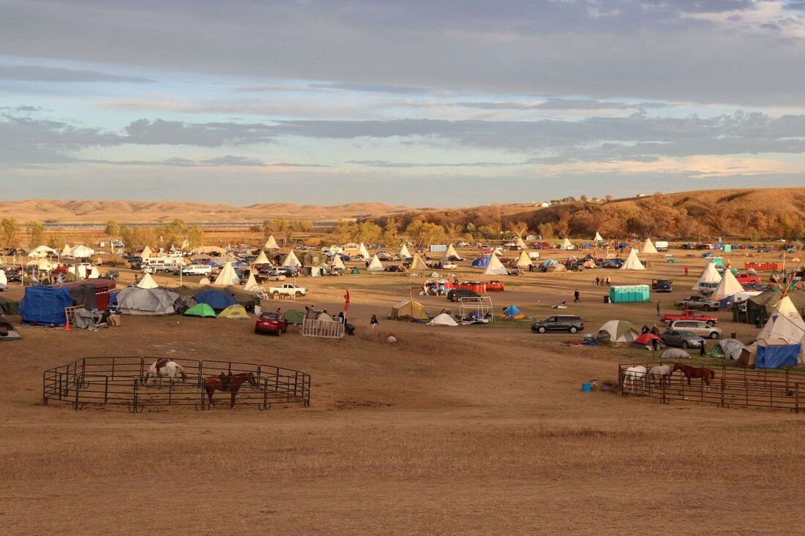
Willkommen
Willkommen bei Elsewhere!
Es ist großartig, dass Sie sich zusammengefunden und ein Barrio gebildet haben; wir freuen uns über Ihren Beitrag zum Festival und hoffen, dass Sie eine gute Zeit haben. Barrios sind ein wichtiger Teil von Elsewhere. Durch Zusammenarbeit können Sie Fantasie, Kreativität, Kunst und Spektakel in einem viel größeren Maßstab einbringen, als allein.
Dieses Dokument ist ein Leitfaden zum Betreiben eines Barrios. Es enthält nicht nur einige bewährte Praktiken, sondern auch wichtige Anforderungen, deren Einhaltung wir von Barrios benötigen. Nehmen Sie sich die Zeit, den Leitfaden zu lesen, und zögern Sie nicht, das Barrio Support Team oder eine der folgenden Ressourcen zu kontaktieren:
- Elsewhere-Website unter nobodies.team
- Freiwilligen-Website & Barrio-Anmeldung humans.nobodies.team
- Discord-Gruppe: discord.gg/Xmj6YbFwSM
- Kommunikation vor Ort: WhatsApp-Gruppe
- E-Mail: barrios@nobodies.team
Dieses Dokument wurde von Freiwilligen des Barrio Support Teams zusammengestellt. Es spiegelt nicht zwangsläufig die Ansichten der Nobodies Collective Association wider. Der Leitfaden ist ausschließlich für die Nutzung innerhalb der Elsewhere-Gemeinschaft gedacht und nicht zur Veröffentlichung oder Verbreitung außerhalb von Elsewhere bestimmt. Wenn Sie Fehler finden, diesen Leitfaden verbessern oder ihn in anderen Sprachen verfügbar machen möchten — melden Sie sich, Ihre Unterstützung ist willkommen!
Lesen Sie in der Zwischenzeit weiter und freuen Sie sich!
Staubige Umarmungen,
Ihr Barrio Support Team
Inhalt
Was drin ist.
- 1Planung
- 2Wie Sie Ihre Sachen nach und von Elsewhere bringen
- 3Eine Gemeinschaft schaffen
- 4Events in Ihrem barrio veranstalten
- 5Wasser und Wasserwürfel
- 6Essen und Trinken
- 7Strukturen bauen
- 8Generatoren und Strom
- 9Soundsysteme
- 10Feuer und Gas
- 11Leave No Trace
- 12Gesundheit und Sicherheit
- 13Umweltauswirkungen
- 14Bezahlung von Dingen
- 15Im (unwahrscheinlichen) Notfall
- 16Wie Sie nach Elsewhere kommen
- 17Mitwirkung in der allgemeinen Orga
Kapitel 1
Planung.
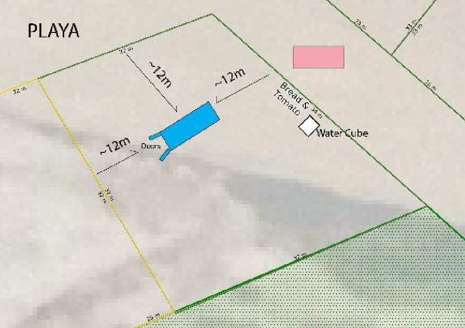
Was ist ein Barrio und sollten wir eines bilden?
Ein barrio ist eine Gruppe von Teilnehmenden, die sich um ein Thema zusammenfinden, gemeinsam campen und ein Stück der vergänglichen Stadt in der Monegros-Wüste erschaffen. Barrios (manchmal auch Camps genannt) sind alle einzigartig, halten sich aber an einige gemeinsame Prinzipien. Barrios sind:
- Einladend und inklusiv — visuell anregend und mit einem Plan für Barrierefreiheit und Menschenmanagement.
- Interaktiv — sie bieten Aktivitäten, Events oder Dienstleistungen, die der gesamten Gemeinschaft zur Verfügung stehen.
- Nachbarschaftlich — sie halten den Schall innerhalb der für die Zone geltenden Grenzen, unterstützen andere barrios, wann immer möglich, und helfen, etwaige Grenzstreitigkeiten zu lösen.
- Verantwortlich dafür, keine Spuren ihres Aufenthalts auf der Playa zu hinterlassen, sowohl innerhalb ihres zugewiesenen Campplatzes als auch darüber hinaus, und MOOP unter Kontrolle zu halten.
- Ausreichend sicher — barrios müssen die vom spanischen Recht und von der NCA festgelegten Sicherheitsanforderungen befolgen.
- Registriert — schließlich müssen Camps das Barrio-Anmeldeformular einreichen, einen Camp-Lageplan bereitstellen und alle benötigten Dienstleistungen innerhalb der Fristen bestellen.
Was ist der Unterschied zwischen einem Barrio und einer Niederlassung im Free Camp?
Es gibt nur wenige Dinge, die Sie als Barrio tun können, die Sie als Free Camp nicht tun können. Die wichtigsten Unterschiede sind:
- Als Barrio erhalten Sie einen reservierten Platz auf der Playa und müssen einen Lageplan bereitstellen. Die Mindestfläche für ein Barrio beträgt 10 x 15 m. Es gibt keine Höchst- oder Mindestanzahl an Campenden, die zur Bildung eines Barrios erforderlich ist.
- Als Barrio können Sie Events in den What? Where? When?-Guide eintragen*
- Um barrio-Strukturen zu errichten, qualifiziert sich ein Teil der Gruppe für die Early Entry (bis zu fünf Tage).
- Barrios sind verpflichtet, Leads zu benennen, die für bestimmte Themen verantwortlich sind, um die Gesamtorganisation zu unterstützen. Jedes barrio muss Leads haben für:
- Leave No Trace (LNT) — dieser Lead ist dafür verantwortlich, vor dem Event einen LNT-Plan zu erstellen, sicherzustellen, dass der barrio-Abfall ordnungsgemäß recycelt wird, und dass der barrio-Platz am Ende des Events sauber hinterlassen wird
- Welfare
- Consent (Einvernehmen)
- Shit Ninja und TAP Dancer — Lead(s), die sich um die Dixi-Toiletten und TAPs kümmern (Total Accessible Pee/Poop/Period Stations, Toiletten mit Handwaschstation, ausschließlich für Menschen mit Barrierefreiheitsbedarf oder während der Menstruation)
- Technischer Lead, zuständig für Strom — Person, die in Kontakt mit dem Elsewhere Power Team steht und die elektrische Sicherheit, den Anschluss an das Stromnetz und die Einrichtung von Blitzableitern koordiniert
* Es hält Sie tatsächlich absolut nichts davon ab, ein Event bei Elsewhere zu veranstalten, selbst wenn Sie nicht Teil eines barrios sind. Allerdings müssen wir wissen, wo Sie und Ihr Event sind, was in den Free-Camping-Bereichen eine Herausforderung sein kann. Manche Barrios erlauben Ihnen gerne, ein Event in ihrem Raum auszurichten; registrierte barrios finden Sie hier: https://humans.nobodies.team/Barrios.
Anforderungen der spanischen Behörden
Das auf Barrios angewandte Konzept der “Radical Self Reliance” (radikalen Eigenverantwortung) könnte bedeuten, dass Sie jede verrückte Truppe von Leuten zusammen campen lassen können, die dann irgendeine wacklige Schattenstruktur bauen, sich gegenseitig einen Stromschlag verpassen, unter unhygienischen Bedingungen leben und furchtbares Essen kochen, von dem alle Bauchweh bekommen, um schließlich von einem Blitz getötet zu werden, der in ihre nicht geerdete, drei Meter hohe Metallstruktur einschlägt.
Eine Bedingung der lokalen Behörden für die Nutzung des Geländes ist jedoch, das Event wie einen Campingplatz zu behandeln und alle geltenden nationalen Vorschriften einzuhalten. Die lokalen Behörden inspizieren das Gelände am Montag und erteilen erst danach die Lizenz für die Durchführung des Events. So spielverderberisch das auch erscheinen mag, die Vorschriften sind sinnvoll und tragen dazu bei, dass Barrios den Bedarf an Rettungsdiensten verringern. Das Letzte, was Elsewhere braucht, ist, die Notfall- oder Gesundheitsdienste der örtlichen Stadt zu belasten.
Sie finden die gesetzlichen Anforderungen unter jedem Abschnitt aufgeführt, rot hervorgehoben wie unten:
Gesetzliche Anforderung
Der Umfang des Campingbereichs muss eingezäunt oder anderweitig gekennzeichnet sein, wobei mindestens 10 m Abstand zwischen jeglicher Vegetation und dem Campingbereich einzuhalten sind. Darüber hinaus darf keine Küche oder Wärmequelle innerhalb der ersten 10 m innerhalb des Umfangs aufgestellt werden, und sie muss weiter als 20 Meter von jeglicher Vegetation entfernt sein.
Einige Anforderungen gelten nur für einzelne barrios, während andere NCA-weit gelten (Elsewhere-Organisationsverein). Beachten Sie, dass sich Vorschriften ändern können, und einige tatsächlich kurzfristig, halten Sie also Ausschau nach solchen Änderungen.
Barrio-Anmeldung
Ihre erste Anlaufstelle ist, sich als barrio anzumelden unter https://humans.nobodies.team/Barrios. Wenn Sie in dieser Phase Fragen haben, wenden Sie sich am besten über Discord oder per E-Mail an barrios@nobodies.team.
Platzierung und Stadtplanung
- Berechnen Sie den Platzbedarf. Wenn Sie Ihr Barrio anmelden, müssen Sie angeben, wie viel Platz Sie benötigen. Als Faustregel multiplizieren Sie dazu die Anzahl der Personen, die in Ihrem Camp schlafen, mit 15 oder 20 m². Damit berechnen Sie die Grundstücksmaße, die Sie für alle Strukturen nutzen könnten, einschließlich Schlaf- und Wohnbereichen. Addieren Sie dazu die ungefähren Maße Ihrer größten Tanz-/Party-/Workshop-/Strukturflächen separat.
- Platzieren Sie Ihr barrio auf der Karte. Dieser Schritt erfolgt über die Self-Placement-App (wir geben Ihnen den Link, sobald sie öffnet). Hier gibt es kein „Wer zuerst kommt, mahlt zuerst“. Wenn ein barrio bereits an der von Ihnen gewünschten Stelle ist, wird ein spezieller Discord-Kanal eröffnet, um sich mit ihnen abzustimmen und eine Lösung zu finden. City Planning steht für alle technischen Probleme während dieses Prozesses zur Verfügung.
- Alle stillhalten! Sobald alle einen Platz gefunden haben, ist der Platzierungsprozess abgeschlossen und es können keine Änderungen mehr vorgenommen werden — alle stillhalten! City Planning harmonisiert nun alles und bereitet die Karte für den nächsten Schritt vor.
- Container-Platzierung. Nun ist es Zeit für die Container-Platzierung. City Planning schickt Ihnen einen neuen Link zur App mit einem neuen Tool, um Container und Portacabins hinzuzufügen. Wir schicken Ihnen außerdem eine altmodische Karte wie die in der Abbildung unten, auf der Sie Ihre Container platzieren und an City Planning zurücksenden können. Mit diesen Informationen sorgt das Barrio Support dafür, dass Ihre Container an genau die richtige Stelle geliefert werden.
- Jetzt können Sie anfangen, sich das Layout Ihres Camps vorzustellen!
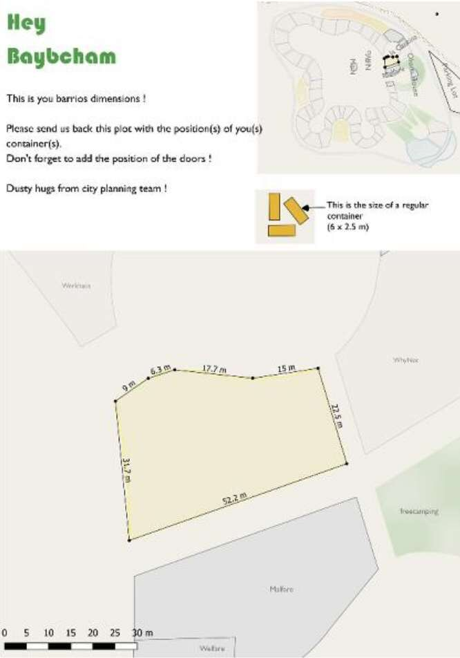
Ihr Layout planen
Bei der Planung des Layouts und dem Bau eines Barrios gibt es vieles zu berücksichtigen. Im Folgenden finden Sie einige Punkte, die zu bedenken sind, mit mehr Details in späteren Abschnitten des Dokuments.
Zur „Playa“ ausgerichtet
Die meisten Barrios werden eine Art Vorderseite zur Gemeinschaftsfläche des Geländes hin haben, die als „Playa“ bekannt ist. Hier kommen Besucher, um Ihr Barrio zu besuchen. Als Barrio sollten Sie einen Bereich haben, der für die Öffentlichkeit zugänglich ist. Sie können natürlich auch einen privaten Bereich haben, achten Sie jedoch darauf, dass dieser klar gekennzeichnet ist, wenn Sie etwas Privatsphäre wünschen.
Halten Sie Ihre Küche stets von den öffentlichen Bereichen fern, es sei denn, Sie mögen es, wenn zufällige Hippies Ihr Essen aufessen!
Parken
Während der Early Entry (Aufbau) oder des Strike (Abbau) sind Fahrzeugpässe vor Ort nicht erforderlich, und Sie können Ihr Fahrzeug nutzen, um Ihre schönen Sachen und glänzenden Freunde zu bringen. Wenn Sie keinen On-Site-Pass haben, achten Sie darauf, Ihr Fahrzeug vor Beginn des Events im ausgewiesenen Parkbereich am Gate abzustellen.
Während des Events dürfen sich Fahrzeuge im Barrio oder Free Camping überhaupt nicht bewegen, nicht einmal für Einkäufe oder Ausflüge zum Fluss. Sie können das innen geparkte Auto erst am Ende des Events (Sonntag) wieder nutzen.
Elsewhere rät davon ab, innerhalb des Barrios zu parken. Ausnahmen können für Fahrzeuge gemacht werden, die zur Unterstützung von Kunstinstallationen, für barrierefreien Zugang sowie für solche, mit denen große Mengen an Vorräten für das Barrio transportiert werden, erforderlich sind. In allen Fällen ist während des Events ein On-Site-Fahrzeugpass erforderlich.
Bitte geben Sie auf Ihrem Plan an, wo Fahrzeuge geparkt werden sollen.
Fahrzeugregeln
Fahrzeugpässe sind beim Check-in an der Barrio Reception erhältlich. Pro Camp ist ein On-Site-Fahrzeugpass erlaubt. Dieses Auto muss gefahren werden:
- Nicht schneller als 7 km/h und nur tagsüber
- Von 21:30 bis 7:30 ist kein Verkehr auf dem Gelände erlaubt.
- Nur die Umfangsstraße nutzen, kein Fahren über das Gelände/die Playa (Karte beachten)
Regen!
Bei Elsewhere regnet es, und wenn es regnet, dann sehr heftig!
Planen Sie in Ihrem Barrio eine Struktur ein, die Schutz vor Regen bietet. Überlegen Sie, ob Ihre Küche wasserdicht sein muss. Achten Sie außerdem besonders darauf, elektrische Geräte trocken zu halten (z. B. DJ-Booths).
Es ist sinnvoll, das Graben von Gräben einzuplanen, um Wasser vom Zelt oder der Struktur wegzuleiten. Bei starkem Regen bilden sich Bäche über das Gelände, die das Innere von barrio-Strukturen und Zelten überfluten und ruinieren können. Zelte und andere Strukturen dürfen nicht in Bereichen aufgestellt werden, in denen bei Regen natürlicherweise Wasser fließt, ebenso wenig auf der Umfangsstraße oder den internen Wegen.
Inklusion im Design
Alle Barrios müssen einen öffentlichen Raum haben, den alle Elsewhere-Teilnehmenden nutzen können, je nach Ihrem Angebot. Berücksichtigen Sie bei der Gestaltung und Anordnung Ihres Raums weniger mobile Teilnehmende. Hier sind einige Hinweise unseres Inklusions-Leads, um eine bessere Barrierefreiheit für Rollstuhlfahrende und Menschen mit Sehbeeinträchtigungen zu schaffen.
- Schaffen Sie mehr als einen Ein- und Ausgang. Bedenken Sie: Wenn in einem Barrio viele Menschen sind, ist es für eine rollstuhlfahrende Person gut, alternative Wege zum Betreten/Verlassen zu haben, ohne dass alle aufstehen müssen.
- Decken Sie Kabel und Gräben ab. In den Boden eingegrabene Stromkabel müssen festgestampft werden, um Fahrzeug- und Rollstuhlzugang zu ermöglichen. Obwohl Gräben zum Regenschutz notwendig sind, lassen Sie einen mindestens einen Meter breiten Bereich flach/abgedeckt für den Rollstuhlzugang. Falls nötig, kann dieser ausgehoben werden, wenn es regnet!
- Gehwege. Halten Sie alle Gehwege mindestens einen Meter breit und frei von Hindernissen! Denken Sie daran, wenn Sie Rebar (Bewehrungsstahl) einschlagen, Seile spannen, Möbel und Dekoration aufstellen usw. Denken Sie an jeden Ein-/Ausgang (vorne / hinten / rechts / links).
- Licht & Sichtbarkeit. Beleuchten Sie den Namen Ihres Barrios, mindestens mit ein paar LEDs, damit er aus 1 m sichtbar ist, noch besser, wenn man ihn aus zehn Metern Entfernung sehen kann. Gut für sehbehinderte Menschen und/oder Menschen mit Orientierungsschwierigkeiten (selbst herbeigeführtem Mangel an Mobilität).
- Stufen und Stolperfallen. Nirgendwo Stufen! Finden/überlegen Sie sich Wege, um Stufen zu vermeiden. Es gibt keine KLEINE Stufe. Identifizieren und decken Sie Stolperfallen (Seile, Rebar, Heringe und Befestigungen) mit Schutzmitteln wie Tennisbällen oder Dosen sowie mit Lichtern ab. Das sollte selbstverständlich sein, da es sehbehinderten Burnern beim Gehen hilft. Das Stolpern über etwas im Dunkeln ist bei Elsewhere die häufigste Verletzung für alle, ob mobil oder nicht!
- Vorhänge. Schneiden Sie sie ca. 5 cm über dem Boden ab. Sie können einen Vorhang nicht öffnen, wenn die Vorderräder darauf stehen!
- Sitzgelegenheiten, Matratzen. Nicht auf dem Boden: heben Sie sie um 50 cm an. Wenn Sie Paletten verwenden, befestigen Sie sie aneinander. Stellen Sie Sitzgelegenheiten nicht direkt auf den Boden, es ist zu schwer, ohne Beine allein aufzustehen.
- Hängematten. Je straffer die Spannung der Hängematte, desto leichter ist das Ein-/Aussteigen. Hängen Sie sie nicht höher als 50 cm über dem Boden auf.
- Tische / Werkbänke. Lassen Sie Platz für Füße und Vorderräder unter dem Tisch, ohne Hindernisse davor, um Zugang zu erhalten. Tischhöhe: min. 70 cm unter der Tischplatte (Zugang fürs Knie), max. 85 cm auf der Tischplatte (80 cm ist gut).
- Zweite Ebenen und Terrassen. Wenn Sie nicht wissen, wie Sie sie für alle zugänglich machen, machen Sie sie (unzugänglich) für niemanden. Aber wenn Sie es wollen, zum Beispiel: Galgen / Flaschenzug / Seil / Hebezug / DIY-Aufzug oder Lift / Talje.
- Umkleidebereiche. Manche Events bei Elsewhere können von den Teilnehmenden verlangen, ihre Kleidung zu wechseln oder, wahrscheinlicher, sie auszuziehen! Barrios sollten Menschen mit Mobilitätsproblemen berücksichtigen. Eines der besten Mittel, mit denen eine rollstuhlfahrende Person ihre Kleidung wechseln kann, ist die Verwendung einer Matratze auf einem Bett (beachten Sie: nicht der Boden).
Early Entry
Das Ticketing-Team stellt jedem Barrio-Lead ein Online-Early-Entry-Kontingent zur Verfügung, damit das Aufbauteam vor Beginn des Events Zugang zum Gelände erhält. Der Early-Entry-Zugangspass wird mit dem Ticketcode des Erbauers für das Event verknüpft. Sie müssen E-Mails und Ticketnummern für jedes Mitglied der Bautruppe in das Online-Early-Entry-Tool eintragen. Es ist wichtig, Ihren Early-Entry-Bedarf so bald wie möglich anzumelden, nachdem Sie das Kontingent Ihres barrios vom Elsewhere-Ticketing-Team erhalten haben.
Die Early Entry beginnt ab Mittwoch, dem 1. Juli. Wenn Sie ein besonders großes Projekt bauen und glauben, dass Sie früher vor Ort sein müssen, lassen Sie es uns wissen. Early Entry klingt nach Spaß — allerdings…
Wichtig
Die Early Entry ist dazu da, hart zu arbeiten und Ihr Barrio aufzubauen, nicht zum Feiern!!!
Ja, Sie müssen um 06:00 Uhr aufstehen, damit Sie um 07:00 Uhr mit der Arbeit beginnen können! Die Arbeitszeiten des gesamten Geländes liegen typischerweise zwischen 07:00 und 13:00 Uhr, dann von 16:00 bis 20:00 Uhr. Wer beim Feiern, beim Spielen lauter Musik oder beim nächtlichen Stören erwischt wird, wird streng ermahnt!
Die Zahlen sind begrenzt
Typischerweise dürfen bis zu 25 % Ihres Barrios früh aufs Gelände kommen, um beim Aufbau zu helfen; daher muss jedes Barrio die richtige Mischung an Personen bedenken. Wenn Sie ein kleines Barrio mit viel Infrastruktur haben, kann diese Zahl höher liegen. Das wird jeweils im Einzelfall geprüft.
Sie werden nicht von Werkhaus/Cantina verpflegt!
Die Cantina ist eine Küche, die zur Unterstützung der NCA-Organisation während Aufbau und Strike betrieben wird. Sie versorgt keine hungernden Barrio-Aufbauenden! Daher muss jedes Barrio vorrangig eine funktionierende Küche haben. Die Arbeit beim Aufbau eines Camps ist ziemlich anstrengend, also müssen Barrios die Verpflegung ihrer Aufbautruppe einplanen. Das muss RICHTIGES ESSEN sein und keine Instantnudeln! Erwägen Sie, ein Barrio-Early-Entry-Mitglied zu rekrutieren, das die Verpflegung der anderen übernimmt.
Vermeiden Sie es, während des Aufbaus Kinder mitzubringen
Der Aufbau ist praktisch eine Baustelle: Sicherheitsmaßnahmen sind nicht vorhanden. Die meisten Unfälle bei Elsewhere passieren während des Aufbaus. Es wird dringend empfohlen, keine Kinder als Teil der Bautruppe für Ihr Barrio mitzubringen.
Ankunft auf dem Gelände zum Aufbau
Die ersten Barrio-Ankommenden müssen planen, bei Tageslicht anzukommen — vor 21:00 Uhr. Wenn es dunkel ist: bleiben Sie vom Gelände fern und schlafen Sie die Nacht in einem schönen, bequemen Bett (oder einem Graben irgendwo). Nachts auf dem Gelände herumzufahren ist gefährlich, für Sie und möglicherweise für andere. Sie können Ihr Fahrzeug vielleicht am Gate stehen lassen und zu Fuß aufs Gelände gehen, aber wenn Sie vorhaben, mitten in der Nacht aufs Gelände zu fahren und beim Aufbau eines Zeltes herumzuwerkeln (und dabei alle aufzuwecken), vergessen Sie es! Genießen Sie es, NICHT auf der Playa zu sein!
Kommen Sie nicht am Montagmorgen vor Mittag an. Zu dieser Zeit wird die Geländeinspektion durchgeführt, der Feueralarm getestet und die Evakuierungsübung durchgeführt. Das Gate ist während dieser Zeit geschlossen. Es öffnet, sobald die Inspektion abgeschlossen ist.
Gate-Regel
Die Gate-Straße schließt 30 Minuten, bevor das Gate schließt. Alle Fahrzeuge MÜSSEN bis dahin die Security passiert haben.
Öffnungszeiten des Gates
- Mittwoch, 1. Juli: von 10 bis 22 Uhr.
- Donnerstag, 2. Juli: von 10 bis 22 Uhr.
- Freitag, 3. Juli: von 10 bis 22 Uhr.
- Samstag, 4. Juli: von 10 bis 22 Uhr.
- Sonntag, 5. Juli: von 10 bis 22 Uhr.
Bitte kontaktieren Sie gate@nobodies.team so bald wie möglich, falls Sie mit einem frühen Zug in Sariñena ankommen, bevor das Gate morgens öffnet, und sie werden ihr Bestes versuchen.
Erste Anlaufstelle: Barrio Reception
Melden Sie sich bei Ihrer Ankunft zuerst bei der Barrio Reception an, fragen Sie am Gate nach dem Weg, falls nötig. An der Barrio Reception können Sie vorab gekaufte Artikel wie LPG, Feuerlöscher und Fahrzeugpässe abholen. Während des Aufbaus verfügt die Barrio Reception außerdem über sehr begrenzte Einrichtungen, die Sie zum Aufladen von Werkzeugen und Telefonen nutzen können, Wasser zum Desinfizieren von Wasserwürfeln sowie Informationen darüber, wie Sie Ihr Wasser geliefert und Ihre Feuerlöscher geprüft bekommen.
Ihren Platz finden
Prüfen Sie die neueste Elsewhere-Karte für Ihren barrio-Standort: er könnte sich seit der letzten Karte, die Sie heruntergeladen haben, geändert haben. Barrios werden auf dem Boden mit Flaggen markiert. Flaggen mit zwei Namen zeigen Grenzen zwischen Barrios an. Bitte prüfen Sie beide Seiten einer Flagge.
Wichtig
- Sie müssen mindestens fünf Meter Abstand zwischen Ihrem barrio-Platz und dem Absperrband lassen. Diese Freiflächen sind Straßen, auf denen große Lkw vorbeifahren. Sie ermöglichen außerdem den Zugang für Rettungsfahrzeuge, falls nötig, und erleichtern anderen Barrios den Zugang. Wenn Sie dort Ihre Zelte aufstellen, werden sie ohne Vorwarnung entfernt oder vielleicht von einem Lkw zerquetscht. Bitte sagen Sie das allen Ihren Camp-Mitgliedern.
- Sie müssen außerdem mindestens zehn Meter Abstand zwischen Ihrem barrio und jeglicher Vegetation und 100 Meter zu barrancas / Schluchten lassen. Das ist aus Sicherheitsgründen und eine von den Behörden und lokalen Vorschriften durchgesetzte Vorgabe.
Wenn Sie unsicher sind, kann das City-Planning-Team Sie zu Ihrem Platz lotsen.
Gesetzliche Anforderung
Sie müssen mindestens zehn Meter Abstand zwischen Ihrem barrio und jeglicher Vegetation und 100 Meter zu barrancas / Schluchten lassen.
Abreise nach dem Strike
Wenn alle Strukturen abgebaut sind und Sie fast bereit sind abzureisen, senden Sie bitte eine Nachricht im Barrios-WhatsApp-Kanal, dass Sie sich auf die Abreise vorbereiten, und jemand vom LNT- oder Barrio-Support-Team kommt und prüft Ihr Grundstück.
Barrios müssen Elsewhere bis Mittwoch, den 9. Juli, verlassen haben, aber es können Vereinbarungen getroffen werden, damit Barrios länger bleiben. Wer für die NCA Strike-Dienst leistet, ist natürlich willkommen, bei Bedarf zu bleiben.
Zurück zum InhaltKapitel 2
Wie Sie Ihre Sachen nach und von Elsewhere bringen.
Sie haben also ein Barrio und jede Menge aufregender Kunstprojekte und KRAM, den Sie nach Elsewhere bringen möchten! Kaufen Sie nicht zwei Wochen vor dem Festival einen alten Transporter, überladen ihn und fahren mehrere tausend Kilometer, nur um überrascht zu sein, wenn er liegen bleibt.
Tipps, um einen vollen Transporter nach Elsewhere zu bringen:
- Schließen Sie sich mit einem anderen Barrio zusammen, wenn es aus derselben Gegend kommt wie Sie.
- Mieten Sie einen Transporter oder nutzen Sie einen bekanntermaßen funktionierenden!
- Wenn Sie Ihren eigenen Transporter nutzen, lassen Sie ihn vor der Fahrt warten.
- Schließen Sie eine europäische Versicherung und einen Pannenschutz ab.
- Stellen Sie sicher, dass der Schutz das Abschleppen zum Gelände und danach wieder nach Hause abdeckt. Unweigerlich ist ein Ersatzfahrzeug nicht groß genug.
- Stellen Sie sicher, dass Sie die Glühlampen-Auswahl und das Sicherheitszubehör dabei haben, das in Spanien gesetzlich vorgeschrieben ist. Wenn Sie durch andere Länder reisen (z. B. Frankreich), prüfen Sie auch dort die gesetzlichen Anforderungen für Scheinwerferlampen, Alkoholtester, Erste-Hilfe-Sets, Warndreiecke und mehr.
- Wenn Sie durch Frankreich fahren, müssen Sie eine „Crit’Air“-Plakette an Ihrem Fenster anbringen. Siehe folgenden Link: https://www.certificat-air.gouv.fr/
- Stellen Sie sicher, dass Sie genügend Warnwesten für alle haben, die im Transporter mitfahren.
Einige nützliche Informationen zu den Anforderungen für das Fahren in Spanien und Frankreich finden Sie hier:
- https://www.rac.co.uk/drive/travel/country/spain/
- https://francepeages.com/blog/driving-france-requirements-checklist
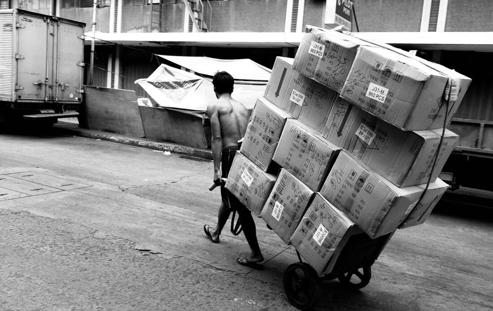
Einen Transporter packen
Wir empfehlen, stapelbare Kunststoff-Packkisten zu kaufen, wie sie beim Umzug von Büros verwendet werden, und all Ihre Sachen darin zu verpacken. Beschriften Sie sie klar, indem Sie Klebeband auf die Kisten kleben und darauf schreiben. Das Be- und Entladen wird viel einfacher und weniger geht kaputt. Außerdem unverzichtbar, wenn Sie Sachen für andere Barrios transportieren.
Wenn Sie Gepäck und Ausrüstung für Ihre Campmitglieder mitnehmen, erwägen Sie, ihnen diese Kunststoffkisten im Voraus zu geben, damit sie sie anstelle von Koffern verwenden. Das erleichtert das Packen Ihres Transporters, und Sie nutzen den Platz optimal. Vielleicht möchten Sie Ihre Campmitglieder daran erinnern, nichts Illegales in ihre Kisten oder ihr Gepäck zu legen; der Fahrer und die Mitfahrenden des Transporters haften, wenn sie beim Grenzübertritt am Zoll erwischt werden.
Empfindliche Dinge und audiovisuelle Geräte, die viel Geld kosten, sollten in Flightcases verpackt oder zumindest mit weichem Material zum Schutz umhüllt werden. Beschriften Sie, welche Seite nach oben gehört.
Aus dem UK: Durch Frankreich fahren oder eine Fähre nehmen
Wenn Sie im UK ansässig sind, ist es verlockend, eine der Fähren direkt nach Spanien zu nehmen, mag aber teuer erscheinen. Wir empfehlen es aus folgenden Gründen:
- Sie bekommen 24 Stunden Erholung davor (und nach dem Event, falls Sie zurückfahren),
- Sie können BIER trinken und duschen UND ein Bett haben!
- Es ist die Gelegenheit, sich dafür zu revanchieren, dass Sie die Sachen aller anderen mitnehmen
- Durch Frankreich zu fahren ist ziemlich teuer, wenn Sie Maut und Treibstoff zusammenrechnen, plus Übernachtungskosten, falls Sie unterwegs irgendwo bleiben
- Achten Sie auf Brexit-Themen, wenn Sie aus dem UK reisen.
- Sie geben mehr Geld für Treibstoff aus, wenn Ihr Transporter schwer beladen ist
- Vielleicht sehen Sie einen Delfin!
Lagercontainer
Es gibt inzwischen etwa 50 Container, die Barrios gehören und über die NCA durch das Barrio Support Team verwaltet werden. Jedes Jahr muss der Transport und die Lagerung für das kommende Jahr vor Beginn des Events im Voraus bezahlt werden. Wenden Sie sich an das Barrio Support Team für Anweisungen zum Kauf eines Containers, zur Registrierung für die Abholung und zur Zahlung der Lagerung nach dem Event.
Das City-Planning- und Barrio-Support-Team hilft, Ihren Container auf dem Grundstück zu platzieren (siehe Abschnitt Platzierung und Stadtplanung).
Hinweis
Dieses Jahr möchten wir mit allen zusammenarbeiten, um sicherzustellen, dass Container künftig leichter identifiziert werden können: notieren Sie Seriennummern, machen Sie Fotos und ermutigen Sie alle, ihre Container zu beschriften und/oder zu bemalen, und senden Sie diese an barrios@nobodies.team.
Was Sie in Containern lagern dürfen und was nicht
Die Regeln
Für Container gelten Lagerungsregeln, und die folgenden Gegenstände sind verboten:
- Lebensmittel oder verderbliche Waren. Alle Küchenutensilien, Kochgeräte und Ausrüstung, die zur Zubereitung oder Lagerung von Lebensmitteln verwendet wurden, einschließlich Teller und Besteck, müssen vor der Lagerung gereinigt werden. Der geringste Essensgeruch lockt viele Ratten an!
- Brennbare, entzündliche, explosive oder oxidierende Materialien, Flüssigkeiten oder Gase, z. B. Farbe, Benzin, Öl, Reinigungslösemittel, Gasflaschen, Cellulosenitratfilm, Feuerwerk
- Schusswaffen, Waffen, Munition, Sprengstoffe oder deren Bestandteile
- Chemikalien, radioaktive Materialien, biologische Stoffe; Schadstoffe, giftige oder gefährliche Materialien oder kontaminierte Waren oder andere Materialien potenziell gefährlicher Art
- Jeder Gegenstand, der Dämpfe, Geruch oder Gestank abgibt
- Abfallmaterialien
- Menschen
Generatoren können in Containern gelagert werden; allerdings muss zuvor der gesamte Treibstoff abgelassen werden. Eine Möglichkeit ist, den Generator einfach laufen zu lassen, bis ihm der Treibstoff ausgeht; versuchen Sie jedoch zuerst, den gesamten Treibstoff mit sicheren Methoden herauszubekommen. Lassen Sie den Tankdeckel einige Stunden offen, damit etwaiger Restkraftstoff verdunsten kann, und stellen Sie sicher, dass er von jeder Zündquelle entfernt ist und mit einem Schild versehen wird. Befestigen Sie den Deckel vor der Lagerung wieder fest.
Bitte lesen Sie den Abschnitt über Gasflaschen sorgfältig.
Tipps zu Containern:
- Sie müssen ein Plakat an den Innentüren Ihres Containers anbringen, das Ihren Campmitgliedern sagt, was nicht darin gelagert werden darf. Holen Sie es bei der Barrio Reception vor Ort ab.
- Die Container werden in der Sonne im ländlichen Spanien gelagert. Legen Sie nichts in den Container, das durch Hitze beschädigt werden könnte.
- Legen Sie niemals etwas Brennbares in den Container.
- Der Container ist nicht versichert. Wir empfehlen, keine teure Ausrüstung darin zu lagern. Nur Hippie-Kram!
- Lagern Sie keine Flüssigkeiten oder Wasser. Im Winter kann es gefrieren, und Wasser läuft überallhin aus.
- Versuchen Sie, den Container gleichmäßig zu füllen. Wird er nur an einem Ende beladen, verrutscht der Inhalt. Container werden per Kran auf den Transport-Lkw geladen und können sich in einem Winkel von etwa 30 Grad neigen.
- Packen Sie ausgewählte essenzielle und Notfallgegenstände als Letztes an die Tür Ihres Containers, was auch bedeutet, dass sie nächstes Jahr von Ihrer Bautruppe als Erstes ausgepackt werden. Wir empfehlen Folgendes:
- Wesentliche Küchenausrüstung — plus Herd (aber keine Gasflaschen einlagern!).
- Messer, Schere
- Erste-Hilfe-Set
- Notfall-Werkzeugkasten
- Vorschlaghammer oder Fäustel
- Taschenlampe
- Zelte, Schlafsäcke und Matratzen für die ersten Personen, die nächstes Jahr ankommen.
Kapitel 3
Eine Gemeinschaft schaffen.
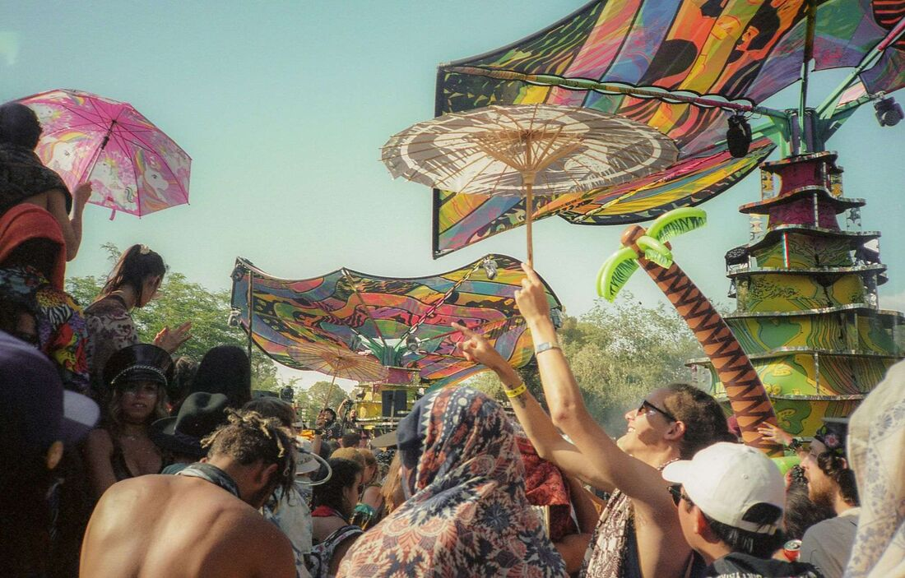
Inklusion
Ihr Barrio ist eine Ansammlung einzelner Menschen, mit allen Vorteilen und Frustrationen, die das mit sich bringt. Es wird immer ein Ungleichgewicht geben zwischen Mitgliedern, die scheinbar härter arbeiten als andere. Manche Menschen können früher mehr Zeit für den Aufbau oder später für den Strike aufwenden, während andere vielleicht nicht über die Festivaltage hinaus bleiben können. Es ist wichtig, dass die Aufgaben in einem Barrio so gleichmäßig wie möglich verteilt werden.
Versuchen Sie, Mitglieder zu rekrutieren, die sich auf das Thema des Barrios konzentrieren, einschließlich der Events, die das Barrio veranstaltet. Stellen Sie sicher, dass sie sich vor dem Event mit anderen Barrio-Mitgliedern treffen können. Radikale Inklusion ist ein Kernprinzip. Versuchen Sie, eine vielfältige und inklusive Bandbreite an Altersgruppen, Geschlechtern, Ethnien, Fähigkeiten, Nationalitäten und Menschen unterschiedlicher sexueller Orientierung zu rekrutieren. Bedenken Sie außerdem, dass Menschen dazu neigen, nach ihrem eigenen Abbild zu rekrutieren. Ein Barrio voller lauter DJs würde sich nur gegenseitig umbringen!
Orientierung
Wir empfehlen, früh in der Woche eine Willkommens-/Orientierungssitzung für alle Campmitglieder abzuhalten, in der Sie allen die Barrio-„Regeln“ und die Verantwortlichkeiten der Einzelnen vorstellen.
Wichtige Punkte, die behandelt werden sollten, sind:
- Wie das Camp funktioniert, einschließlich der Camp-Schichten: Küche, Pflichten, Aufgaben
- Leave No Trace — wie man Dinge entsorgt, wie das Recycling funktioniert, was MOOP ist
- Gesundheit und Sicherheit — Hände waschen, sauber bleiben, kein Essen herumliegen lassen, Erste-Hilfe-Set
- Woher das Wasser kommt, wie die Duschen funktionieren und wie man vermeidet, das ganze Wasser zu verbrauchen!
- Fragen rund um Einvernehmen und akzeptables Verhalten in Ihrem Camp
- Lärmrichtlinie und Regeln der Sound-Zone
Erinnerung
Nutzen Sie diese Gelegenheit, um alle nicht nur an ihre Verantwortlichkeiten im Barrio zu erinnern, sondern auch allgemeiner bei Elsewhere. Erinnern Sie die Barrio-Mitglieder daran, wer die Leads des Barrios beim Event sind, wie man sich für Event-Schichten anmeldet und welche Ihre zugewiesenen Toiletten sind.
Kinder
Das Ampelsystem für „kinderfreundliche“ Camps hat in den letzten Jahren sehr gut funktioniert, und wir setzen dieses System erneut um. Während der Barrio-Anmeldung füllen Sie Informationen darüber aus, wie kinderfreundlich Ihr Barrio ist. Um Informationen direkt mit Eltern zu teilen, wenden Sie sich vorab an inclusion@nobodies.team oder kommen Sie während des Events am Ohana House vorbei und aktualisieren Sie uns.
Ist Ihr Barrio kinderfreundlich oder nicht?
„Kinderfreundlich“ ist selbst definiert, und Sie können festlegen, dass Sie keine unbegleiteten Minderjährigen wünschen. Diese Informationen bereitzustellen garantiert nichts, informiert aber Eltern. Niemand wird Kinder davon abhalten, Camps zu betreten, die sich als reine Erwachsenen-Camps definieren, aber wir weisen Eltern auf Ihre Präferenz hin. Wenn Sie etwas Visuelleres oder Offizielleres möchten, kann es nützlich sein, ein Schild an Ihrem Barrio anzubringen, das „nur für Erwachsene“ angibt, oder Bereiche nur für Erwachsene klar zu kennzeichnen.
Manchmal nur für Erwachsene, manchmal nicht?
Wenn Ihr Barrio einen wechselnden Zeitplan hat oder als „elterliche Begleitung empfohlen“ gelten könnte, können Sie einige Details in Ihrer Barrio-Beschreibung angeben, zum Beispiel:
- Kinder sind tagsüber okay, aber nicht nachts
- es ist kinderfreundlich, aber Eltern sollten beachten, dass Aktivitäten für Erwachsene stattfinden
Einige Teile Ihres Barrios sind nur für Erwachsene, andere für alle Altersgruppen offen?
Wenn wir Eltern darauf hinweisen sollen, wenden Sie sich an inclusion@nobodies.team und teilen Sie uns die Einzelheiten mit. Andernfalls sind „Adults Only“- oder „18+“-Schilder, die vor Bereichen nur für Erwachsene angebracht sind, hilfreich.
Wenn Kinder bei Ihnen campen, lassen Sie es uns bitte wissen!
Wir sind neugierig und möchten alle Kinder bei Elsewhere kennenlernen, aber auch andere Kinder möchten vielleicht mit den Kindern in Ihrem Camp abhängen.
Haben Sie kinderfreundliche Workshops oder Aktivitäten in Ihrem Barrio?
Sie können Kinderevents im What? Where? When?-Guide aufführen! Geben Sie die Altersspanne für ein Event an, wenn Sie es aufführen; diese Events werden sowohl auf der Website als auch im gedruckten Guide gekennzeichnet. Diese Events können auch am Ohana House beworben werden.
Hinweis
Alle Informationen, die Sie mit dem Inclusion Team (inclusion@nobodies.team) teilen, werden zusammengestellt und am Ohana House ausgehängt, damit wir sie mit Eltern und Familien teilen können.
Gesetzliche Anforderung
Das spanische Recht verlangt, dass Minderjährige davon abgehalten werden, Material oder Aktivitäten zu sehen, die verboten sind, insbesondere sexuelle Handlungen und die Abgabe von Alkohol. Wenn Sie ein solches Event veranstalten, stellen Sie sicher, dass klare Schilder angebracht sind, die verlangen, dass Teilnehmende über 18 Jahre alt sind.
Kapitel 4
Events in Ihrem barrio veranstalten.
Barrios sind dazu da, mehr zu sein als eine Oase in der Wüste zum reinen Nutzen der Campmitglieder. Barrios sind ein Ausdruck dessen, was Sie als Kollektiv teilen möchten; sie sollten Gemeinschaftsräume, Erlebnisse, Events oder alles andere bieten, was Ihnen einfällt.
Die meisten Barrios veranstalten während der Woche bestimmte Events, die einmalig oder täglich stattfinden können und zu festen Zeiten oder den ganzen Tag laufen können. Events werden im Guide kategorisiert, zum Beispiel als Workshops, Partys, Spirituell/Heilung, Performance/Kunst und mehr. Wenn Sie ein Event veranstalten und keine passende Kategorie finden — lassen Sie es uns wissen unter comms@nobodies.team.
Der Elsewhere-Guide — What? Where? When?
Es wird ein Guide veröffentlicht, der Details zu allem enthält, was während der Woche passiert. Der Guide wird als Magazin gedruckt und den Leuten bei ihrer Ankunft bei Elsewhere ausgehändigt.
Die „What? Where? When?“-Website geht gegen Ende Mai online. Um in den gedruckten Guide aufgenommen zu werden, müssen Events bis Mitte Mai auf der Website registriert werden. Weitere Informationen zur Guide-Website folgen in Kürze. Alle Teilnehmenden erhalten im Voraus Zugang zur Website, um ihre eigene Agenda der Events zu erstellen, die sie im Laufe der Woche besuchen möchten.
Bei Fragen zögern Sie nicht, sich im Comms-Kanal auf Discord zu melden.
Zurück zum InhaltKapitel 5
Wasser und Wasserwürfel.
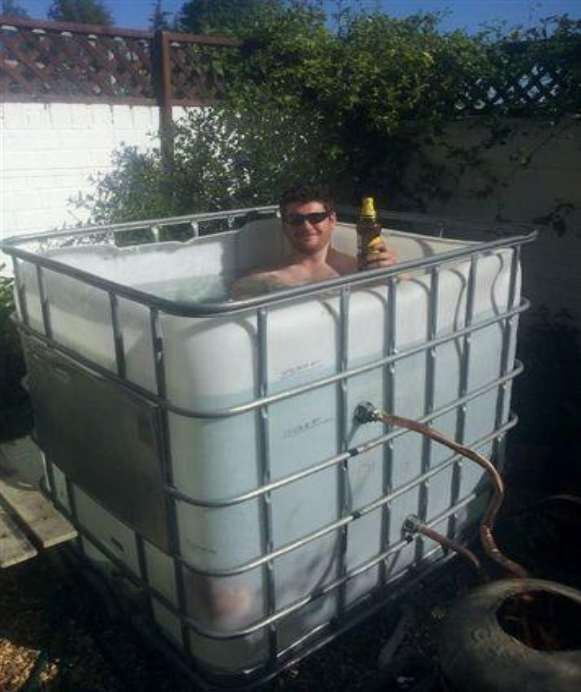
Sie brauchen viel Wasser!
Wasser wird vom Event nicht bereitgestellt, und es gibt keinen Wasserhahn!!
Die Standardlösung für die Wasserversorgung sind „Wasserwürfel“, technisch „IBC“-Würfel genannt, was für „Intermediate Bulk Container“ steht. Diese fassen jeweils 1000 Liter Wasser, das heißt, Sie benötigen einen Würfel für je 30 Campmitglieder.
Ihr Barrio muss so viele Wasserwürfel haben, wie in der Tabelle unten angegeben:
| Campmitglieder im Barrio | 30 | 60 | 90 | 120 | 150 | 180 |
|---|---|---|---|---|---|---|
| Benötigte Wasserwürfel | 1 | 2 | 3 | 4 | 5 | 6 |
Gesetzliche Anforderung
Duschen: Es muss mindestens eine Dusche für je 30 Campingeinheiten oder Teile davon vorhanden sein. Als Campingeinheit gilt eine Gruppe von vier Personen, wenn Ihr Camp also mehr als 120 Personen hat, müssen Sie mindestens zwei Duschen haben. Es muss genügend Wasser verfügbar sein, um ein Minimum von 30 Litern Wasser pro Person und Tag für die Hygiene zu gewährleisten. Dies schließt kein abgefülltes/trinkbares Wasser zum Trinken ein.
Hinweis
Es liegt an Ihnen und Ihrem Barrio, einen Wasserwürfel zu kaufen, ihn zu desinfizieren, ein Gestell dafür zu bauen und ihn danach in Ihrem Container wegzupacken oder vom Gelände zu entfernen. Wie macht man das alles? Lesen Sie weiter!
Wo bekomme ich einen Wasserwürfel?
Die empfohlenen Optionen sind:
- Sie können einen über das Barrio-Bestellformular kaufen oder mieten und ihn bei der Barrio Reception vor Ort abholen.
- Sie können einen überall kaufen, müssen aber den Transport zum und vom Gelände selbst organisieren!
Wie desinfiziere ich einen Würfel und verhindere, dass er ALLE in meinem Barrio vergiftet?
Verwenden Sie zum Desinfizieren Ihres Würfels Haushaltsbleichmittel (5 % Chlor), keine clevere Industriebleiche oder hippie-erdverbundene Bleiche aus Hanf und Mungbohnen. Das wäre Bleichmittel in gelben Behältern in normalen Supermärkten.
Den Würfel vor der Nutzung desinfizieren
Nehmen Sie die Ratte, gebrauchte Nadeln und sonstigen Unrat aus dem Würfel. Bringen Sie den Würfel vom Gelände weg an einen Ort mit Zugang zum Abwassersystem.
Füllen Sie den Würfel zu etwa 1/5 mit Wasser, geben Sie etwa eine Tasse Spülmittel und fünf Liter Haushaltsbleiche hinzu und lassen Sie ihn fünf Minuten stehen. Drehen Sie den Würfel wiederholt auf jede Seite, sodass alle Seiten im Wasser einweichen, und entleeren Sie ihn dann durch den Hahn, zunächst in ein Becken oder einen Eimer, dann den Rest ins Abwassersystem.
Tauchen Sie den Deckel und die Hahn-Baugruppe weitere 20 Minuten in den Eimer. Reinigen Sie überschüssiges Seifenwasser mit einem Schlauch oder Hochdruckreiniger ab.
Lassen Sie schließlich den Inhalt durch den Hahn in einen Behälter ab. Schütten Sie das gebrauchte Bleichwasser nicht auf die Playa-Oberfläche: bringen Sie das Wasser irgendwo in die Zivilisation, um es ins Abwassersystem zu entleeren. Alternativ verwenden Sie dieselbe Menge Wasser und Bleiche, aber mit einem Hochdruckreiniger mit einem speziellen Aufsatz zur Wasserwürfel-Reinigung.
Den Würfel beim Nachfüllen desinfizieren
Elsewhere reagiert äußerst empfindlich darauf, dass sich Menschen nicht mit Magen-Darm-Infekten anstecken. Es ist von kritischer Bedeutung, den Würfel desinfiziert zu halten, sonst infiziert er alle im Camp. Daher empfehlen wir, bei jeder Füllung eine geringe Menge Bleiche hinzuzufügen: 10 ml pro Würfel. Geben Sie diese hinzu, während der Würfel gefüllt wird, damit sie sich vermischt. Lassen Sie den Würfel einige Stunden stehen, damit der Bleichgeschmack verfliegt.
Diese geringe Menge Bleiche ist nicht giftig und ist eine gängige und gut etablierte Praxis für Gemeinschaften, die statische Wassertanks nutzen.
Wenn Sie befürchten, dass ein leicht bleichiger Geschmack Ihr Kochen beeinträchtigt, können Sie abgefülltes / Mineralwasser verwenden. Auch das Hinzufügen von Zitronensaft hilft.
Kindern, Schwangeren und Menschen mit Immunschwäche wird geraten, abgefülltes Wasser zu trinken, und sie sollten ihr eigenes abgefülltes Wasser mitbringen (Eigenverantwortung).
Muss er auf ein Gestell?
Idealerweise ja. Sie müssen Wasser aus dem Würfel in andere Behälter gießen. Bringen Sie einen Hahn an und stellen Sie ihn mindestens 70 cm über dem Boden auf, damit alle ihn erreichen können.
Bedenken Sie, dass 1000 L Wasser eine Tonne wiegen, Ihre Struktur muss also stabil sein.
Es gibt einige Anleitungen, wie man selbst eines baut, der einfachste und günstigste Weg ist jedoch, vier kleine Holzpaletten zu nehmen und sie alle zusammenzuschrauben!
Die gute Nachricht ist, dass das Barrio Support Team Paletten vermietet! Barrios können diese über das Barrio-Bestellformular bestellen.
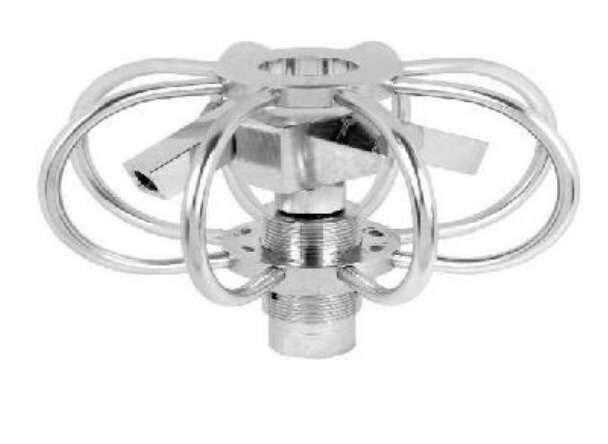
Wie bekomme ich meinen Würfel gefüllt?
Ein Wassertruck besucht das Gelände während der Woche, um Wasserwürfel nachzufüllen. Um einen Besuch des Wassertrucks zu erhalten:
- Hissen Sie eine Flagge an Ihrem Wasserwürfel, um zu zeigen, dass er gefüllt werden muss. Ihr freundliches Barrio Support Team verteilt Stangen mit Flaggen am Ende, damit der Wassertruck Sie leichter findet. Bitte stellen Sie diese nur auf, wenn Sie einen Würfel füllen müssen.
- Senden Sie eine Anfrage zum Wasser-Nachfüllen im dafür vorgesehenen WhatsApp-Kanal. Diese Anfrage wird gelöscht, wenn das Nachfüllen erledigt ist.
Wichtig
Warten Sie nicht, bis Ihr Würfel vollständig leer ist, um ihn nachzufüllen!
Das Wassertruck-Team beginnt seine Route jeden Morgen um 10 Uhr. Die Route kann einige Stunden dauern, daher erhalten Sie Ihr Wasser möglicherweise erst später am Tag.
Wenn Sie Ihr Schild nicht rechtzeitig an Ihrem Wasserwürfel anbringen und der Wassertruck an Ihnen vorbeifährt, kehrt er nicht um, um Sie zu bedienen. Sie müssen dann bis zum nächsten Tag warten!
Wassergutscheine
Sie bezahlen die Nachfüllungen mit einem Gutschein, den Sie dem Truck übergeben. Jeder Gutschein kostet €57 und füllt einen Würfel mit bis zu 1.000 Litern. Wir empfehlen, dass jedes Barrio vorab mindestens drei Wasser-Nachfüllungen und 30 Beutel Eis vor dem Event kauft. Wir möchten Transaktionen vor Ort an der Rainmaker Station bei No Info so weit wie möglich reduzieren.
Im Voraus bezahlte Gutscheine liegen bei Ihrer Ankunft zur Abholung an der Barrio Reception bereit.
Vorschriften verlangen ein Schild an Ihrem Wasserwürfel
Gesetzliche Anforderung
Wasser in den Wasserwürfeln muss als „nicht zum Trinken geeignet“ gekennzeichnet sein.
Ja, es stimmt. Wir alle müssen an jedem Würfel ein Schild anbringen, das „Nicht zum Trinken geeignet“ sagt, auf Englisch und Spanisch. Keine Sorge, das Wasser ist trinkbar. Viva España!
Wenn Sie kein Schild zum Anbringen am Würfel haben, kommen Sie bei der Barrio Reception vorbei, um eines zu bekommen.
Wie entleere ich ihn nach dem Event?
Der Würfel enthält sauberes Wasser, also kann er auf den Playa-Boden entleert werden. Bevor Sie dies tun, gehen Sie jedoch zum Werkhaus und verkünden Sie, dass Sie eine Menge Wasser loswerden müssen, und jede Menge schmutziger Leute kommen und genießen den Spa-Tag in Ihrem Barrio! Achten Sie nur darauf, dass das Wasser nicht in Richtung des Zeltes von jemandem fließt.
Den Würfel nach dem Event lagern
Das Barrio Support bietet eine Möglichkeit, Wasserwürfel separat in der Anlage von Lopez zu lagern. Dies kann über das Barrio-Bestellformular gekauft werden.
Wichtig
Der Würfel muss entleert, für die Lagerung vorbereitet und zur Barrio Reception transportiert werden, um bei Lopez gelagert zu werden. Die Lagerung muss vor dem Event gebucht werden und nicht am Tag selbst!
Der Würfel ist Ihre Verantwortung, Sie müssen ihn also vom Gelände entfernen und irgendwo lagern. Stellen Sie sicher:
- der Würfel ist leer
- der Deckel oben ist locker, aber nicht ganz ab. Wenn Sie den Deckel ganz abnehmen, können Ratten hineinfallen und sterben, was zum Tod von Wildtieren und einem Tote-Ratte-im-Wasserwürfel-Problem für Sie nächstes Jahr führt.
- der Hahn ist offen, damit Luft ein- und ausströmen kann
- das Deckelloch ist mit einem darüber befestigten Stück Stoff abgedeckt, damit keine Ratten hineingelangen
Duschen
Geländelayout
Stellen Sie Duschen aus Gründen der Lebensmittelsicherheit von Küchenbereichen entfernt auf. Berücksichtigen Sie die Hangneigung des Geländes, um sicherzustellen, dass schmutziges Wasser nicht in das Zelt von jemandem / in einen Aktivitätsraum / eine Chill-Zone läuft! Planen Sie den Standort der Duschen unter Berücksichtigung der Barrierefreiheitsbedürfnisse aller Camp-Mitglieder. Lassen Sie einen Platz von mindestens 2x2 Metern.
Inklusion & Barrierefreiheit
Schaffen Sie einen ebenen Eingang zur Dusche für Rollstuhlfahrende oder Menschen mit Bewegungsschwierigkeiten. Das kann eine im Boden vergrabene Palette sein, die mit Matten bedeckt ist — fügen Sie aber Bretter zur Palette hinzu, um Lücken zu füllen. Oder ein Brett, aber alles ist besser als eine matschige Pfütze!
Wenn Sie Duschbeutel verwenden, sehen Sie einen Flaschenzug vor, um die Beutel leicht anzuheben und abzusenken. Duschbeutel müssen an einem Haken hängen, der mindestens 50 cm höher ist als die duschende Person, daher ist eine Anordnung aus Flaschenzug und Karabiner der beste Weg, Beutel zu wechseln.
Eine elektrische Pumpe und eine Handbrause ist für jeden mit Mobilitätsproblemen (oder ohne) am einfachsten. Wenn Sie eine elektrische Pumpe einbauen, stellen Sie nur sicher, dass sie eine Zeitschaltuhr hat, sonst leert Ihr Camp Ihren Wasserwürfel schnell, weil es sich einbildet, in einer Shampoo-Werbung zu sein.
Stellen Sie sicher, dass jeder Duschkopfaufsatz abgenommen und von einer im Rollstuhl sitzenden Person erreicht und auf Stuhlhöhe verwendet werden kann (das schließt das Waschen von Hintern und Füßen ein).
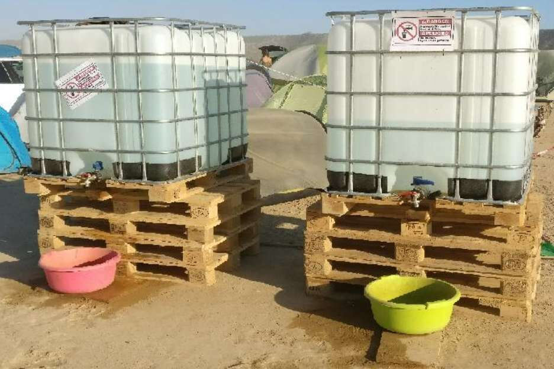
Abwasser
Es gibt verschiedene Stufen von eklig-igem Wasser. Das Gelände ist landwirtschaftliche Fläche und verträgt daher geringe Mengen an Dingen wie Seife und Bleiche und profitiert sogar von Dingen wie Kompost.
Dinge, die in der Nähe Ihres Barrios auf den Boden dürfen:
- Duschwasser — bitte verwenden Sie umweltfreundliche Seifen und Shampoos. Keine Haarfärbemittel!
- Kochwasser für Dinge wie gekochtes Gemüse, Kartoffeln, Pasta
- Geschmolzenes Eis
- Wasser aus Kühlboxen — wenn sauber!
Dinge, die Sie sammeln und ins Buschland abseits des Campings bringen müssen:
- Kochflüssigkeiten — z. B. Tomatensuppe
- Getränkereste — Tee, Kaffee, Bier, Erfrischungsgetränke, Wein
- Spülwasser, sofern nicht verfärbt, fettig oder mit Lebensmitteln kontaminiert
Dinge, die Sie außerhalb von Elsewhere entsorgen müssen:
- Schütten Sie kein Bratfett und keine Öle auf den Boden — sammeln und bewahren Sie sie in einem ausreichend großen Behälter auf und nehmen Sie sie zur Entsorgung außerhalb von Elsewhere mit. Die W&R-Zone kann keine Bratöle und -fette aufnehmen.
Der Hauptgrund, Dinge vom Camping wegzubringen, ist, dass Abfallflüssigkeiten Fliegen anziehen können — Fliegen können zwischen kontaminiertem Material und sauberen Oberflächen wandern und dabei Bakterien mitbringen. Es kann auch unangenehm riechen. Bitte schütten Sie Abwasser nicht wiederholt an dieselbe Stelle im Buschland, sonst entwickeln sich Gerüche. Schütten Sie es nicht bergauf, sonst kann es bei Regen zurück in Ihr Camp gespült werden.
Verwenden Sie die Windmühlen-Spritztechnik, um Wasser über eine größere Fläche zu verteilen, damit es schneller verdunsten kann.
Warnung
Drei wichtige Regeln zu Abwasser/Abfallflüssigkeiten:
- Schütten Sie keine Abfallflüssigkeiten in Dixi-Toiletten!
- Schütten Sie keine Abfallflüssigkeiten in Dixi-Toiletten!
- Schütten Sie KEINE Abfallflüssigkeiten in Dixi-Toiletten!
Das Einzige, was in Dixi-Toiletten darf, kommt aus Ihrem Körper, das ist Kacke, Pisse und Kotze. Auch Blut. Wenn Sie eine Pinkelflasche in Ihrem Zelt haben, kann diese bei einem frühmorgendlichen Walk of Shame in die Dixi-Toilette entleert werden.
Die Playa ist kein Wasserpark
Bitte achten Sie auf den Wasserverbrauch Ihres Barrios. Camp-Mitglieder müssen nicht dreimal am Tag duschen oder sich jeden Tag mit Shampoo + Spülung die Haare waschen.
Wasser ist eine kostbare Ressource und wird immer knapper. Viele Regionen erleben Dürre. Trainieren Sie sich und Ihr Barrio für eine Welt mit weniger Wasser und lernen Sie, sich hübsch zu machen, ohne Wasser zu verschwenden. Stellen Sie sicher, dass Sie dies dem gesamten Barrio zu Beginn des Events kommunizieren. Embrace the Dust (Nehmt den Staub an).
[Sie dürfen am Ende einen Wasser-Spa veranstalten, wenn Sie Ihren Würfel für die Lagerung entleeren müssen.]
Zurück zum InhaltKapitel 6
Essen und Trinken.
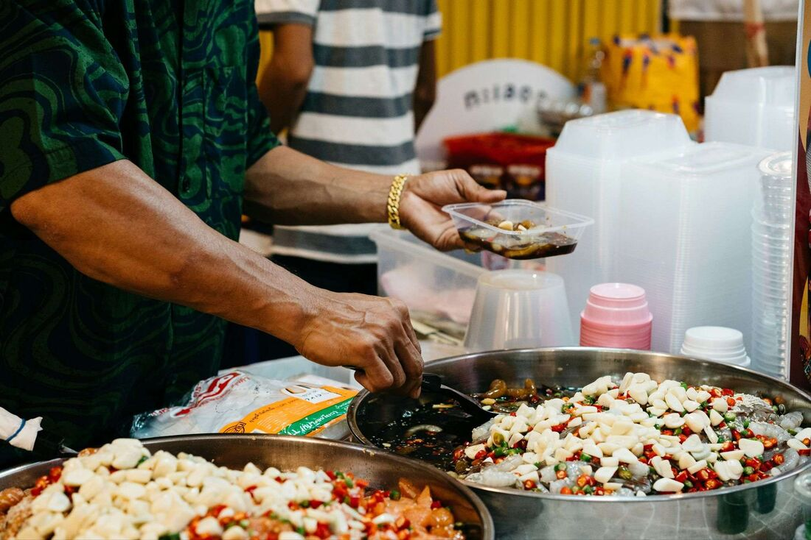
Es wird etwa fünfmal so schwierig sein, bei Elsewhere eine Mahlzeit zu kochen wie in Ihrer Küche zu Hause! Wählen Sie vor diesem Hintergrund einfache, aber nahrhafte Rezepte und bereiten Sie Essen abseits des Geländes vor, um den Kochteil vor Ort so einfach wie möglich zu machen. Manche Barrios bereiten all ihre Mahlzeiten zu, frieren sie ein, legen sie in eine Gefriertruhe und nehmen das Ganze mit nach Elsewhere. Eine Gefriertruhe und ihr Inhalt können während des Transports bis zu drei Tage gefroren bleiben, wenn sie versiegelt und nicht geöffnet wird.
Die Küche hygienisch und sauber zu halten ist sehr wichtig, um alle bei Elsewhere gesund zu halten. Unten finden Sie jede Menge guter Tipps.
Küchenorganisation
Inklusion
Das Layout der Küche muss möglicherweise auch weniger mobile Menschen als Sie selbst berücksichtigen. Planen Sie entsprechend, um Rollstuhlzugang und Erreichbarkeit zu ermöglichen. Sorgen Sie für klare Beschilderung für sehbehinderte Menschen.
Lagerung
Bewahren Sie alles in Behältern auf, einschließlich Teller, Messer und Gabeln. Durchsichtige Behälter sind natürlich besser, um Dinge zu finden! Lagern Sie Lebensmittel ordnungsgemäß:
- Bewahren Sie Trockenlebensmittel im Schatten in Behältern mit Deckel auf
- Bewahren Sie ungekochtes Obst und Gemüse im Schatten und in Behältern mit Abdeckung auf
- Lagern Sie Lebensmittel mit hohem Risiko jederzeit in einer Kühlbox oder einem Kühlschrank, wie rohes Fleisch, gekochtes Fleisch, Geflügel, Milchprodukte, Eiprodukte, Meeresfrüchte, verarbeitetes Gemüse und Obst.
- Vermeiden Sie bei Elsewhere Lebensmittel, die unter 5°C gekühlt werden müssen
- Vermeiden Sie Meeresfrüchte, es sei denn, sie werden am selben Tag gekauft und gegessen.
Geschirr spülen
Verwenden Sie ein Drei-Becken-Spülsystem. Das erste Becken enthält Wasser mit Spülmittel, das zweite warmes Wasser zum Abspülen. Das dritte Wasser mit einer Bleichlösung. Geben Sie etwas Bleiche in Ihr Spülwasser, damit Ihre Spülbecken nicht zu interessanten mikrobiologischen Experimenten werden. Denken Sie daran, umweltfreundliches Spülmittel mitzubringen, da es in Spanien schwer zu finden ist!
Sehen Sie sich folgendes Video für ein Beispiel an (sorry, es ist amerikanisch): https://youtu.be/T3dasib2lY8
Aufräumen
- Halten Sie eine KLAR BESCHRIFTETE Sprühflasche mit verdünnter Bleiche zum Reinigen bereit. Sorry, das sind US-Maßeinheiten — aber nützlich: http://modernsurvivalblog.com/health/disinfectant-bleach-water-ratio/
- Lassen Sie keine Essensreste und schmutzigen Teller und Tassen im Camp herumstehen
- Waschen Sie Tassen/Gläser zwischen den Benutzungen
- Wenn Essen oder Trinken verschüttet wird, verdünnen Sie es mit Wasser, um Fliegen fernzuhalten
- Bringen Sie Fliegenfänger und Fliegenabdeckungen für Lebensmittel mit, da Fliegen eine Plage sind und Menschen krank machen
Abfall managen
- Halten Sie Ihre Camp-Mülltonnen von Ihrer Camp-Küche fern und halten Sie die Deckel jederzeit auf Ihren Tonnen
- Besorgen Sie sich einen guten Biomüll-Eimer mit einem Deckel, der dicht schließt — so werden Fliegen ferngehalten, Sie recyceln dennoch die Lebensmittel und es gibt keinen Geruch oder zu viel Schmutz.
- Werfen Sie keine Lebensmittelabfälle in die Toilettenlöcher oder in die Gräben rund um den Campingplatz
- Prüfen Sie die Abschnitte Leave No Trace und MOOP für weitere Informationen zu Abfall und Recycling.
Grundlegende Lebensmittelsicherheit und Hygiene
- Es ist ratsam, gekochtes Essen nicht aufzubewahren, selbst wenn Sie einen Kühlschrank haben.
- Erwärmen Sie zuvor gekochte Mahlzeiten nicht wieder.
- Es ist ziemlich heiß. Wenn Sie eine Kühlbox mit Eis verwenden, stellen Sie sicher, dass das Wasser aus den geschmolzenen Eisbeuteln abgelassen und das Eis regelmäßig mit sauberen Händen ersetzt wird.
- Vermeiden Sie es, Getränke, Tassen, Teller und Besteck mit anderen Menschen zu teilen.
Ausrüstung
- Sie können nie genug Geschirrtücher haben — zum Abtrocknen, zum Anheben heißer Dinge, zur Verwendung als Fliegenabdeckung
- Küchengeräte sind unverzichtbar — zusätzliche Sparschäler, Dosenöffner, Scheren, scharfe Messer, Schneidebretter usw. ermöglichen es weiteren Campenden, in der Küche auszuhelfen, nur für den Fall
- Große, mit Essen gefüllte Töpfe sind verdammt schwer — stellen Sie sicher, dass Sie starke Helfer und riesige Kellen haben, um das Essen herauszuschöpfen
Dinge, die vor der Abreise vorzubereiten sind, Messys Tipps:
- Wenn es etwas gibt, von dem Sie definitiv wissen, dass Sie es brauchen, kaufen Sie es, bevor Sie losfahren — insbesondere Gewürze, Spülmittel usw. Es sei denn, Ihr Spanisch ist hervorragend, wird das Auffinden bestimmter Produkte schwierig, wenn nicht unmöglich.
- Prüfen Sie die Eis-Situation, bevor Sie losfahren — wir sind letztes Jahr grün geworden und haben Kühlakkus für Kühlboxen gekauft. Diese wurden vom lieben Eis-Camp eingefroren und wir hatten genug, um sie jeden Tag aufzufüllen — so liegt das Essen nicht im Wasser, Sie müssen kein Geld für Eis ausgeben und das Ganze ist etwas grüner. Das funktioniert allerdings nur, wenn Sie ein freundliches Eis-Camp haben!
- Halten Sie die Rezepte einfach — die Leute wollen kein Gourmetessen, sie wollen volle Bäuche! So ist es für die Kochenden viel einfacher und für die hungrigen Wartenden viel schneller.
- Snacks — die Leute brauchen ziemlich kontinuierlich Essen, was mit dem Schwitzen in der Hitze, dem Tanzen wie Verrückte usw., halten Sie also reichlich salzige und süße Snacks bereit, die sich die Leute nach Belieben greifen können. Wir haben letztes Jahr in großen Mengen Madeleines gekauft, was ein durchschlagender Erfolg war.
- Nehmen Sie vielleicht den Fokus vom Alkohol — wir haben eine alkoholfreie Küche betrieben. Das ganze Geld floss ins Essen, und die Leute besorgten sich ihre Getränke nach Bedarf selbst. So fühlt sich niemand betrogen, der nicht so viel trinkt wie andere — das kann böses Blut vermeiden und hält außerdem die Kosten niedrig.
Brandschutz
Ihre Küche muss mindestens 20 m von jeglicher Vegetation und 10 m vom Umfang Ihres Geländes entfernt aufgestellt werden. Achten Sie auf das Layout Ihrer Küche im Hinblick auf den Brandschutz: Gasflaschen müssen im Schatten aufbewahrt werden und brennbares Material sollte gut vom Kochbereich entfernt gehalten werden.
Jedes barrio ist verpflichtet, mindestens einen 6-kg-ABC-Pulverlöscher zu haben; er muss sich an einem zugänglichen Ort mit einem Feuerlöscherschild darüber befinden. Sie sollten außerdem eine Löschdecke in der Küche haben, um kleine Brände schnell abdecken und ersticken zu können. Stellen Sie sicher, dass alle im Camp wissen, wie sie im Brandfall reagieren und wie sie die Brandschutzausrüstung benutzen.
Es dürfen keine festen Brennstoffe vor Ort sein: das bedeutet kein brennendes Holz, keine Kerzen…
Brandschutzregeln
- Keine Küche oder Wärmequelle darf innerhalb der ersten 10 m innerhalb des Umfangs aufgestellt werden, und sie muss weiter als 20 Meter von jeglicher Vegetation entfernt sein.
- Sie müssen MINDESTENS einen 6-kg-ABC-Pulverlöscher haben!
- Gasflaschen müssen im Schatten aufbewahrt werden.
Koch-Grundlagen
Ernährung
Wir haben Studien zum Nährstoffbedarf beim Wüstencamping durchgeführt, und abgesehen vom offensichtlichen Rehydrierungsbedarf (hohe Salzmengen) erfordert die Ernährung aller hohe Anteile an Protein. Wenn Sie also dachten, jede Mahlzeit sei eine Instantnudel, denken Sie noch einmal nach!
Das kann im Widerspruch zu vegetarischen und besonders veganen Ernährungsanforderungen stehen, daher ist sorgfältige Planung nötig. Einige Hinweise:
- Protein in vegetarischer Ernährung umfasst Eier, Käse, Quorn, Fleischalternativen
- Protein in veganer (und damit vegetarischer) Ernährung umfasst Nüsse, Linsen, Bohnen, Soja
- Quorn ist nicht vegan! Seien Sie vorsichtig mit anderen „Fleischersatzprodukten“.
- Pasta ist (meist) nicht vegan!
- und wenn wir schon dabei sind… Meeresfrüchte sind nicht koscher!
Bevor Sie mit dem Kochen beginnen
- Waschen Sie sich: Sehen Sie sich den Abschnitt zur (Hand-)Waschstation an
- Waschen Sie alles Gemüse & entfernen Sie Schalen vor dem Kochen
- Reinigen Sie die Arbeitsflächen mit antibakteriellen Reinigungssprays
- Waschen Sie jegliche Kochausrüstung erneut, falls sie herumgestanden hat
Während des Kochens
- Garen Sie Lebensmittel gründlich bei hoher Temperatur (insbesondere Geflügel, Schwein, rotes Fleisch, Würste, Kidneybohnen)
- Halten Sie das Essen bei der Zubereitung oder dem Servieren mit einer Fliegenabdeckung bedeckt
Nach dem Kochen
- Räumen Sie es weg; siehe Lebensmittellagerung
- Reinigen Sie die Arbeitsflächen mit antibakteriellen Reinigungssprays
- Abwaschen: legen Sie einen Plan mit dedizierten Personen fest, die sich vor dem Beginn die Hände waschen und desinfizieren
- Trocknen Sie die sauberen Gegenstände ab und lagern Sie sie in Behältern mit Deckel
Evas Kochtipps:
- Prüfen Sie die Lebensmittelallergien Ihres Camps und die Anzahl der Vegetarier, damit Sie entsprechend planen können. Dulden Sie keine wählerischen Esser (nur echte Vegetarier und Allergien!) — die Leute können Pilze (oder was auch immer sie nicht mögen) herausfischen, Sie können ihnen nicht extra Mahlzeiten kochen!
- Kochen Sie Eintopfgerichte — versuchen Sie nichts allzu Ausgefallenes, halten Sie es einfach, aber planen Sie Ihre Rezepte so, dass nicht jeden Abend alles gleich schmeckt
- Wenn Sie für viele Leute kochen, ist es eine gute Idee, Zutaten separat in verschiedenen Töpfen zu kochen und sie dann am Ende alle zusammenzufügen
- Machen Sie Pasta, Reis, Couscous oder Eintöpfe, die man mit Brot essen kann
- Trockennahrung hält gut (klar!), aber Dinge wie getrocknete Chorizo und Bohnen sind großartig für die letzten Tage, weil sie sich wirklich lange gut halten
- Eintopfgerichte sind gut, weil Sie dann einen separaten Salat oder eine Gemüsebeilage machen oder extra Sachen zum Darüberstreuen haben können… Je mehr Kleinigkeiten, desto besser — das gibt den Leuten ein Gefühl von Abwechslung
- Vermeiden Sie nach Möglichkeit Wurzelgemüse — es ist mühsam zu schälen und braucht lange zum Kochen
- Kennen Sie Ihre lokalen Lebensmittelressourcen: Spanien hat andere Dinge als England/Holland/Norwegen usw., erwarten Sie also keine riesigen Mengen Tofu, gemahlenen Koriander usw. in Sariñena — besorgen Sie solche Sachen in großen Mengen zu Hause und bringen Sie sie mit
- Geröstete Samen über alles zu geben macht es sofort viel glamouröser und schmackhafter
- Sie können Essen kühl halten, indem Sie ein Brett in ein feuchtes Tuch wickeln; Sie können das Ganze auch in flachem Wasser stehen lassen
Lebensmitteleinkauf
Es gibt lokale Geschäfte in Sariñena, insbesondere Día und Eroski, die beide die durch Elsewhere verursachte unregelmäßige Nachfrage bewältigen. Wir empfehlen, für eine größere Produktvielfalt nach Zaragoza zu fahren. Bedenken Sie außerdem:
- Spanische Öffnungszeiten — besonders sonntags, wenn NICHTS geöffnet ist
- Vegetarische Produkte sind in Spanien recht schwer zu bekommen! Bringen Sie Ihr Quorn-Hack aus Ihrem Heimatland mit.
- Spanische Supermärkte verkaufen andere Produkte, was zu Hause leicht zu finden ist, ist also in Spanien möglicherweise nicht erhältlich.
Wenn Sie schließlich mit Tüten voller Sachen ins Camp zurückkommen, empfehlen wir, alle Zutaten für jeden Tag in separate Kartons zu packen und sie zuzukleben, wobei Sie auf den Karton schreiben, was es ist. Ebenso wickeln Sie Zutaten, die kalt gehalten werden müssen, für jeden Tag in separate Zip-Beutel und kleben Sie sie zu. So machen Sie das Kochen am Tag einfacher, vermeiden aber auch das Szenario, in dem alle Zwiebeln für die Woche für die erste Mahlzeit angebraten werden.
Wenn Sie sich besonders gut organisiert fühlen, können Sie beim Einkaufen im Supermarkt sogar die Zutaten für verschiedene Tage trennen. Ihr Ergebnis kann hier variieren, und es hängt davon ab, wie viele Leute Ihnen beim Einkaufen helfen.
EIS
Eis ist vor Ort käuflich. Es kann bei „Ice Ice Baby“ gekauft werden, das sich im NoInfo-Komplex befindet. Jeder Beutel Eis kostet €2,50. Sie können Eis nur gegen Tokens eintauschen. Tokens können beim Rainmaker bei NoInfo gekauft werden, und Sie können Tokens auch über das Barrio-Bestellformular vorab kaufen (empfohlen).
Kauf vor dem Event
Alle Vorabkäufe erfolgen über das Barrio-Bestellformular. Barrios können Gutscheine für bis zu 40 Beutel Eis pro Barrio vorab kaufen und die Gutscheine bei Ihrer Ankunft an der Barrio Reception abholen.
Zu Beginn der Woche
- Das Barrio holt mit seinem Kaufnachweis Tokens an der Barrio Reception ab.
- Der Verkauf von Tokens ist auch vor Ort möglich, wenn der Rainmaker bei Ice Ice Baby ist. Siehe unten für Öffnungszeiten und Rainmaker-Verfügbarkeit.
Während des Events
- Ice-Ice-Baby-Freiwillige nehmen Tokens im Austausch gegen Beutel Eis entgegen. Sie handhaben kein Geld.
- Die Öffnungszeiten von Ice Ice Baby sind von 11 bis 19 Uhr.
- Kein Kredit, Sie können Tokens nicht ohne Bezahlung oder Kaufnachweis per Vorbestellung abholen.
Lieferungen
Wir ermutigen Barrios nicht dazu, sich Artikel direkt aufs Gelände liefern zu lassen, weil das Festival aufgrund seiner temporären Natur schwer zu finden und für Fahrzeuge ungeeignet ist. Wenn Sie sich Sachen liefern lassen müssen, versuchen Sie, sich mit anderen Barrios abzustimmen, um alle Sachen in einer Sendung statt in mehreren liefern zu lassen. Bitte verweisen Sie sie auf den Produktionseingang*, der eine bessere Straße zum Befahren ist als der Haupteingang.
- Beachten Sie, dass dort niemand ist, der etwas „unterschreibt“, Sie müssen die Lieferung also dort in Empfang nehmen. Der Sicherheitsdienst funkt die Produktion an, die eine Nachricht im WhatsApp-Kanal sendet.
- Stellen Sie sicher, dass ein Mitglied Ihres Barrios vor Ort im Kanal ist, wenn Sie Lieferungen erwarten.
- Wenn sie zu Ihrem Barrio fahren müssen, müssen Sie sie am Produktionseingang treffen und ihre Fahrt über das „Field of Dirt“ (FoD) begleiten UND ZURÜCK! Niemand darf unbegleitet über das FoD fahren.
- Sie müssen außerdem nüchtern sein.
- Wir würden es bevorzugen, wenn Lieferungen am Gate oder am Produktionseingang in Ihr Auto/Ihren Transporter/Ihren Wagen umgeladen werden, anstatt Lkw und Transporter abhängig vom Umfang aufs Gelände kommen zu lassen, wegen der Anstarren-von-Brüsten-während-man-Hippies-überfährt-Probleme.
- Lieferungen können nicht nach 20:00 Uhr erfolgen.
Der Produktionseingang
Der Produktionseingang bei Elsewhere befindet sich in der oberen linken Ecke der Karte. Es ist die Straße von der Ermita San Miguel, die eine „Kein Zugang“-Schranke hat. Wenden Sie sich an das Barrio Support Team für genaue Anweisungen oder GPS-Standorte.
Barrios wollen immer den Produktionseingang für Lieferungen nutzen. Die NCA legt Wert darauf, dass Sie das nicht tun. Die Gate-Straße ist jedoch nicht für größere Lkw geeignet. Am Produktionseingang gibt es Sicherheitsdienst, der darauf geschult ist, Fahrer nur durchzulassen, wenn sie spezielle Pässe haben, sodass zufällige Liefer-Lkw nicht hereingelassen werden.
Hinweis
Sie müssen den Barrio-Support-Lead darüber informieren, dass eine Lieferung eintreffen wird, kontaktieren Sie vorab barrios@nobodies.team.
Kapitel 7
Strukturen bauen.
Strukturen und Kunstobjekte
Sie haben es vielleicht von anderen gehört, aber ja, bei Elsewhere ist es generell sehr heiß! Es kann auch heftige Gewitter geben, bei denen in sehr kurzer Zeit mehrere Zentimeter Regen fallen. Heftige Winde begleiten die Gewitter üblicherweise, und starke Winde können mehrere Tage anhalten.
Strukturen über 2,5 m Höhe müssen vom Build Lead freigegeben werden, und es können Inspektionen erfolgen, um die Sicherheit der Struktur zu bestätigen.
Zu sagen, dass dies das Schaffen von Schutz herausfordernd macht, ist eine Untertreibung! Sie finden unten jede Menge Ratschläge sowie viele Ressourcen online, wie etwa:
- Burning Man — Securing your structure (Ihre Struktur sichern)
- DIY your burn shelter shade cool and comfort (Selbstbau von Schatten, Kühle und Komfort für Ihren Burn-Unterstand)
Tägliche Inspektion
Alle Strukturen, die höher als 2,5 m sind, werden täglich von einem kompetenten Techniker innerhalb der Elsewhere-Organisation inspiziert, um ihre Integrität und Stabilität zu bescheinigen. Der Techniker füllt ein Formular mit aktualisierten Angaben aus und unterschreibt es, das im Bedarfsfall verfügbar ist.
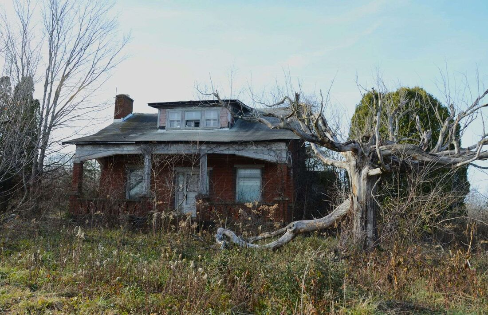
Allgemeine Tipps zu Strukturen
Planung und Entwurf
- Entwerfen und planen Sie sie gründlich, kaufen Sie Materialien im Voraus und behalten Sie Reserven für alles, was Sie während des Events ersetzen müssen (Bolzen, Muttern, Schrauben).
- Fertigen Sie komplizierte Teile zu Hause, setzen Sie sie vor Ort zusammen. Es ist 10-mal schwieriger, Sachen bei Elsewhere zu bauen als in einer Werkstatt zu Hause. Sie sind außerdem meilenweit von einem Baumarkt entfernt, der strikt zu spanischen Zeiten öffnet.
- Bauen Sie die Struktur zu Hause vollständig auf einem Feld auf. Wenn möglich, lassen Sie sie mehrere Tage stehen, um sie zu testen. Den Aufbau Ihrer Struktur wird vor Ort schwieriger sein, sammeln Sie also so viel Übung wie möglich.
- Ihre Struktur muss einfach genug sein, um realistisch vor dem Event gebaut zu werden, nicht während. Hippies sind schon schlecht genug im Bauen, aber betrunkene/high Hippies sind noch schlimmer.
- Lassen Sie einen Bauarbeiter oder Architekten Ihre Struktur überprüfen.
- Holen Sie Feedback von anderen Leuten in den Elsewhere-Gruppen (Discord, WhatsApp) oder vom Barrio Support Team ein.
- Planen Sie Ihr Gelände und Ihre Struktur so, dass Sie Ihren Container als Teil Ihrer Struktur nutzen.
- Ihr Hauptbereich mag ein fantastisches kreatives Werk von Ingenieurskunst und Architektur sein, erwägen Sie jedoch etwas Langweiligeres, aber Praktisches für Ihre Küche. Bedenken Sie, dass die Küche Stürme unbeschadet überstehen muss und außerdem wasserdicht sein muss. Sie können den Container für küchenbezogene Dinge nutzen, aber kochen Sie nicht darin, wegen der Gasansammlung. Sie werden außerdem heiß. Sie können Pavillons für die Küche verwenden, stellen Sie aber sicher, dass sie stabil sind und dass Sie Sturmzubehör für Befestigungen bestellt haben.
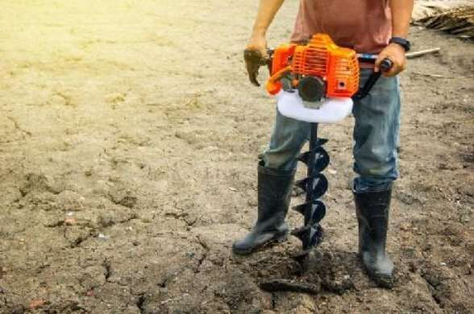
Materialien
- Kaufen Sie hochwertiges Material, das viele Elsewhere-Editionen übersteht! Vermeiden Sie billiges Plastikzeug, das auseinanderfällt, sobald der erste Staubsturm zuschlägt! Investieren Sie in nachhaltiges Material.
- Verwenden Sie Schattennetz, keine Planen. Planen bieten zwar 100 % Schatten, werden bei starkem Wind jedoch zum Segel, was unweigerlich dazu führt, dass die Struktur ruiniert wird. Planen sind im Wind außerdem laut. Landwirtschaftliches Schattennetz oder Tarnnetz bietet guten Schatten und Schutz, ohne Wind einzufangen.
- Ihr Hauptbereich mag ein fantastisches kreatives Werk von Ingenieurskunst und Architektur sein, erwägen Sie jedoch etwas Langweiligeres, aber Praktisches für Ihre Küche. Bedenken Sie, dass die Küche Stürme unbeschadet überstehen muss und außerdem wasserdicht sein muss.
- Versuchen Sie, die Verwendung von stark umweltschädlichem und MOOP-igem Material wie Zip-Beuteln/Kabelbindern und Klebeband zu begrenzen. Wenn Sie welche verwenden müssen, nutzen Sie nur wiederverwendbare Kabelbinder oder experimentieren Sie mit Alternativen (Seile, Kabel, …). Außerdem ist das silbrige Plastikfolienzeug von Rettungsdecken laut, MOOP-ig und reißt schnell!
Ihre Struktur am Boden sichern
Erdbohrer (Augers). Das Barrio Support vermietet die Nutzung von Erdbohrern, um Ihnen bei Ihrer Schattenstruktur oder anderen Löcher-grab-Aktivitäten zu helfen. Sie können dies über das Barrio-Bestellformular buchen.
Bodenbefestigungen. Es gibt viele Lösungen, um Strukturen und Schatten fest am Boden zu befestigen, keine davon umfasst normale Heringe. Erwägen Sie die Verwendung von Candy-Cane-Rebar, Schlüsselschrauben und Ketten oder „Dead-Man’s-Anchors“ (Bodenanker).
Erdungsanforderung
Warnung
Alle Metallstrukturen und Kuppeln müssen geerdet werden – das schließt Ihren Container ein, falls Sie einen haben! Es ist erforderlich, dass diese Erdung von einem örtlichen Elektriker zertifiziert wird. Elsewhere arbeitet mit lokal zertifizierten Elektrikern, wenn Sie also keine spanische rechtsgültige Zertifizierung vorlegen können, können Sie in der Produktion darum bitten, auf die Liste der Strukturen gesetzt zu werden, die sie prüfen. Sie können auch direkt über das Barrio-Bestellformular einen Service bestellen, der beim Einrichten von Erdungsstäben hilft.
Materialien. Bitte bringen Sie einen Leiterstab, eine Erdungsklemme, ein Erdungskabel (10 mm) und eine Klemmverbindung mit, um sie am Metallobjekt anzubringen. Hier sind Links zu den verschiedenen Teilen, die Sie benötigen:
- http://amzn.eu/hsbAoDE
- http://amzn.eu/fDlqTRg
- http://amzn.eu/igIkrn5
- http://amzn.eu/j3Ol5o2
Erdungsstäbe. Der Erdungsstab kann mit einem kleinen Fäustel in den Boden getrieben werden. Sobald er angeschlossen ist, gießen Sie etwa 2 L Wasser um den Stab, um die Leitfähigkeit zu gewährleisten.
- http://amzn.eu/6MKUsW7
Um den Blitzableiter zu entfernen, können Sie eine Gripzange verwenden, um den Stab zu drehen und gleichzeitig nach oben zu ziehen. Sehen Sie sich das folgende Video an, wie man einen Erdungsstab entfernt, und ignorieren Sie jeden anderen Rat! https://youtu.be/ky_2NjaTPX8
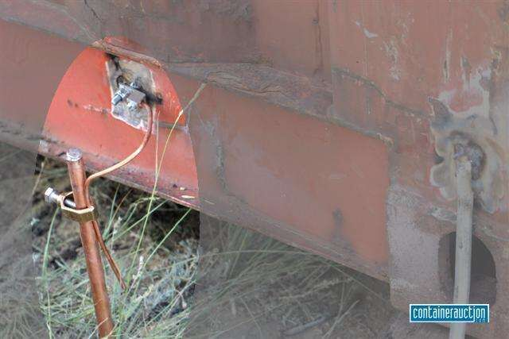
Warnung
Alle Metallstrukturen, einschließlich Container, Portacabins, geodätische Kuppeln, Generatoren, Blitzableiter und jegliches Metallkunstobjekt von derselben Größe wie ein Blitzableiter oder höher, müssen geerdet werden, und die Erdung muss von einem autorisierten Elektriker zertifiziert werden.
Kapitel 8
Generatoren und Strom.
Strom bei Elsewhere gibt es in zwei Arten. Die meisten barrios möchten sich an eines unserer beiden gemeinsamen Stromnetze anschließen — das Red Grid oder das Yellow Grid — die 220V-Strom direkt zu Ihrem Raum liefern und für die meisten Camps die einfachste Option sind. Wenn der Anschluss an ein Netz für Ihren Standort nicht praktikabel ist (wie in der blauen Zone), oder Sie lieber Ihren eigenen Weg gehen, ist Solar für barrios mit bescheidenem Strombedarf einen Gedanken wert, oder Sie betreiben Ihren eigenen Generator.
Anschluss an das Red oder Yellow Grid
TLDR — die Schritte:
- Schätzen Sie Ihren Strombedarf.
- Kontaktieren Sie power@nobodies.team mit Ihrem barrio-Namen, den Kontaktdaten des Power- oder Technik-Leads Ihres barrios und Ihren Stromanforderungen.
- Nach der barrio-Platzierung werden Sie Ihrem nächstgelegenen Netz zugewiesen und Ihre Kontaktdaten an den Koordinator dieses Netzes weitergegeben.
- Der Netzmanager kontaktiert Sie, um Ihre Platzierung am Netz zu bestätigen, zu prüfen, ob Ihre Stromanforderungen korrekt sind, und Ihnen zu sagen, wie weit Sie von Ihrem Verteilerkasten entfernt sein werden.
- Sie müssen sicherstellen, dass Sie ein ausreichend langes Kabel haben, um von diesem Verteilerkasten zum Standort innerhalb Ihres Camps zu reichen, an dem Sie den Strom aufteilen möchten. Dies MUSS mit einem einzigen Kabel erfolgen. Sie DÜRFEN KEINE Verbinder vergraben. Dieser Standort muss wasserdicht sein.
- Vor Ort wird Ihnen gezeigt, wo Sie sich einstecken, Sie graben einen Graben zu Ihrem Camp, um das Kabel zu vergraben.
Die beiden gemeinsamen Netze decken verschiedene Teile des Events ab. Jedes läuft mit 220V und verwendet CEE-3-polige (blaue Rundstecker-)Verbinder — der wasserdichte Standard-Außenverbinder, den Sie von europäischen Campingplätzen und Festivals kennen.
Um Ihr barrio anzuschließen, müssen Sie den Netz-Lead Ihres Bereichs kontaktieren. Sie bestätigen, ob Sie in ihrer Zone sind, und richten Ihnen einen Anschlusspunkt ein. Diese Netze werden von barrios als gemeinschaftliche Anstrengung betrieben, daher wird von teilnehmenden barrios auch erwartet, mitzuhelfen.
Fragen zum Strom?
- Red Grid: Jüstin [E-Mail folgt]
- Yellow Grid: Javier [E-Mail folgt]
- Allgemeine Stromfragen: power@nobodies.team
Was Sie zum Anschließen benötigen
Um sich an das Netz anzuschließen, benötigen Sie ein CEE-3-poliges Kabel — das blaue Rundstecker-Außenkabel (BS4343 / CEE17). Die Standardgröße von 16A führt bis zu 3.840W, was für die meisten Camps ausreicht. Wenn Sie etwas betreiben, das mehr verbraucht, sprechen Sie mit Ihrem Netz-Kontakt über Optionen mit höherer Stromstärke.
Stellen Sie sicher, dass Ihr Kabel lang genug ist, um vom nächstgelegenen Verteilerkasten des Netzes bis zu der Stelle innerhalb des Camps zu reichen, an der Sie Ihren eigenen Verteilerpunkt haben möchten — nicht nur bis zum Rand Ihres Barrios. Ihr Netz-Kontakt bestätigt den Standort des Verteilerkastens, sobald die Platzierung abgeschlossen ist, es lohnt sich also, vor dem Kabelkauf mit ihnen Rücksprache zu halten. Wir empfehlen die Verwendung von H07-Gummikabel, 3-adrig mit 2,5 mm² Querschnitt.
Wenn der Kabelweg oder Verbindungen der Witterung ausgesetzt sind, statt durch eine Struktur geschützt zu sein, stellen Sie sicher, dass alles ordnungsgemäß wettergeschützt ist. CEE-Verbinder sind für den Außeneinsatz ausgelegt, aber nicht alle sind gleich. Stellen Sie sicher, dass Ihre Stecker IP67-zertifiziert sind – IP44 erfüllt meist seinen Zweck, aber wir empfehlen angesichts der harschen Wüstenumgebung dringend die Verwendung von IP67. Aber lassen Sie in jedem Fall keine Verbindungen oder Adapter in einer Pfütze liegen!
Vom Anschlusspunkt aus empfehlen wir, einen CEE-Backbone um Ihr barrio zu verlegen — einen Ring oder eine Achse aus außentauglichem CEE-Kabel mit Abzweigkästen für einzelne Geräte. Das hält die Dinge ordentlich, sicher und vermeidet die Kabel-Spaghetti-Stolperfalle, die jedem den Abend verdirbt.
Wenn Sie eine Referenz für die Planung Ihres internen Verkabelungslayouts benötigen, hat das Burning-Man-ePlaya-Forum viel nützliches Material: https://eplaya.burningman.org/viewforum.php?f=278
Ihren Strombedarf ermitteln
Egal, ob Sie sich an das Netz anschließen oder Ihr barrio eigenständig mit Strom versorgen, Sie müssen wissen, wie viel Strom Ihr Camp verbrauchen wird.
Addieren Sie die Wattzahl von allem, was Sie gleichzeitig betreiben wollen. Ein paar Hinweise:
- Soundsysteme, Verstärker und andere Geräte: prüfen Sie die Watt-Eingangsleistung auf der Rückseite oder Unterseite. Verwenden Sie bei Verstärkern, die Lautsprecher antreiben, die Eingangsleistung des Verstärkers, nicht die des Lautsprechers.
- Eine Gefriertruhe zieht typischerweise etwa 500W.
- LED-Beleuchtung ist stromsparend. Vermeiden Sie Glüh- oder Halogenlampen.
- Elektrische Wasserkocher und Kaffeemaschinen sind stromhungrig — verwenden Sie stattdessen Gas, um Wasser zu kochen. Als allgemeine Faustregel: vermeiden Sie alles, was elektrisch Wärme erzeugt: Toaster, Haartrockner, Elektroheizungen und dergleichen sind alle enorme Stromfresser.
- Handy-Ladegeräte und kleine Transformatoren: vernachlässigbar, zählen Sie sie nicht mit.
- Eine praktische Referenz für Gerätestromverbrauch: https://www.daftlogic.com/information-appliance-power-consumption.htm
Profi-Tipp
Eine Falle, die zu vermeiden ist: betreiben Sie nicht ein großes Soundsystem „bei geringer Lautstärke“ und gehen davon aus, dass alles in Ordnung ist. Spitzen und Stöße beim Einschalten (oder wenn jemand ein Kabel herausreißt) können Ihren Anschluss auslösen, selbst wenn der durchschnittliche Verbrauch in Ordnung scheint. Dimensionieren Sie für Spitzenwerte, nicht für den Durchschnitt.
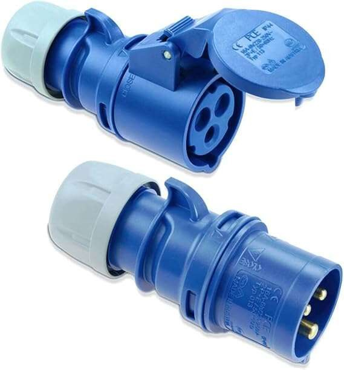
Radikale Eigenverantwortung mit Solar
Schließen Sie sich nicht an ein Netz an? Respekt. Ob es für Ihren Standort unpraktisch ist oder Sie einfach Ihr eigenes Ding machen wollen, es gibt gute Optionen.
Solar — ernsthaft, erwägen Sie es. Elsewhere ist heiß, trocken und sehr sonnig. Solar funktioniert hier hervorragend, und für viele barrios ist es wirklich die beste Option — leiser, sauberer und oft günstiger als der Betrieb eines Generators.
Wenn Ihr Strombedarf bescheiden ist, ist Solar mit ziemlicher Sicherheit die richtige Wahl. LED-Beleuchtung, Handy-Laden, kleine Lautsprecher, Laptops — all das läuft problemlos mit ein paar Modulen und einem Akkupack, ohne jemals einen Wechselrichter zu benötigen. 12V-DC-Geräte (Lampen, USB-Ladegeräte, Ventilatoren) sind auf diese Weise besonders effizient, und der Verzicht auf einen Wechselrichter hält Ihr System einfach und Ihre Verluste gering. Es ist außerdem gut zu wissen, dass es von vielen gängigen Geräten DC-Versionen gibt — einschließlich Camping-Kühlschränken — und diese ziehen tendenziell deutlich weniger Strom als ihre Netzstrom-Äquivalente. Wenn sie zum Bedarf Ihres barrios passen, sind sie eine großartige Wahl.
Für größere Systeme — den Betrieb eines größeren Kühlschranks, eines ernsthaften Sound-Setups oder einer Gefriertruhe — ist Solar weiterhin eine Option, es erfordert nur mehr Module, einen größeren Akkupack und einen Wechselrichter. Es ist eine größere Anfangsinvestition, aber mit einer Woche starker Sonne haben Sie reichlich, mit dem Sie arbeiten können. Wenn Sie diesen Weg gehen, dimensionieren Sie Ihren Akkupack großzügig, damit Ihnen nach Einbruch der Dunkelheit nicht der Strom ausgeht.
Module müssen nicht teuer sein. Der Gebrauchtmarkt für Solar ist derzeit riesig, und gebrauchte Module in einwandfreiem Zustand sind für sehr wenig zu haben — prüfen Sie lokale Kleinanzeigen, Solarparks, die ihre Anlagen erneuern, oder Räumungsverkäufe von Solarinstallateuren. Schon ein einziges gebrauchtes 200W-Modul und eine Versorgungsbatterie erledigen eine Menge.
Das Argument für den Kauf: wenn Sie das restliche Jahr eine Verwendung für die Module finden — zu Hause, vermietet oder für andere Projekte — amortisieren sie sich schnell. Das Argument dagegen: wenn sie fünfzig Wochen lang in einem Container liegen, überlegen Sie es sich zweimal.
Das ePlaya-Forum hat eine Fülle praktischer Hinweise zu 12V-Solar-Setups für genau diese Art von Event: https://eplaya.burningman.org/viewforum.php?f=278
Ihren eigenen Generator betreiben
Generatoren sind sinnvoll für größeren Strombedarf oder wenn Solar für Ihr Setup nicht praktikabel ist. Wenn Ihr Barrio ernsthafte Wattzahlen benötigt und nicht die Komplexität eines großen Solarsystems möchte, ist ein Generator die unkomplizierte Antwort.
Ein kleiner Koffer-Generator (wie ein Honda 2200W) kann typischerweise ein Camp mit einer Gefriertruhe und einem angemessenen Soundsystem betreiben. Wählen Sie das niedrigst bemessene Gerät, das Ihren Bedarf deckt, und planen Sie ein bisschen Puffer für Fehler ein. Schalten Sie ihn über Nacht aus — Ihre Gefriertruhe übersteht ein paar Stunden.
Billige Generatoren sind sehr laut. Wenn Ihrer kein leises Wechselrichter-Modell ist, müssen Sie ein Schalldämmungsgehäuse darum bauen. Ihre Nachbarn werden es Ihnen danken. Sie müssen außerdem sicherstellen, dass Auspuffrohre nicht direkt in den Campplatz Ihrer Nachbarn zeigen.
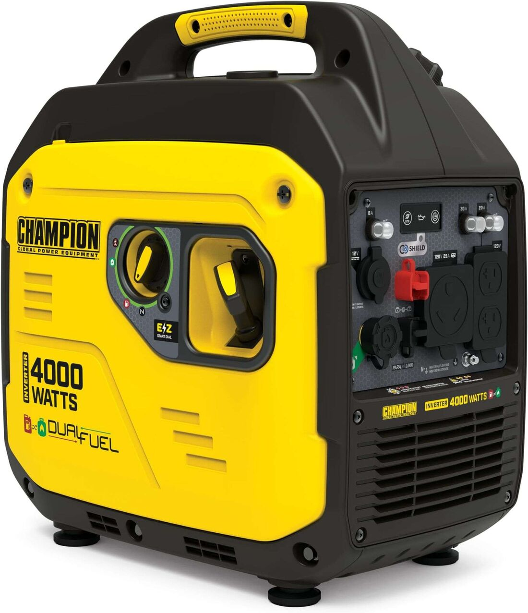
Generator-Platzierung und -Sicherheit
Warnung — nicht verhandelbare Regeln
Beachten Sie diese Regeln — sie sind nicht verhandelbar:
- Generatoren müssen mindestens 15 m von jedem Campingbereich und mindestens 20 m von jeglicher Vegetation entfernt aufgestellt werden.
- Generatoren müssen innerhalb Ihres zugewiesenen Barrio-Raums bleiben.
- Treibstoff muss mindestens 15 m vom Generator entfernt gelagert werden, in einem luftdichten Behälter, an einem schattigen und gut belüfteten Ort, fern von allem Brennbaren.
- Jeder Generator muss mindestens einen CO²-Löscher in der Nähe haben. Halten Sie auch einen ABC-Löscher in der Nähe Ihres Treibstoffs. Löscher müssen ein Schild haben, das ihren Standort markiert, und müssen innerhalb der letzten 12 Monate zertifiziert worden sein.
- Generatoren müssen einen geerdeten Erdungsstab angeschlossen haben (siehe Erdung, oben).
- Stellen Sie sicher, dass Generator und Treibstoff nicht versehentlich von Teilnehmenden zugänglich sind — bringen Sie angemessene Absperrungen an.
- Generatoren sind in ruhigen Bereichen (blaue Zone) nicht erlaubt.
Drehstromgeneratoren: Wenn Ihr Generator 400–415V ausgeben kann (selbst wenn Sie diesen Ausgang nicht nutzen), muss der Erdungsstab vor dem Event von unserem zugelassenen Elektriker inspiziert werden. Wird dies nicht im Voraus angegeben, könnte das einen Genehmigungsverstoß zur Folge haben. Wenn dies auf Sie zutrifft, kontaktieren Sie power@nobodies.team rechtzeitig.
Zurück zum InhaltKapitel 9
Soundsysteme.
Anforderungen an Soundsysteme
Es genügt zu sagen, dass Soundsysteme bei Elsewhere immer Probleme verursachen. Sie sind gerichtet, das heißt, es ist sehr wichtig, wohin die Lautsprecher zeigen. Unweigerlich besteht die Wahl darin, sie auf das Zentrum von Elsewhere zu richten oder in die entgegengesetzte Richtung in die Wildnis hinaus. Die Wildnis ist die deutlich bevorzugte Option, um mit Schallpegeln umzugehen.
Das City-Planning-Team bei Elsewhere ist für die Platzierung der Barrios verantwortlich und bekommt daher die Schuld, wenn Campende durch laute Musik die ganze Nacht wachgehalten werden. Bitte seien Sie freundlich zu den Freiwilligen bei City Planning und befolgen Sie diese wichtigen Regeln:
Die Regeln
- Lautsprecher müssen von der Mitte der Playa weg und/oder in Richtung der Umfangsstraße zeigen.
- Red-Zone-Barrios müssen sich verpflichten, ein Dezibel-Messgerät zu kaufen. Das Dezibel-Messgerät wird mit der NCA kalibriert und markiert die Grenze klar, um jedem Barrio anzuzeigen, wann es die Grenzen überschreitet.
- Während aller Stunden, in denen Sound in voller Lautstärke gespielt werden darf, muss das Camp die 96-dB-Grenze einhalten, mit dem Mikrofon am Eingang des Tanzbereichs.
- Respektieren Sie die Nomads — sie überwachen die Schallpegel und können gegen einen DJ oder ein Barrio vorgehen, das die Schallgrenzen nicht respektiert.
Zusätzlich gibt es am Sonntag einen Soundcheck, um sicherzustellen, dass alles richtig eingerichtet ist und die Lautsprecher in die richtige Richtung zeigen.
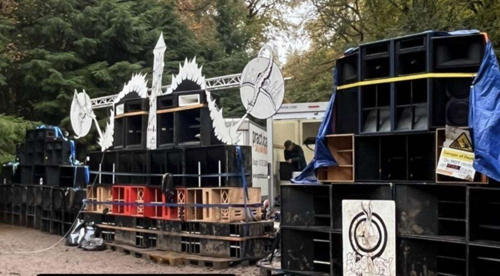
Tipps zu Sound- und A/V-Ausrüstung bei Elsewhere:
- Es ist heiß: lassen Sie Geräte nicht in voller Sonne liegen, während sie eingeschaltet sind — halten Sie sie immer im Schatten.
- Ausrüstung wird schmutzig :(
- Halten Sie einen Transporter vor Ort bereit, in dem Sie teure Ausrüstung verstecken/einschließen oder trocken halten können, wenn es regnet.
- Legen Sie Ihren Schlafbereich so an, dass die Zelte der Leute nicht im Weg des Sounds liegen.
Dezibel-Messgeräte
Alle Barrios der roten Sound-Zone müssen ein Dezibel-Messgerät haben. Das Dezibel-Messgerät wird mit der NCA kalibriert und markiert die Grenze klar, um jedem Barrio anzuzeigen, wann es die Grenzen überschreitet.
Installieren Sie ein Dezibel-Messgerät mit einer großen Anzeige (die Ziffern der Anzeige sollten mindestens 7 cm hoch oder höher sein), das konstanten Schall misst, an einer für den DJ sichtbaren Stelle (über der Menge).
Wenn das DB-Messgerät während des NCA-Soundchecks vor dem Event nicht gut kalibriert ist, bringen wir über dem Messgerät ein Schild mit der kalibrierten Differenz an (nur wenn die Differenz 2 dB oder mehr beträgt). So kennt jeder den Spielraum des Messgeräts.
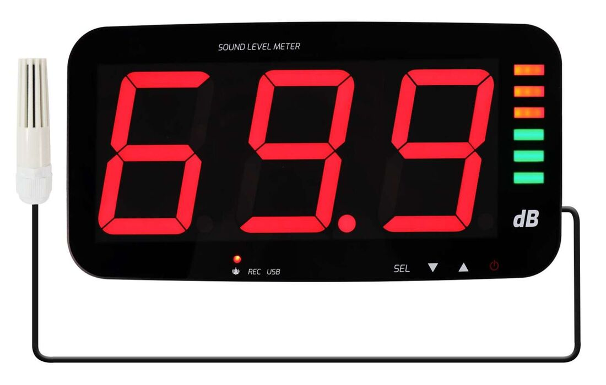
Die Schallausbreitung reduzieren
Schall breitet sich bei Nowhere sehr leicht durch den Boden aus. Sie sollten Ihre Lautsprecher auf etwas stellen, idealerweise mindestens 50 cm über dem Boden. Die meisten Lautsprecher können auf Stative gestellt werden. Größere Bass- oder Sub-Lautsprecher können auf ein Gerüst oder einen stabilen Tisch gestellt werden.
Lautsprecher sollten vom Gelände weg zeigen und so angewinkelt werden, dass der Schall nicht von nahen Hügeln zurückgeworfen wird.
Wenn Sie einen großen Transporter oder Lkw haben, stellen Sie ihn zwischen Ihr Soundsystem und das Gelände, um den Lärm zu blockieren. Versuchen Sie, schwere Vorhänge hinter Ihren Lautsprechern aufzuhängen – Vorhänge um Ihren Partyraum lassen es drinnen lauter und draußen leiser klingen, also eine Win-win-Situation!
Egal, wie oft Sie sie bitten, DJs mischen den nächsten Track am Ende immer ein kleines bisschen lauter als den letzten, und Ihre Lautstärke kriecht im Laufe der Zeit nach oben. Wenn Sie also eine PA über 1k haben oder einen Bass-Lautsprecher betreiben, sollten Sie einen Limiter in Ihrem System haben. Wenn Sie Bass-Lautsprecher verwenden, kann es nützlich sein, einen separaten Limiter dafür zu haben.
Wenn Sie einen basslastigen Sound haben, können Sie einen grafischen Equalizer verwenden, um zu steuern, wie weit Ihr Bass reicht, ohne Ihre Gesamtlautstärke zu reduzieren. Je mehr EQ-Kanäle Sie haben, desto mehr können Sie Ihren Bass tweaken, um die Reichweite zu reduzieren, ohne Ihren Gesamtsound zu beeinträchtigen. Manche grafischen EQs haben auch einen Low-Cut-Filter, mit dem Sie die allertiefsten Frequenzen komplett herausschneiden können, die Sie nahe an den Lautsprechern nicht hören, die aber weit über das Gelände tragen. Die einfachste und günstigste Option, die wir bisher gefunden haben, um Limiter, grafischen EQ und Low-Cut-Filter in einem Gerät zu bieten, ist der Behringer DEQ1024. Lassen Sie uns wissen, wenn Sie etwas Besseres finden.
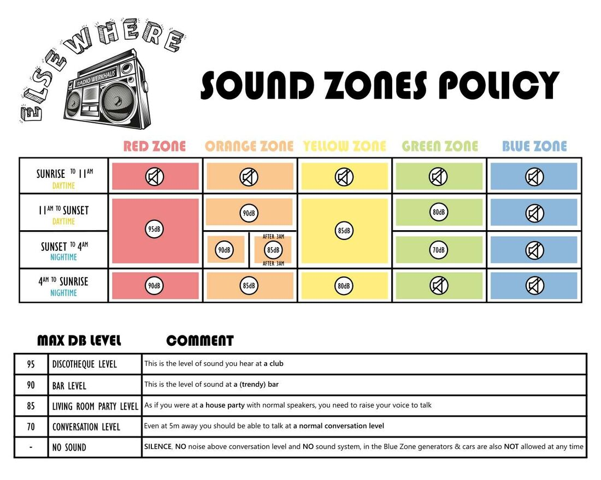
Sound-Zonen bei Elsewhere
Wenn Sie Ihr Barrio bei Elsewhere anmelden, werden Sie gefragt, in welche Zone Ihr Barrio platziert werden soll. Siehe die Tabelle unten für eine Beschreibung der Zonen und der Geräusche, die in diesen Zonen toleriert werden können.
Die goldenen Regeln für DJs bei Elsewhere*
*nicht ernst zu nehmen.
- Wenn jemand unbedingt DJ-en will, lassen Sie ihn unter keinen Umständen.
- Wenn niemand zu Ihrer Musik tanzt, wechseln Sie die Musik oder besser den DJ.
- Es werden immer mindestens fünf Hippies tanzen. Das liegt nicht daran, dass Ihre Musik gut ist, sondern einfach daran, dass sie umfallen würden, wenn sie aufhörten zu tanzen.
- (bezogen auf 3) Es ist okay, die Musik auszuschalten und ins Bett zu gehen!
- Wenn niemand tanzt, die Musik laut aufzudrehen FUNKTIONIERT NICHT! (siehe 2, 4).
Kapitel 10
Feuer und Gas.
Ziemlich enttäuschend für ein „Burn“-Event: bei Elsewhere dürfen keine Feststoffe verbrannt werden. Das liegt einfach daran, dass das umliegende Land knochentrockenes Buschland ist, sodass alles mit umherfliegenden Glutpartikeln ganz Spanien in Brand setzen könnte. Kein Verbrennen von Holz, Holzkohle, Gras, Menschenopfern usw.
Sie können Grills und Gasflammenöfen haben. Sie können auch Flammeneffekte an Kunstobjekten haben. Die Vorschriften für die Verwendung von Flammen in Kunst oder anderweitig stehen nicht hier, sondern werden unter Kunst behandelt.
Es gibt üblicherweise eine Feuershow für Leute, die brennende Poi schwingen wollen. Wir haben jetzt auch einen Feuer-„Lead“ für den Barrio-Bereich, er kann unter art@nobodies.team kontaktiert werden.
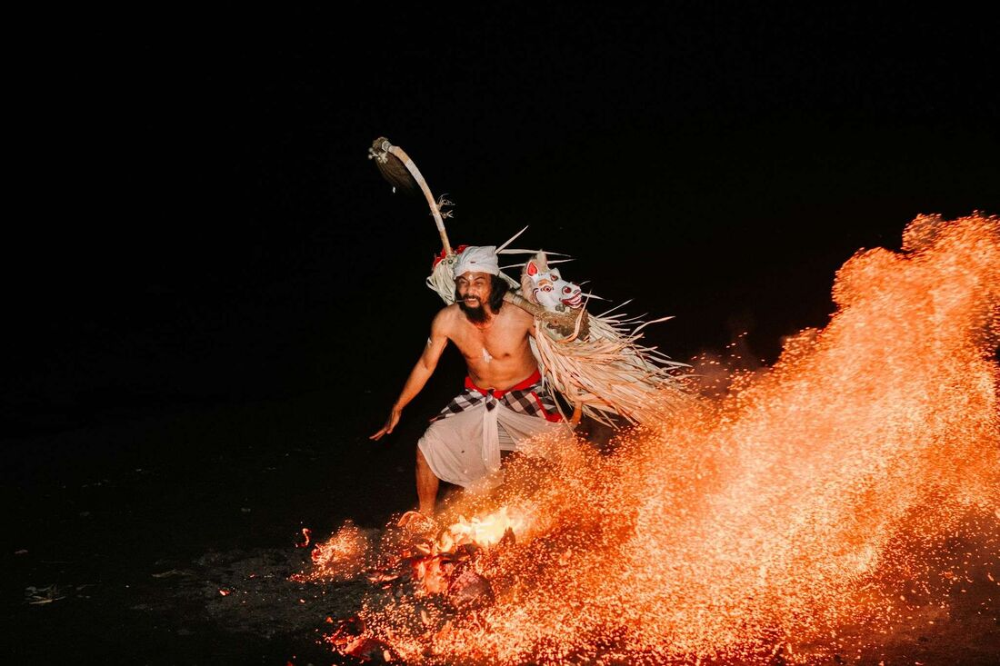
Feuerlöscher und Schilder, die zu ihnen weisen
Es ist Teil der Genehmigung, dass jedes barrio einen 6-kg-ABC-Pulverlöscher und einen 2-kg-CO2-Löscher für einen Generator oder ein anderes Gerät haben muss, das durch Pulver beschädigt werden könnte.
In der Vergangenheit kam ein lokaler Feuerlöscher-Vertreter, um Feuerlöscher zu inspizieren, neu zu zertifizieren und neue zu verkaufen. Wir haben festgestellt, dass dieser Prozess recht umständlich und schwer zu administrieren ist, daher sind wir dazu übergegangen, dass Barrios ihre Feuerlöscher stattdessen mieten. Sie zahlen also im Voraus und können ihn beim Check-in abholen.
Wenn Sie es bevorzugen, Ihren Löscher wie früher vom Feuer-Mann inspizieren und zertifizieren zu lassen, ist er am Samstagabend um 18 Uhr vor dem Event vor Ort, Sie müssen ihn jedoch direkt mit Bargeld bezahlen.
Sie können ein lumineszierendes Feuerlöscherschild über das Barrio-Bestellformular kaufen, was ebenfalls vorgeschrieben ist.
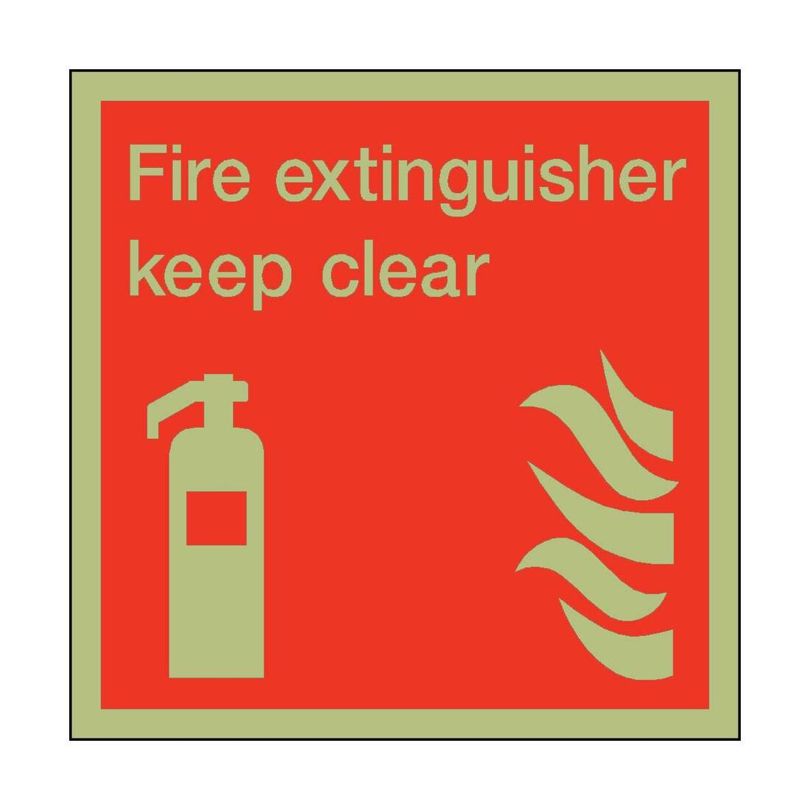
Warnung — Löscher-Regeln
- Jedes Barrio muss mindestens einen 6-kg-ABC-Pulverlöscher haben. Nehmen Sie sie nicht von den Straßen oder anderswo, kaufen Sie einen, der den Vorschriften entspricht!
- Jedes Barrio muss Löscher rund um den Küchenbereich (Typ ABC-Pulver) und neben seinen Generatoren (CO2) platziert haben.
- Jeder Feuerlöscher muss ein lumineszierendes Schild haben, um seine Anwesenheit anzuzeigen.
Wir führen am Samstagnachmittag eine Feuerlöscher-Inspektion durch, bei der Sie Ihre zuvor gekauften Löscher abholen oder eine offizielle Überprüfung der letztes Jahr gekauften erhalten können.
Butan- und Propangas in Spanien
Butan wird in Spanien generell mehr verwendet als Propan. Beachten Sie, dass Propan in Spanien (über einen spanischen Regler) niedrigeren Druck hat als in anderen Ländern. (z. B. Butan/Propan 28/30 mbar im Vergleich zum UK mit 28/37 mbar). Ihr Pizzaofen funktioniert möglicherweise nicht so gut, es sei denn, Sie investieren in einen speziellen Regler.
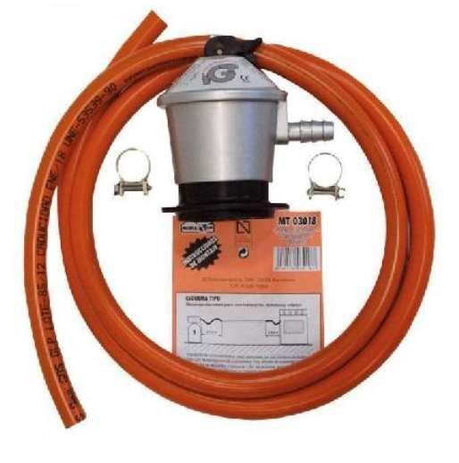
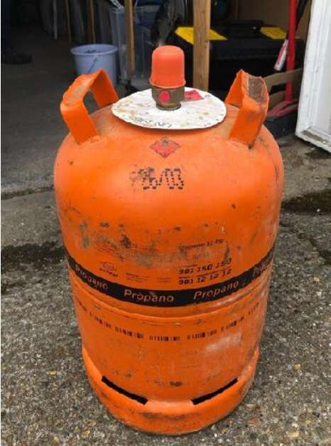
Die Flaschen für beide sind sehr ähnlich, der einzige Unterschied ist, dass auf Propan „Propano“ in einem schwarzen Band um die Flasche geschrieben steht. Butan wird in Spanien häufiger verwendet. Der Anschluss ist für Propan und Butan gleich, und sie verwenden denselben Regler.
Wie man eine Gasflasche bekommt
Das Barrio Support verkauft jetzt Propan- und Butanflaschen, die vor Ort geliefert werden. Der Preis enthält ein Pfand, das Barrios zurückerhalten, nachdem sie die Leerflaschen zurückgegeben haben. Flaschen können bei Ihrer Ankunft an der Barrio Reception abgeholt werden. Wir empfehlen Barrios dringend, diesen Service zu nutzen, es sei denn, Sie möchten Flaschen mitnehmen. Beachten Sie, dass sie nicht gelagert werden können!
Andernfalls können Flaschen an Tankstellen gekauft werden, allerdings gibt es Bürokratie, die schwierig wird, wenn Sie nicht in Spanien leben. Regler können an den meisten Orten gekauft werden, einschließlich der Ferreteria in Sariñena, auch im Brico Depot in Zaragoza. Oder online vor dem Event.
Warnung — Gaslagerungsregeln
- Alle Benzintanks und Gasflaschen müssen ausreichend vor der Sonne geschützt und von allen Wärmequellen entfernt sein.
- Alle Benzintanks und Gasflaschen müssen das CE-Zeichen haben und für diese Verwendung geeignet sein.
- Alle Gummikomponenten (Schläuche, Verbindungen) müssen in gutem Zustand sein, weit entfernt von Wärmequellen (Sonne, Küche) und vor versehentlicher und unsachgemäßer Handhabung geschützt. Ein kompetenter Techniker innerhalb der Elsewhere-Organisation führt eine tägliche Prüfung aller Feuerinstallationen und Anschlüsse durch und unterschreibt ein Formular mit aktualisierten Angaben, das im Bedarfsfall verfügbar ist.
- Benzin muss mindestens 15 m vom Generator entfernt gelagert und vor der Sonne und jeder anderen Wärmequelle geschützt werden. Darüber hinaus müssen große Tanks eingezäunt werden, um versehentliche oder unsachgemäße Handhabung zu vermeiden.
Inspektion von Installationen
Ihre Gasinstallation, ob zum Kochen oder für Kunst, wird inspiziert. Beliebte Gründe für ein Nichtbestehen sind:
- Falscher Regler (oder keiner)
- Zum Kochen/Butan muss dieser 28 mbar für Butan und 30 mbar für Propan betragen.
- In Spanien wird überwiegend Butan verkauft. Um die Sache noch verwirrender zu machen: Propan- und Butanregler sind in Spanien gleich.
- Ihr Grill aus einem anderen Land erfordert möglicherweise einen anderen Druck.
- Alte Schläuche
- Die orangefarbenen Gasschläuche haben alle Datumsangaben; sie dürfen nicht älter als fünf Jahre sein und müssen ISO 10619-1:2017 entsprechen.
- Nicht-Propan-Schläuche, z. B. ein Stück alter Gartenschlauch, werden abgelehnt.
- Die Barrio Reception hat einige Crimp-Werkzeuge und Ersatzschlauch, aber versuchen Sie bitte, dies vor der Ankunft bei Elsewhere zu regeln.
Schlauchschellen (oder Schneckengewindeschellen) können für Niederdruckgas zur Verwendung in Kochern verwendet werden, aber nicht für Flammeneffekte, wo O-Ringe verwendet werden müssen. Ziehen Sie Schlauchschellen nicht zu fest an.
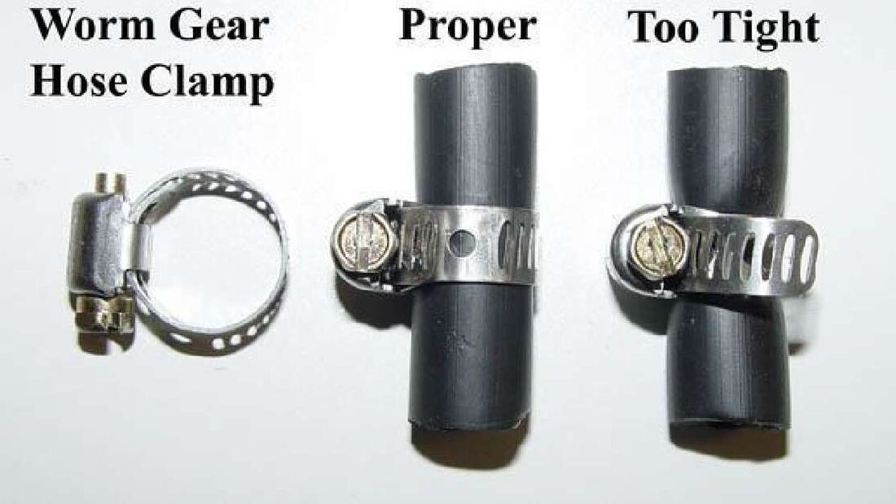
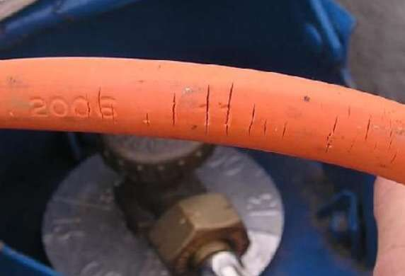
Umgang mit Gasflaschen
Es ist sehr schwierig, eine Flasche zu durchstechen. Die Gefahr liegt darin, dass entweichendes Gas sich in einem geschlossenen und unbelüfteten Raum ansammelt, besonders wenn eine Zündquelle in der Nähe ist.
Alle Gasflaschen haben Überdruckventile, die so konstruiert sind, dass sie sich öffnen und Gas ablassen, wenn der Druck zu groß wird. Der Druck kann in einer Flasche aufgrund von Temperaturschwankungen steigen, besonders wenn sie durch Liegenlassen in der Sonne oder in einem Auto/Transporter mit geschlossenen Fenstern heiß werden. Wie Sie sich vorstellen können, ist dies in der spanischen Wüste ein wahrscheinliches Ereignis! Daher sprechen alle Lagerungsanweisungen von gut belüfteten Räumen, idealerweise im Freien.
Warnung — Flaschen transportieren
- Halten Sie eine Flasche immer aufrecht: legen Sie eine Flasche niemals hin. Wenn Sie sie in einem Auto transportieren, stellen Sie die Flasche aufrecht auf den Rücksitz, nicht hinter den Fahrer, und legen Sie den Sicherheitsgurt um die Flasche, um zu verhindern, dass sie nach vorne rutscht. Wenn sie liegt und das Überdruckventil sich öffnen muss, stößt es Flüssigkeit statt Gas aus!
- Transportieren Sie Flaschen nicht hinten in einem geschlossenen Transporter: halten Sie immer einige Fenster offen. Transportieren Sie Flaschen lieber in einem Anhänger als in einem Transporter, wenn Sie die Möglichkeit haben.
- Sichern Sie Flaschen beim Transport immer, damit sie nicht herumrollen.
- Und natürlich – RAUCHEN SIE NICHT, während Sie mit einer Flasche in Ihrem Fahrzeug fahren! https://youtu.be/1uuvsdfWQB8
Sehen Sie sich dieses Video an, um zu sehen, was passiert, wenn Sie Gasflaschen lose hinten in einem Pickup transportieren! https://youtu.be/p7RNYw11XHM
Gasflaschen leeren
Nur Flaschen, die Ihnen zu Beginn des Events verkauft wurden, können zur Abholung an der Barrio Reception abgegeben werden! Sie müssen nicht geleert werden. Flaschen dürfen nicht in Containern gelagert werden!!
Es ist ratsam, Flaschen vor dem Transport zu leeren:
- Brennen Sie überschüssiges Gas mit dem Gerät ab, für das es bestimmt ist — z. B. Grill, Gasringe.
- Bringen Sie immer einen Hinweis an, der die Leute warnt, dass ein Ring an und heiß ist (es ist tagsüber möglicherweise nicht leicht, eine Flamme zu sehen), sagen Sie ihnen, dass sie ihn nicht ausschalten sollen und dass das Abbrennen von überschüssigem Gas im Gange ist.
- Lassen Sie Gas nicht einfach aus der Flasche entweichen. Es entsteht nicht nur eine Brandgefahr, sondern die schnelle Druckentlastung lässt die Flüssigkeit in der Flasche gefrieren und Sie glauben fälschlicherweise, dass das gesamte Gas heraus ist.
- Sie schaffen kein CO2-Fußabdruck-Problem, indem Sie das Gas verbrennen, im Vergleich zum unverbrannten Ablassen in die Atmosphäre! Es ist dieselbe Menge Kohlenstoff. In unverbrannter Gasform kann es nicht von Pflanzen abgebaut werden.
- Trennen Sie nach dem Leeren immer das Gerät und den Regler ab.
- Wenn es ein Ventil gibt, schließen Sie es. (Nicht alle Flaschen haben Ventile: das hängt vom Typ des Anschlusses ab). Wird es offen gelassen, besteht die Möglichkeit, dass Luft in die Flasche eindringt und sich mit dem Gas vermischt, was eine explosive Mischung bildet.
Kapitel 11
Leave No Trace.
Im Elsewhere Survival Guide gibt es jede Menge Ratschläge zu Leave No Trace, die hier nicht wiederholt werden. LNT ist jedoch eines der Prinzipien, das Organisation verlangt, und alle müssen über das Thema informiert sein. Die hier behandelten Leave-No-Trace-Punkte beziehen sich eher auf das Barrio-Management als auf Einzelpersonen.
Der LNT-Lead Ihres Barrios
Jedes Barrio muss einen Leave-No-Trace-Lead (LNT) ernennen. Das Elsewhere-LNT-Team nimmt mit Ihrem Camp Kontakt auf, um mit dieser Person Kontaktdaten auszutauschen und ihr mehr Informationen zu geben. Elsewhere LNT lädt alle Barrios vor dem Event zu einem Informationstreffen ein, bei dem wir Tipps und Tricks teilen, wie man LNT in seinem Barrio umsetzt.
Die Aufgaben des LNT-Leads sind…
…Während des Events:
- Schulen Sie Ihre Campmitglieder. Alle sollten das Recyclingsystem in Spanien kennen, wo die Tonnen sind, was wohin gehört, wo man Müll hinbringt usw.
- Richten Sie Abfallmanagement und Recycling im Barrio ein, besonders im Küchen- und Barbereich.
- Organisieren Sie einen Plan, um den Müll täglich zur W&R-Zone zu bringen und täglich einen MOOP Sweep durchzuführen.
…Vor und nach dem Event:
- Haben Sie einen Plan, wie Sie alles vom Gelände bekommen. Lassen Sie keine Heringe, Holzstücke oder Möbel auf dem Gelände zurück in der Annahme, jemand anderes kümmere sich darum.
- Organisieren Sie nach dem Event einen MOOP Sweep.
Beachten Sie, dass die Rolle des LNT-Leads in jedem Barrio darin besteht, sicherzustellen, dass diese Dinge geschehen, nicht sie persönlich zu erledigen! Diese Aufgaben eignen sich ideal für Sparkle-Pony-Campmitglieder, die nicht viel auf andere sinnvolle Weise beigetragen haben…
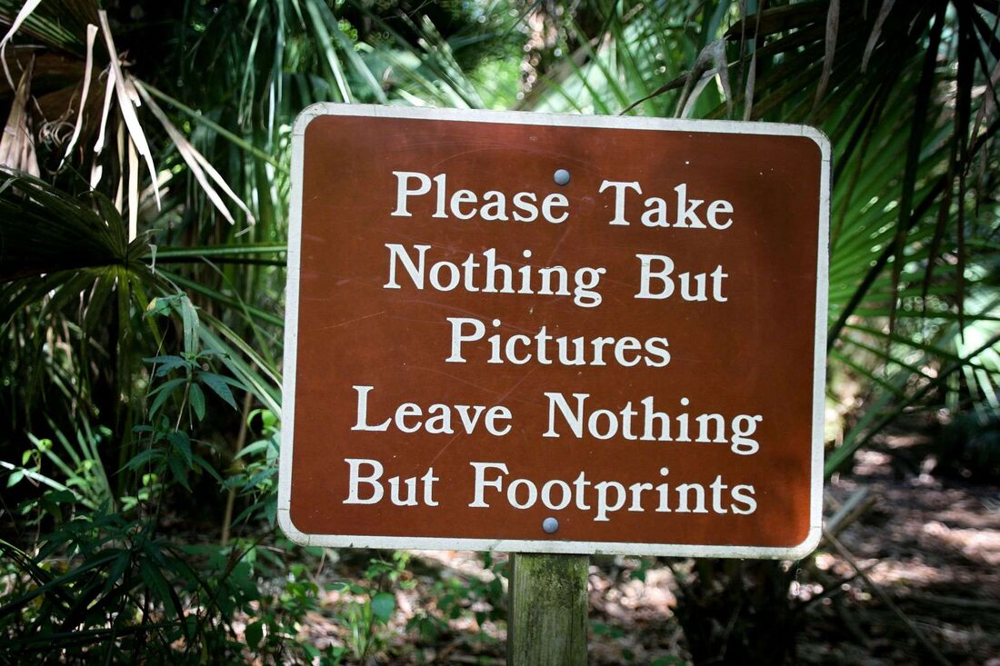
Einen LNT-Plan erstellen
Barrio-Einrichtung für Müll und Recycling. Stellen Sie vorab sicher, dass Sie eine ausreichende Anzahl an Tonnen mit Deckel haben, um das Recyclingsystem zu bedienen, das macht Ihnen das Leben vor Ort leichter. Sie sollten sicherstellen, dass Sie den Müll im Barrio so gut wie möglich sortieren, da Sie ihn in der W&R-Zone neu sortieren müssen, wenn er schlecht sortiert ist (was nervig ist!).
Jedes Barrio sollte separate Tonnen entsprechend dem Recyclingsystem in Spanien haben:
- Allgemeiner Restmüll
- Verpackung aus Plastik / Tetra-Kartons
- Kartons, Papier
- Glas
- Kompost
- Dosen (separat aufbewahrt zum Zerdrücken)
Tipps zur Einrichtung der Müllsammlung:
- Sammeln Sie recycelbaren Abfall in wiederverwendbaren Tonnen. Plastiktüten dürfen nur für Restmüll und Verpackung verwendet werden. Keinerlei Plastik ist im Papiercontainer, im Glascontainer oder in den Kompostgruben erlaubt. Wenn Sie mit Papier in einer Plastiktüte in der W&R-Zone ankommen, müssen Sie die Tüte öffnen, bevor Sie das Papier ausleeren.
- Sammeln Sie Dosen in separaten Tonnen. Dosen müssen vor dem Recycling zerdrückt werden. Es ist ziemlich eklig, nicht zerdrückte Dosen aus schmutzigen Plastiktüten zu nehmen, um sie zu zerdrücken.
- Versuchen Sie, durchsichtige Plastiktüten für Plastikabfall zu bekommen. Zu sehen, wie hervorragend Sie den Plastikabfall sortiert haben, ohne in der Tüte wühlen zu müssen, erleichtert den Freiwilligen der W&R-Zone die Arbeit erheblich. Für Restmüll können Sie normale, nicht durchsichtige Tüten verwenden.
- Verwenden Sie keine Tüten für das Glasrecycling. Leeren Sie etwaigen Wein-/Bierrest in Ihren Flüssigkeits-Entsorgungsbehälter. Spülen Sie es aus, sonst werden Fliegen angezogen – Sie können dafür altes Spülwasser verwenden – und lassen Sie die Flaschen/Dosen austrocknen, damit sie nicht überall auslaufen, wenn sie zum Container kommen. Bewahren Sie Flaschen in Kartons (oder einigen Plastikkisten, falls verfügbar) auf, aus folgenden Gründen:
- Tüten reißen und Glas zerbricht, was schwer aufzuräumen und eine Gefahr für barfüßige Hippies ist!
- Wenn Sie zur W&R-Zone kommen, muss Glas ohnehin durch ein enges Loch eingeworfen werden (und denken Sie daran, alle Deckel abzunehmen!). Wenn Sie sie in Tüten gepackt haben, müssen Sie sie nur wieder öffnen!
- Wenn in Tüten, enden Sie mit ekligen Flüssigkeiten, die Ihnen auf die Füße laufen.
Ihre Müllsammlung planen
Barrios sollten täglich einen MOOP Sweep durchführen und müssen ihren Müll jeden Tag zur W&R-Zone bringen. Das bedeutet, dass Sie einen Abfall- und Recyclingplan brauchen und einen Plan einführen, damit nicht jeden Tag dieselbe Person zur W&R-Zone geht! Es kann auch eine gute Idee sein, eine Dosenpresse zu bauen, als spaßige Erinnerung daran, dass es super wichtig ist, Dosen zu zerdrücken.
Um den Transport von Müll zur W&R-Zone zu erleichtern, besonders wenn Sie weit davon entfernt sind, können Sie erwägen, einen kleinen Transportwagen zu bauen oder einen Handkarren mitzubringen, damit Ihre Campmitglieder keinen schweren Müll in der Sonne tragen und sich einen Sonnenbrand holen müssen.
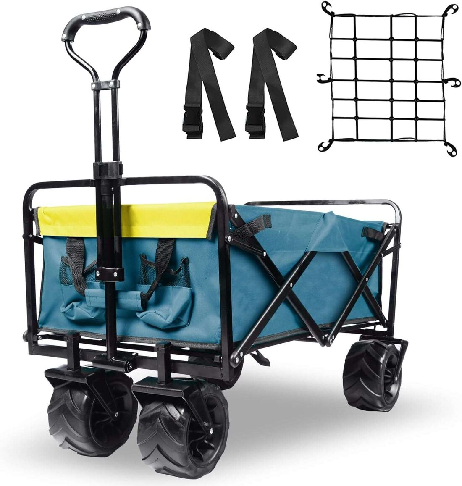
Bewerten Sie die MOOP-Tauglichkeit Ihrer Deko
Wir alle lieben ein wunderschön dekoriertes Camp, aber bedenken Sie bitte, dass manche Dekorationen, die super cool wirken, wie Plastikblumen oder Luftballons, sich nach einem großen Sturm oder einer großen Party in Ihrem Camp in einen MOOP-Albtraum verwandeln können!
Vermeiden Sie all die billige Plastikdeko – die sieht nach einer Woche im Staub nur elend und traurig aus und landet ohnehin im Müll. Seien Sie kreativ und verwenden Sie nachhaltige Materialien, um großartige Dekorationen zu schaffen. Oder ergattern Sie großartige Vintage-Stücke im Second-Hand-Laden zum Bemalen. Vermeiden Sie billigen Kram von Billig-Websites wie „Temu“. Upcyceln Sie Dekoration von anderen Events in Ihrer Region.
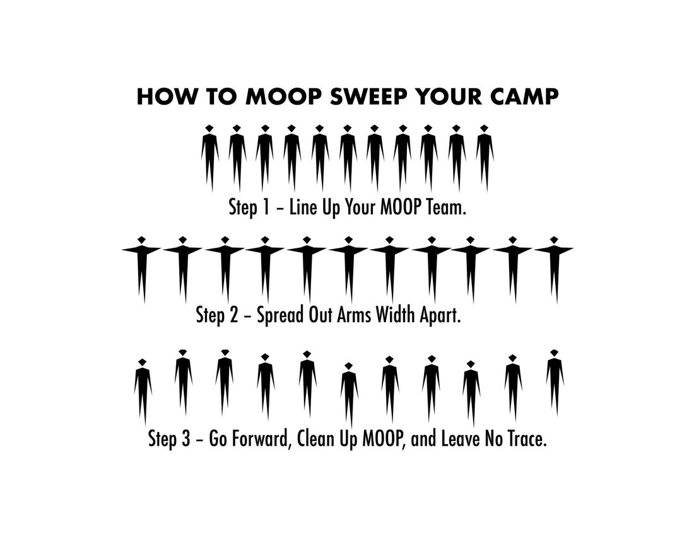
Während des Events — Die W&R-Zone
Die W&R-Zone ist die Recyclingstation bei Elsewhere. Dieses Jahr sind die Öffnungszeiten der W&R-Zone:
Vor dem Event:
- Samstag – Montag (4.–6. Juli): 16:00–18:00
Während des Events:
- Dienstag bis Samstag (7.–11. Juli): 11:00–19:00
- Sonntag (12. Juli): 09:00–18:00
Nach dem Event:
- Montag (13. Juli): 11:00–15:00
- Dienstag (14. Juli): 14:00–16:00
Bitte gehen Sie nicht außerhalb dieser Zeiten zur W&R-Zone. Selbst wenn Sie wissen, was Sie tun, könnte jemand anderes Sie sehen und denken, die W&R-Zone sei offen, und seine Sachen an den falschen Stellen abladen, respektieren Sie also bitte die Öffnungszeiten.
Dort sind Freiwillige, die Ihnen helfen, den getrennten Müll in den richtigen Container zu bringen, und sicherstellen, dass Sie nach dem spanischen System recyceln.
Bitte verlassen Sie Ihr barrio für einen W&R-Zonen-Gang mindestens eine Stunde vor Schließung, da der Müll geprüft und oft ordentlich neu sortiert werden muss.
Wichtig — täglich, per Gesetz
Müll muss TÄGLICH zur Recyclingstation gebracht werden. Das ist eine gesetzliche Anforderung. Es ermöglicht uns außerdem:
- Die Ansammlung von Müll in Ihrem Camp und das Anziehen von Fliegen (die Krankheiten verbreiten und allgemein verdammt nervig sind) zu vermeiden.
- Dem Dienstleister, mit dem wir zusammenarbeiten, zu ermöglichen, den Müll zu entfernen, während er im Laufe der Woche anfällt. Das ist viel praktischer, als am Ende der Woche mit einem unüberwindbaren Berg von Müll umzugehen.
Die W&R-Zone braucht Freiwillige, besonders am Ende der Woche. LNT-Leads, melden Sie bitte Leute an! Müll muss TÄGLICH zur Recyclingstation gebracht werden.
Ihre Campmitglieder schulen
Der Barrio-LNT-Lead muss seine Campmitglieder schulen,:
- Das spanische Recyclingsystem zu respektieren: die Dinge können verwirrend sein, wenn Sie aus einem anderen Land kommen, da die Systeme nicht gleich sind, aber die Tonnen haben dieselben Farben…
- Dosen (einschließlich Blechdosen) vollständig zu zerdrücken, bevor sie an einem sicheren Ort weggeworfen werden.
- Kartons flachzudrücken.
- Deckel auf allen Tonnen zu halten, um Fliegen zu reduzieren.
- Essensreste aus jeglichem Recycling zu entfernen.
- Aufzuhören, Papiertücher (Küchentuch, Toilettenpapier) in die Papiertonnen zu werfen, die gehören in den Biomüll (oder Restmüll, wenn sie mit menschlichen Ausscheidungen oder Kondomen usw. gefüllt sind).
- Aufzuhören, leere Getränkedosen als Aschenbecher zu benutzen!
Das spanische Recyclingsystem arbeitet mit einem Farbcode, der dem in Ihrem Land ähneln mag. Die W&R-Zone hat jedoch drei ähnlich aussehende große, offene Container für Restmüll, Papier und Plastik/Verpackung, einen runden, geschlossenen Container für Glas und Kompostgruben, die in den Boden gegraben sind. Bitte stellen Sie sicher, dass Sie Ihren Müll an der richtigen Stelle entsorgen, und im Zweifel bestätigen Sie noch einmal mit Ihrem freundlichen W&R-Zonen-Krieger im Dienst.
Es gibt druckbare Visualisierungen auf der Humans-Barrio-Lead-Seite, was wohin gehört, die Sie herunterladen, ausdrucken und in Ihrem barrio aushängen können. Wenn Sie sie nicht finden, wenden Sie sich an Barrio Support oder das LNT-Team, und sie helfen Ihnen weiter.
Nach dem Event — Löcher und Bodenverlagerung (Verwendung von Erdbohrern)
Es gibt keine konkreten Regeln, wie viel auf dem Gelände gegraben werden darf, aber es genügt zu sagen, dass kein Barrio ein großes Loch graben und offen lassen sollte, wenn es abreist. Dies könnte eine Verletzung oder einen Unfall verursachen, ein Fahrzeug könnte stecken bleiben oder einen Unfall haben, oder ein Tier könnte sich später verletzen.
Wenn Sie ein Loch graben oder einen Erdbohrer verwenden, sammeln Sie den überschüssigen Boden in Schuttsäcken, Aggregatsäcken (wie „Hippo Bags“ im UK) oder blauen IKEA-Taschen, die gerade noch anhebbar sind, wenn sie voll mit Boden sind. Lagern Sie sie aus dem Weg und füllen Sie diesen Boden am Ende der Woche wieder in das Loch.
MOOP Sweep
Matter Out Of Place (MOOP) – bezieht sich allgemein auf Abfall oder Gegenstände, die dort liegen, wo sie nicht hingehören. Es ist sinnvoll, während des Events und bevor Sie abreisen täglich einen MOOP Sweep durchzuführen.
Die Strike-Phase kann besonders schwierig sein, weil die harsche Umgebung Ihrem Körper bereits zugesetzt hat. Entscheidungsfindung wird schwerer, um also Fehler zu vermeiden, legen Sie vor dem Event einen LNT-Strike-Plan fest. Lassen Sie nach dem Event keine Möbel oder Müllsäcke auf oder nahe dem Gelände zurück und führen Sie einen MOOP Sweep durch, sobald Sie bereit sind, das Gelände zu verlassen.
Wenn Ihr Camp eingepackt ist und der von Ihnen besetzte Boden geräumt ist, versammeln Sie Ihre Campmitglieder, um einen MOOP Sweep durchzuführen. Hier streifen Reihen glücklicher (aber wahrscheinlich müder) Campmitglieder über das Camp und suchen nach JEDEM Objekt, das eindeutig fehl am Platz ist.
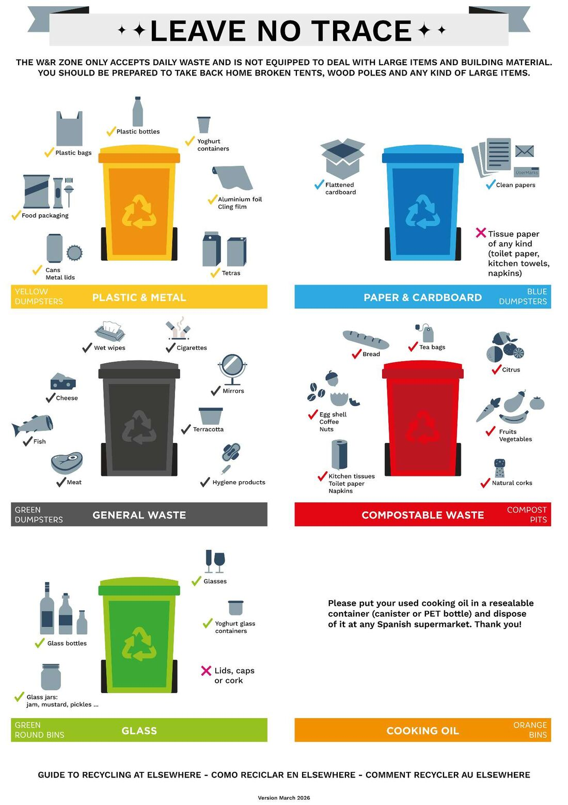
Die detaillierte LNT-Aufschlüsselung
Papier/Karton. Blaue Farbe im spanischen System, offener Container bei Elsewhere. Einigermaßen sauberes Papier und flachgedrückter Karton. Bitte stellen Sie sicher, dass loses Papier nicht beim leisesten Lufthauch davonfliegt. Bitte verzichten Sie so weit wie möglich darauf, sich große Gegenstände per Paketdienst schicken zu lassen. Wir verstehen zwar, dass das praktisch ist, aber es setzt die W&R-Zone unnötig unter Druck, da große Gegenstände immer mit großer Verpackung kommen.
Dinge, die nicht in Papier/Karton gehören:
- Keine Papiertücher (Toilettenpapier, Küchentuch, Servietten): diese gehören in die Kompostlöcher. Einzige Ausnahme: Papiertücher mit menschlichen Ausscheidungen darauf (Kot, Blut, Sperma), diese gehören in den Restmüll.
- Keine Tetra-Pak-Behälter: diese gehören in die gelbe Tonne.
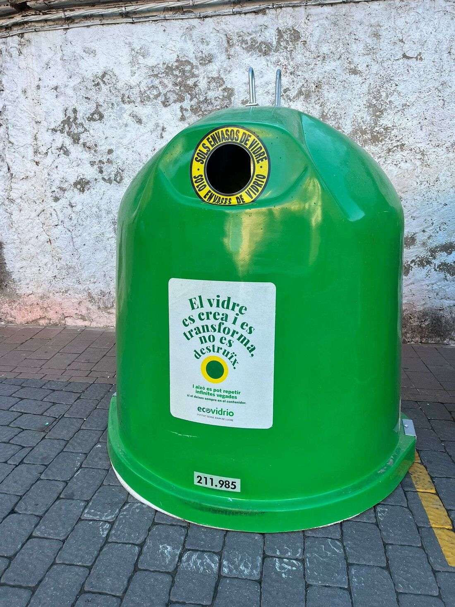
Plastik/Verpackung. Gelbe Farbe im spanischen System, offener Container bei Elsewhere. Plastikbehälter (Wasserflaschen, Plastiktüten, Joghurtbecher usw.), Getränke- und Lebensmitteldosen (wenn möglich zerdrückt, andernfalls den bereitgestellten Hammer in der W&R-Zone verwenden), Tetra-Paks, Metalldeckel, Alufolie und Frischhaltefolie, Styroporschalen usw. Im Allgemeinen ist dies für Lebensmittelverpackungen. Bitte minimieren Sie die Menge an Lebensmittelrückständen auf der Verpackung, um schlechte Gerüche, undichte Tüten und das allgemeine Ekelgefühl zu vermeiden. Bitte versuchen Sie, durchsichtige Müllsäcke zu besorgen, damit die W&R-Zonen-Krieger sie prüfen können, ohne sie öffnen zu müssen.
Dinge, die nicht in Plastik/Verpackung gehören:
- Hartplastik (z. B. Spielzeug, Kabelbinder) gehört in den Restmüll.
- Große Baumaterialien.
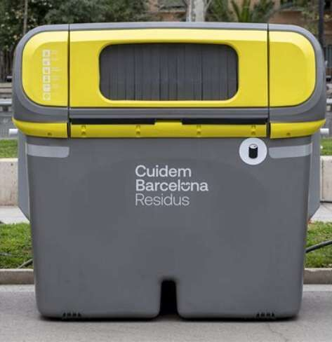
Glas. Grüne Farbe im spanischen System, geschlossener runder Container bei Elsewhere. Glasflaschen und -gläser, auch zerbrochene Trinkgläser (aber wenn möglich, bringen Sie die gar nicht erst mit). Wir haben nur eine begrenzte Möglichkeit, Glas zu entsorgen, und zerbrochenes Glas wird sehr MOOP-ig, versuchen Sie also bitte, die Menge an Glas zu begrenzen, die Sie mitbringen.
Dinge, die nicht in Glas gehören:
- Plastik- oder Metalldeckel, die gehören in Plastik/Verpackung.
- Korken, die gehören in die Kompostgrube, wenn sie aus Naturkork sind; wenn aus Plastik, gehören sie in Plastik/Verpackung.
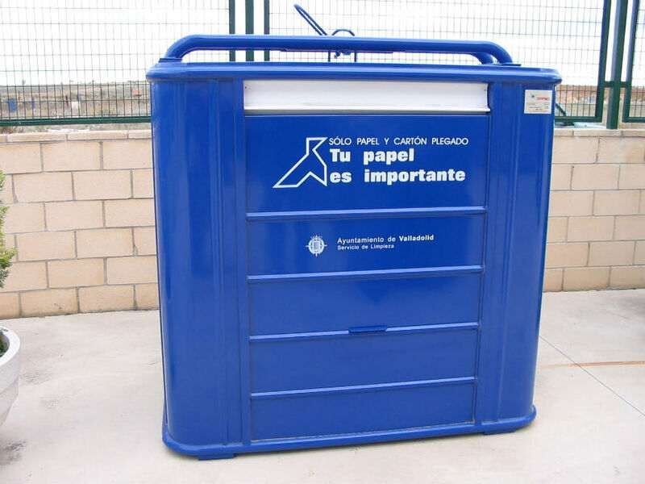
Restmüll. Schwarze Farbe im spanischen System, offener Container bei Elsewhere. Hier kommt das gesamte nicht recycelbare Material aus dem täglichen Müll hin. Eines unserer Ziele ist es, die Menge an Restmüll zu minimieren, die während des Events entsteht, daher die Wichtigkeit, das Recyclingsystem zu kennen!
Dinge, die nicht in den Restmüll gehören:
- Alles, was recycelt werden könnte.
- Baumaterialien, kaputte Zelte, Campingausrüstung, Kunstwerke, Teppiche und andere große Gegenstände. Was Sie nach Elsewhere bringen können, können Sie auch wieder hinausbringen. Wenn Sie große Gegenstände entsorgen müssen, lesen Sie weiter.
Biomüll. Rote Farbe im spanischen System, Kompostgruben im Boden bei Elsewhere. Verschüttetes Essen, Obst (einschließlich Zitrusfrüchten), Gemüse, Nüsse, Eierschalen, Korken, Teebeutel, Kaffeesatz, Papiertücher (Toilettenpapier, Küchentuch, Servietten ohne menschliche Ausscheidungen darauf). Biomüll sollte in einem wiederverwendbaren Komposteimer gesammelt werden, den Sie ausleeren und ausspülen können, bevor Sie ihn wieder in Gebrauch nehmen.
Dinge, die nicht in den Biomüll gehören:
- Plastiktüten: ob „kompostierbar“ oder nicht. Kompostierbare Tüten brauchen immer noch mehrere Jahre in den Gruben, bis sie sich zersetzen. Also kein Plastik überhaupt, bitte! Wir wollen kein Plastik im Boden hinterlassen, das Hunderte von Jahren zum Verschwinden braucht.
- Geben Sie keine übrig gebliebenen Fleisch- oder Fischreste in den Kompost; obwohl sie sich letztlich zersetzen, sind sie eine Bakterienquelle und ziehen sowohl Fliegen als auch größere Tiere an, die wir minimieren wollen.
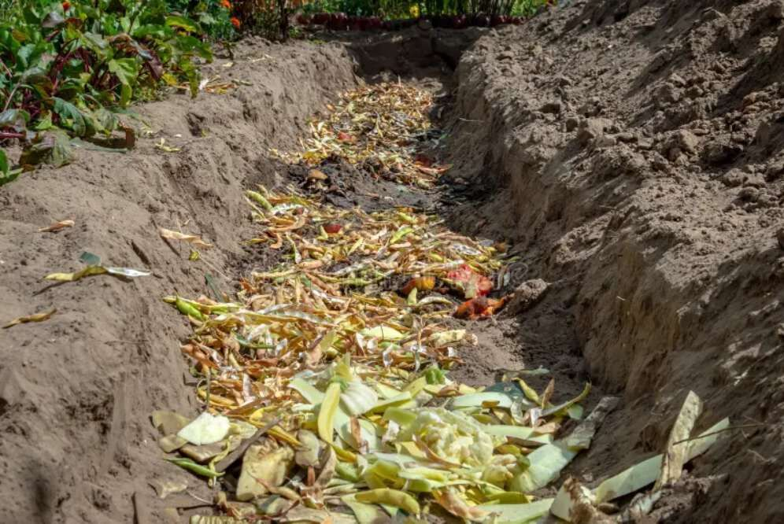
Speiseöl. Orange Farbe im spanischen System, bei Elsewhere nicht verfügbar. Bitte sammeln Sie Ihr Speiseöl in verschließbaren Behältern (PET-Flaschen oder Kanister). Dieses kann in jedem spanischen Supermarkt abgegeben werden. Wir haben nicht die Kapazität, das Speiseöl aller Elsewhere-Teilnehmenden zu handhaben.
Große Gegenstände loswerden
Wenn ein Barrio große Gegenstände hat, übrig gebliebenes Holz vom Bau, kaputte Liegestühle oder Pavillons oder Zelte, die nicht mehr zu reparieren sind, gibt es zwei Optionen. Besonders während des Aufbaus können Sie Ihren großen Müll zu diesem Recyclinghof bringen [INFORMATIONEN FOLGEN IN KÜRZE]. Oder Sie bestellen Garten-Container (Skips) über das Barrio Support. Diese können beim Event bereitgestellt werden.
Warnung — werfen Sie keine großen Gegenstände weg
ALLERDINGS — Sie müssen für das Wegwerfen solcher Gegenstände bezahlen. Wir ermutigen Barrios, vor dem Event einen Container (Skip) vorzubestellen, wenn Sie wissen, dass Sie ein großes Projekt durchführen, das die Entsorgung von Baumaterial oder eine Ausräumaktion Ihres Containers umfasst. Sie können einen ganzen Container, einen halben oder einen viertel bestellen. Bitte bestellen Sie vorab online über das Barrio-Bestellformular.
WERFEN SIE KEINE GROSSEN DINGE IN DER W&R-ZONE WEG.
Die W&R-Zone nimmt nur Ihren täglichen Müll auf. Große Gegenstände, die vom Bau übrig sind, oder Dekomaterial KÖNNEN NICHT in der W&R-Zone entsorgt werden. Sie werden nicht nur namentlich an den Pranger gestellt, sondern Ihnen kann auch die Rückkehr zu Elsewhere verboten werden. Wenn Sie Gegenstände haben, die Sie nicht mitnehmen oder irgendwo lagern können, wenden Sie sich an Barrio Support, anstatt zu versuchen, sie irgendwo zu verstecken!
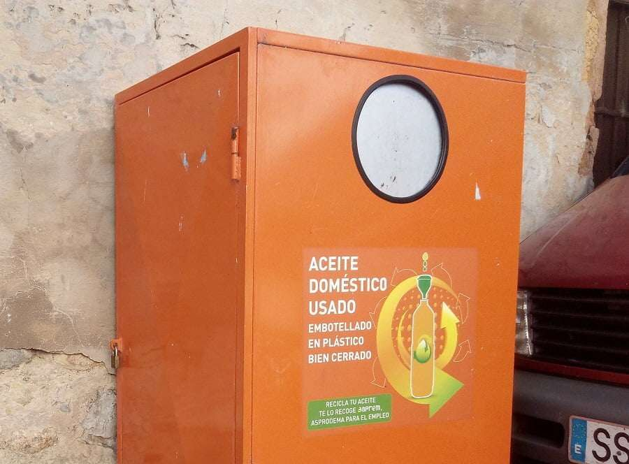
Kapitel 12
Gesundheit und Sicherheit.
Eigenverantwortung ist das Leitprinzip, um Ihre Barrio-Mitglieder während des Events gesund und sicher zu halten. Barrios sollten ein gutes Erste-Hilfe-Set haben und wissen, wie man es benutzt. Malfare stellt keine Erste-Hilfe-Materialien bereit, und wir sollten die Dienste des Roten Kreuzes nur nutzen, wenn nötig. Nach der Eigenverantwortung kommt die Freund-Verantwortung, fragen Sie bei Ihren Nachbarn nach, ob sie helfen können. Und erst dann… Malfare. Malfare ist keine Erstversorgungsstelle. Wenn Sie am Ende das Gelände verlassen müssen, um eine Apotheke / Klinik / ein Krankenhaus aufzusuchen, ist es gut, Malfare Bescheid zu geben; sie können Sie auch dabei anleiten, wie Sie dorthin kommen. Allerdings kann Malfare diese Fahrten nicht organisieren oder die Verantwortung dafür übernehmen, dass Personen von Gesundheitsdiensten zum Gelände zurückgebracht werden, das ist Aufgabe des nüchternen Fahrers Ihres Barrios im Dienst.
Jedes barrio sollte einen benannten „Wellbeing“-Lead haben, der sicherstellt:
- Informationen über Camp-Mitglieder mit relevanten medizinischen Vorerkrankungen zu sammeln (z. B. Epilepsie, Diabetes). Solche Informationen müssen diskret behandelt werden.
- Sicherzustellen, dass es eine Erste-Hilfe-Station im Camp und einen ausgestatteten Erste-Hilfe-Kasten gibt. Sie brauchen mindestens Material, um staubige Augen auszuspülen, Schnitte und Prellungen zu versorgen, Wunden zu waschen und Schwarzfliegen-Stiche zu behandeln. Idealerweise stellen Sie sicher, dass im Camp Personen identifiziert sind, die eine Erste-Hilfe-Ausbildung absolviert haben.
- Den Bau einer Handwaschstation zu beaufsichtigen.
- Sicherzustellen, dass alle möglichen Maßnahmen ergriffen werden, um Fliegen im Camp abzuschrecken.
- Alle Camp-Mitglieder über den Standort und die Dienste von Welfare Enough, Malfare, die Standorte des Erste-Hilfe-Sets und die Benutzung der Handwaschstation zu informieren.
- Sicherzustellen, dass sich einige Leute aus dem Camp für freiwillige Schichten bei Welfare Enough und Malfare anmelden!
- An der Barrio-Orientierungssitzung teilzunehmen, um alle zu begrüßen.
Wir wiederholen nicht, was im Survival Guide steht, daher finden Sie in diesem Abschnitt einige Tipps zu barrio-bezogenen Punkten.
Bau-Grundlagen
Richtiges Heben. Richtiges Heben klingt langweilig, aber wenn Sie sich zu Beginn des Festivals den Rücken verletzen, stellen Sie sich vor, wie wenig Spaß der Rest davon machen wird! Siehe: https://www.ergodyne.com/blog/the-eight-commandments-of-proper-lifting/
Im selben Sinne, sichere Leiternutzung: https://www.hse.gov.uk/work-at-height/ladders/
Arbeiten und Hitze
Während Aufbau und Strike sind die besten Tageszeiten zwischen 7:00 und 12:00 Uhr und dann 16:00 bis 20:00 Uhr. Wir empfehlen, ein günstiges Thermometer zu kaufen, das man im Schatten aufhängt, um die allgemeine Temperatur zu überwachen. Es kann bei Elsewhere Hitzewellen geben, bei denen die Temperatur in die Vierziger klettert, in welchem Fall die Arbeitszeiten kürzer werden. Es ist sehr leicht, einen Hitzeschlag zu erleiden, in welchem Fall es am besten ist, sich in den Schatten zu legen und kühle Flüssigkeiten zu trinken. Wir würden empfehlen, Alkohol zu vermeiden, da dieser Sie weiter dehydrieren kann. Es kann gut sein, dass Sie wegen des Wetters einen Tag im Aufbau verlieren.
Vernünftige Kleidung beim Arbeiten
Tragen Sie besonders während Aufbau und Strike Schuhwerk, in dem Ihr Fuß überlebt, wenn ein Elektrowerkzeug mit einem spitzen Bohraufsatz darauf fällt! Flip-Flops und nackte Füße sind eine schlechte Idee!
Es wird heiß sein, also könnten Sie versucht sein, so wenig Kleidung wie möglich zu tragen, aber wir würden empfehlen, mindestens Shorts, einen Hut und ein T-Shirt anzubehalten, um Sonnenbrand oder Verbrennungen beim Schweißen, beim Erzeugen von Funken oder beim Testen von Flammeneffekten zu vermeiden. Vermeiden Sie außerdem lose Kleidung mit Schnüren und herabhängenden Accessoires, und lange Haare müssen aus dem Weg gebunden werden.
Seuchen vermeiden
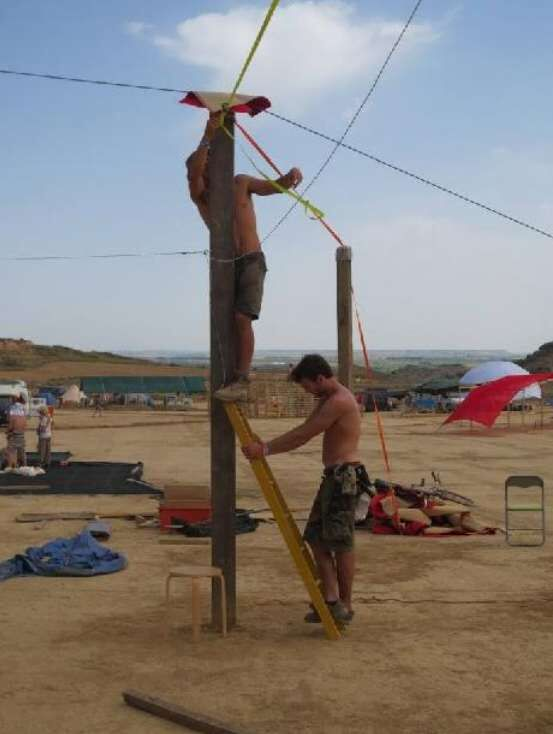
Ruhr. Ruhr in allen Formen wird durch unhygienische Bedingungen verursacht, bei denen Keime über den fäkal-oralen Weg (Kot-zu-Mund) übertragen werden. Dies resultiert aus unsauberen Händen nach dem Toilettengang oder durch Fliegen. Es ist daher wichtig, allen Campmitgliedern einzuschärfen, sich wiederholt die Hände zu waschen und Fliegen zu beseitigen.
Warnung
Elsewhere erlebte ein Jahr eine schlimme Ruhr-Epidemie. Das belastete die örtlichen Gesundheitsbehörden und erzwang eine Überprüfung der Gesundheitsfragen vor Ort. Wir legen Wert darauf, eine Wiederholung zu verhindern.
Handwaschstationen
Effektives Händewaschen gelingt am besten, indem man sich an Handwaschstationen 30 Sekunden lang gründlich mit antibakterieller Seife wäscht. Wir empfehlen außerdem Nagelbürsten, um Schmutz unter den Fingernägeln zu entfernen. Wir verlangen von jedem Barrio, eine Handwaschstation in der Nähe der Küche einzurichten, die die Leute nutzen können, besonders beim Umgang mit Lebensmitteln.
Behälter mit antibakteriellem Handwaschmittel sollten ebenfalls im ganzen Camp aufgestellt werden, besonders in Küchen und Bars. Es ist nicht so effektiv wie ein gründliches Händewaschen unter fließendem Wasser, aber praktischer. Beschildern Sie das Händewaschen. Anleitungen, wie man eine Station baut, gibt es hier: https://youtu.be/SMa5OTa3PnU
Im Hinblick auf die Geländeplanung sollten Küchen immer von Toiletten entfernt angesiedelt werden.
Bitte gestalten Sie für Inklusion: ein Besucher Ihres Barrios muss möglicherweise Ihre Station nutzen, bedenken Sie:
- Eine rollstuhlfahrende Person kann keine Fußpumpe bedienen! Haben Sie wenn möglich eine elektrische Option.
- Die Station muss reichlich Freiraum für den Zugang haben.
- Höhe der Beckenoberfläche idealerweise 80 cm, möglicher Rollstuhlzugang darunter, aber auch nicht zu hoch!
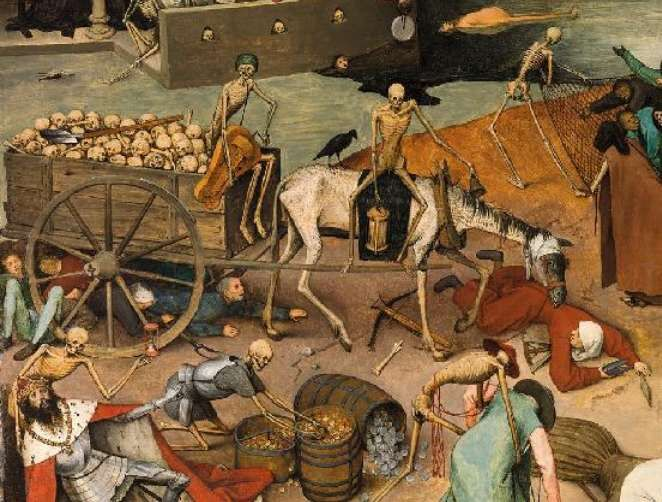
Fliegen abschrecken
Fliegen werden besonders von zuckerhaltigen Lebensmitteln, Fleisch und Fäkalien angezogen. Bewahren Sie alle (geöffneten) Lebensmittel in versiegelten Behältern auf. Lassen Sie kein schmutziges Geschirr ansammeln; stellen Sie sicher, dass alles Geschirr sofort gespült wird. Übrig gebliebene Getränke sollten in einen allgemeinen Schüttbehälter geleert werden, der abgedeckt gehalten werden sollte, um Fliegen zu reduzieren. Halten Sie allgemein eine ordentliche Küche, in der kein Essen herumliegt.
- Alle Tonnen sollten Deckel haben (außer Papier/Karton).
- Hängen Sie überall in der Küche Fliegenfänger auf und ersetzen Sie sie regelmäßig. Erwägen Sie, einen Insektenvernichter in der Küche aufzuhängen.
- Versuchen Sie, Eingänge zu Lebensmittelbereichen durch Barrieren zu führen, die Fliegen einigermaßen abschrecken, z. B. Plastikvorhänge, Perlenvorhänge usw.
- Bewahren Sie Fleisch immer in Kühlboxen auf. Übrig gebliebenes Fleisch muss so schnell wie möglich in Tonnen oder Behältern entsorgt werden. Lassen Sie es nicht herumstehen.
- Leeren Sie die Schüttbehälter generell regelmäßig und lassen Sie keinen Müll sich ansammeln.
- Wenn Tonnen voll sind – überfüllen Sie sie nicht und binden Sie sie sicher zu, um zu verhindern, dass Fliegen hineingelangen. Wenn Tüten reißen, packen Sie sie doppelt.
Einvernehmen (Consent)
Einvernehmen ist bei Elsewhere von großer Bedeutung, wo eine breite Vielfalt von Kulturen und Hintergründen zusammenkommt. Interaktionen in den Barrios von Elsewhere sind einer der Hauptorte, an denen Einvernehmen zum Tragen kommt.
Wir verlangen, dass jedes Barrio je nach Größe des Barrios 1–2 Consent Leads ernennt, die:
- Sich mit dem Elsewhere Consent Education Lead unter consent@nobodies.team abstimmen, um Unterstützung bei der Consent-Vorbereitung und -Orientierung innerhalb des Barrios zu erhalten.
- Sich mit dem Elsewhere Consent Response Lead unter consent@nobodies.team abstimmen, um Unterstützung im Umgang mit Consent-Vorfällen zu erhalten, die vor Ort passieren.
- Sicherstellen, dass alle im Camp Fragen rund um Einvernehmen kennen und verstehen.
- An der Barrio-Orientierungssitzung teilnehmen, um alle zu begrüßen.
- Sicherstellen, dass alle wissen, dass es 2 Meldeboxen für Consent-Verstöße mit Formularen in 3 Sprachen (Englisch, Französisch, Spanisch) gibt, eine bei Welfare Enough und eine weitere in einem gelben Zelt im Freecamp, in denen sie (auf Wunsch anonym) einen Vorfall melden oder ein vertrauliches Gespräch mit einem freiwilligen Zuhörer im Safer Space anfragen können, der jedem zur Verfügung steht, der emotionale Unterstützung braucht; erkundigen Sie sich im Safer Space oder bei No Info nach den Öffnungszeiten.
- Mit dem Barrio-Event-Koordinator zusammenarbeiten, um sicherzustellen, dass Einvernehmen bei allen im Barrio für die allgemeine Elsewhere-Bevölkerung veranstalteten Events und Aktivitäten berücksichtigt wird.
Zusätzliche Consent-Ressourcen für Barrios:
- Der Survival Guide enthält allgemeine Informationen zum Einvernehmen für alle Teilnehmenden.
- Der Barrio Consent Guide ist randvoll mit weiteren Details darüber, wie man eine Consent-Kultur innerhalb des Barrios schafft, sowie mit hilfreichen Tipps und Werkzeugen, die Sie bei der Vorbereitung nutzen können. Er ist für alle Barrio-Leads, besonders die Barrio Consent Leads. Der Guide enthält Tipps zur Auswahl der Consent Leads Ihres Barrios.
- Consent-Response-Barrio-Support: während des Events steht der Consent Response Lead für vertrauliche Beratung zur Verfügung. Finden Sie uns in der Safer Space Welcome Zone, gelegen neben Welfare Enough.
Die Shit Ninja Forces
Die Shit Ninja Forces kümmern sich um die sanitären Einrichtungen von Nowhere. Es gibt drei Teams, die sich den verschiedenen Aufgaben widmen: Die Shit Ninjas sorgen dafür, dass die Toiletten in gutem Zustand sind. Die Urinal Unicorns kümmern sich um die verschiedenen Urinale und die TAP Dancers betreuen die hoffentlich acht Total Access Pee/Period Stations (TAPS). Das sind die barrierefreien Toiletten mit Handwaschstationen, die nur von Personen mit besonderem Barrierefreiheitsbedarf oder während der Menstruation benutzt werden sollten. Die Freiwilligen für die Shit Ninjas werden über die Barrios rekrutiert, den anderen Teams kann man über Humans beitreten.
Barrios können die Ninja Forces auf vielfältige Weise unterstützen:
- Jedes Barrio ernennt einen Shit Ninja pro je 30 Mitglieder. Bitte geben Sie die Namen so bald wie möglich an shitninjas@nobodies.team an, falls Sie sie nicht in den sekundären Barrio-Informationen benannt haben.
- Die TAPS brauchen Wasser, um zu funktionieren. Wenn die TAP Dancers um Wasser bitten, helfen Sie ihnen bitte aus!
- Schulen Sie Ihr Barrio über die verschiedenen Einrichtungen, wie man sie richtig benutzt und welche man nicht benutzen sollte.
- Besonders die TAPS (das sind umfunktionierte Barrierefreiheits-Toiletten) sind nur für Menschen, die menstruieren, im Rollstuhl sitzen oder in einer Weise beeinträchtigt sind, dass sie sie benutzen müssen.
- Behalten Sie die Toiletten im Auge, melden Sie jeglichen Schaden oder unbenutzbare Zustände dem Shithead im Dienst.
- Helfen Sie, Freiwillige für die TAP Dancers und die Urinal Unicorns zu rekrutieren.
Ihre Barrio-Shit-Ninja-Teams schließen sich mit Shit Ninjas aus der Nachbarschaft zusammen, um sich um einen der 15 Toilettenblocks in der Nähe zu kümmern. Welcher das ist und alles über die Shit Ninja Forces wird vorab über ein Online-Treffen oder bei einem verpflichtenden Schulungstreffen vor Ort erklärt. Wir versuchen, Ihnen vorab einen Plan zur Verfügung zu stellen, wer für welchen Toilettenblock zuständig ist.
Die Shit Ninjas kontrollieren die Toiletten zweimal täglich und füllen die hölzerne Vorratsbox wieder auf. Die Reinigung wird von einer Firma durchgeführt. Alle benötigten Vorräte werden von der NCA bereitgestellt. Die Shit Ninjas können die Arbeit auch verteilen und ihre Campmitglieder einbeziehen, wenn sie sie anleiten und sicherstellen, dass die Arbeit erledigt wird.
Kermit ist unser grüner Container nahe La Cantina, Heimat von LNT und den Shit Ninja Forces. Die Shit Ninjas holen hier alle Vorräte, melden Schäden oder sprechen mit einem Shithead. Einer der Shitheads ist auf Abruf und kann per Funk kontaktiert werden, wenn er nicht bei Kermit zu finden ist.
Und eine letzte Sache: Es gibt hoffentlich acht TAPS, sie werden mit Zahlenschlössern verschlossen. Es ist sehr wichtig, den Leuten beizubringen, dass diese Toiletten nicht von allen benutzt werden können, auch wenn der Wunsch, sich ordentlich die Hände zu waschen, verständlich ist. Die barrierefreien Toiletten haben nur einen winzigen Tank, sie füllen sich sehr schnell. Wenn das Schloss geknackt oder zerstört wird, werden sie unbenutzbar für die Menschen, die auf sie angewiesen sind. Außerdem wollen Sie wahrscheinlich keine überlaufende Kacke-Sauna in der Nähe.
Die Shit Ninjas erhalten bald eine E-Mail mit allen weiteren Informationen. Fragen? Kontaktieren Sie die Shitheads unter shitninjas@nobodies.team oder im LNT-Bereich auf dem Nobodies Collective Discord.
Erste-Hilfe-Kasten
Eigenverantwortung ist eines der Kernprinzipien des Events. Wir ermutigen alle in ihren Camps, aufeinander aufzupassen, ein Auge aufeinander zu haben, besonders im Hinblick auf Übermaß und Dehydrierung. Wir möchten, dass Camps Staub in den Augen sowie Schnitte und Prellungen im Camp behandeln und nicht zentral. Sie werden von den zentralen Diensten möglicherweise abgewiesen, wenn die Verletzung klein genug ist, um im barrio behandelt zu werden.
Wir ermutigen außerdem jedes Camp, einen voll ausgestatteten Erste-Hilfe-Kasten an eine Wand oder irgendwo zu schrauben, wo er nicht bewegt werden kann, sowie eine Erste-Hilfe-Station. Eine Checkliste für Erste-Hilfe-Kästen finden Sie hier: https://www.tripsavvy.com/first-aid-checklist-for-camping-498450
Welfare Enough und Malfare
Wenn sich jemand nicht sehr wohlfühlt, gibt es bei Elsewhere zwei Service-Ebenen:
- Welfare Enough
- Malfare
Welfare Enough ist ein Bereich, der für Menschen verfügbar ist, die sich nicht sehr wohlfühlen, aber keine medizinische Behandlung benötigen. Wenn Hitze und Lärm zu viel werden, wenn Sie einen Raum brauchen, um Ihren emotionalen Zustand zu erholen, oder wenn Sie über die Stränge geschlagen haben und etwas Ruhe und Hinlegen brauchen, ist dies der Ort für Sie. (Hinweis: Welfare Enough ist kein Drop-in-Center, wenn also jemand dorthin muss, bringen Sie bitte nicht den Rest Ihres Camps mit).
Wenn Sie unsicher sind, ob Sie medizinische Behandlung brauchen, gehen Sie trotzdem zu Welfare Enough, und sie entscheiden möglicherweise, Sie an Malfare weiterzuleiten.
Malfare ist der Ort, wo Sie medizinische Hilfe bekommen. Wenn es Verletzungen gegeben hat, wenn jemand Magenverstimmung hat oder bewusstlos ist, ist dies der Ort, wohin Sie ihn bringen sollten. Sie haben das Rote Kreuz (Cruz Roja) vor Ort, das bezahltes, qualifiziertes medizinisches Personal ist.
Das Rote Kreuz hat die Leute gebeten, zu versuchen, auf sich selbst aufzupassen. Letztes Jahr haben sie über 1000 Menschen wegen Problemen wie Staub in den Augen, kleineren Schnitten oder Wunden, die genäht werden mussten, gesehen.
Wenn Sie Spanisch sprechen, sucht Malfare immer Übersetzer, kontaktieren Sie malfare@nobodies.team.
Warnung
Es ist von entscheidender Bedeutung, dass jeder, der krank ist, besonders durch unerklärliche Magenverstimmungen, so schnell wie möglich Hilfe sucht. Dies dient dazu, sicherzustellen, dass er keinen Erreger weitergibt, den er sich möglicherweise eingefangen hat.
Kapitel 13
Umweltauswirkungen.
Während die Playa von Elsewhere ein großartiger Ort ist, um das Leben und all seine Segnungen zu feiern, ist der Burn auch eine großartige Gelegenheit, über unseren Platz auf der größeren Playa — der Erde — nachzudenken und darüber, wie wir dazu beitragen können, diese größere Playa zu einem nachhaltig lebenswerten Ort für uns und unsere Kinder zu machen, für die kommenden Jahrhunderte.
Elsewhere mag jeden Sommer enden, und Müll mag jeden Tag vom Gelände abtransportiert werden; aber wir Nobodies können unserem Planeten (oder zumindest unserem Sonnensystem) nicht entkommen, und unser Müll, in all seinen Formen, kann das ebenso wenig. Tatsächlich kann man die weltweite Gesellschaft als nur einen größeren Burn sehen — nur dass man diesmal den Müll nicht wegschaffen kann. Die Erde wird sich an alles erinnern.
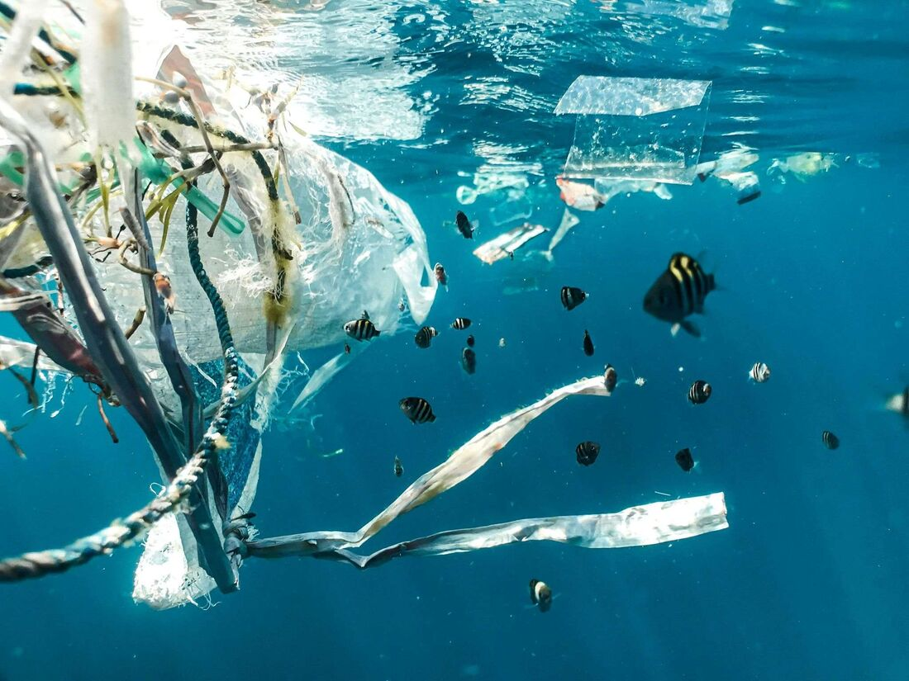
3 Schritte für Umwelthandeln
Unser Ziel als Menschheit sollte sein, die mit unserer Präsenz auf der Erde verbundenen „Umweltprobleme“ so zu lösen, dass nachhaltiges Leben über Jahrhunderte und sogar Jahrtausende möglich ist, nicht nur über Jahrzehnte. Wie machen wir das, und wie hängt das mit Elsewhere zusammen? Wir schlagen 3 Antworten auf diese beiden Fragen vor:
1. Inspirieren
Bei Elsewhere geht es darum, unsere Werte, unsere Träume, unsere Energie zu teilen. Aber wir schaffen auch Bewusstsein. Das kann jede Form annehmen, aber eine der wohl effizientesten ist, mit gutem Beispiel voranzugehen:
- Reduzieren Sie Ihre CO2-Auswirkungen, besonders beim Transport von Menschen und Sachen zum und vom Gelände;
- Reduzieren Sie Ihren Wasser-, Strom- und/oder Treibstoffverbrauch;
- Reduzieren Sie den Abfall jeder Art, den Sie vor Ort produzieren;
- Reduzieren Sie den Abfall, der während Vorbereitung, Aufbau, Strike und Lagerung entsteht;
- Reduzieren Sie den Abfall, der mit Sachen verbunden ist, die Sie in Ihrem barrio nutzen, einschließlich aller Arten von Energie und Abfall, die zur Herstellung dessen verwendet werden, was Sie vielleicht nur während der Burns nutzen (also „Scope-3-Abfall“)
Jedes Mal, wenn Sie eines der oben genannten Dinge tun, gehen Sie mit gutem Beispiel voran. Sie regen zum Nachdenken an. Sie bringen die Menschen um Sie herum dazu, nachzudenken, zu reflektieren und schließlich zu handeln und sich zu verändern. So wie Sie es getan haben. Aber Sie können auch auf andere Weise inspirieren:
- Indem Sie Kunstinstallationen bauen und zeigen, die Bewusstsein für Nachhaltigkeitsfragen auslösen;
- Indem Sie Workshops veranstalten, um Ihre Vision zu teilen und Menschen zu Akteuren positiven Wandels werden zu lassen;
- Indem Sie in Ihren DJ-Sets Tracks wählen, die Texte enthalten, die Menschen zum Nachdenken bringen;
- Indem Sie Ihre Barrio-Mitglieder ermutigen, eines der oben genannten Dinge zu tun.
Selbst wenn Menschen sich nicht sofort ändern, werden sie mit Ihnen reden. Über die oben genannten Mittel werden Sie Gleichgesinnte finden, die — wie Sie — sich um die Erde sorgen und Veränderung wollen. Dann können Sie gemeinsam zum nächsten Schritt gehen.
2. Über Zeit aufbauen
Eines der schwierigsten Dinge daran, irgendetwas für den Planeten zu tun, ist, andere zu finden, denen es wichtig ist. Durch die Handlungen aus Schritt 1 werden Sie einige dieser Nobodies gefunden haben.
Sie können bestehende Werkzeuge nutzen, um sich nach Elsewhere mit anderen Burnern abzustimmen, wie das ePlaya-Forum des Burning Man Project oder die Elsewhere-Kanäle auf Discord. Nun können Sie gemeinsam Projekte ersinnen, während und außerhalb der Burns, die wirklich von Bedeutung sind.
Gemeinsam auf einer längeren Zeitskala aufzubauen erlaubt Ihnen:
- Sich Wissen über die Probleme anzueignen, die Sie zu lösen versuchen. Wenn das Betreiben eines nachhaltigen Barrios schon nicht offensichtlich ist, ist das Betreiben eines ganzen Planeten überaus entmutigend;
- Dieses Wissen anzuwenden, um zu priorisieren, welche Projekte für Sie am sinnvollsten sind und warum;
- Gut darin zu werden, diese Projekte umzusetzen;
- All das zu iterieren.
Indem Sie das oben Genannte tun, können Sie Ihr Spiel verbessern und ehrlich etwas für den Planeten tun. Dies ist eine Möglichkeit, Gemeinschaftswerte auf ihren Höhepunkt zu bringen: indem Sie sich wirklich um die Erde sorgen, sorgen Sie sich um alle, um alle Lebensformen. Und dann können Sie nächstes Jahr nach Elsewhere zurückkehren, mit viel mehr zu teilen.
3. Teilen, was Sie aufgebaut haben
Mit Iterationen und Zeit zur Vorbereitung wird Ihr Barrio über die Jahre in der Lage sein, die Nobodies wirklich umzuhauen. Ihre Präsenz bei Elsewhere wird erwartet werden, und diese wenigen Tage werden zu einem Knotenpunkt des Wandels, der Bewusstseinsverbreitung, der Feier sinnvollen Handelns.
All die Handlungen im „Inspirieren“-Schritt werden umso bedeutsamer, je mehr Arbeit und Energie Sie investieren, um sie besser und besonders relevanter zu machen. Elsewhere ist, was wir daraus machen, und es kann so vieles sein! Der Himmel ist blau und endlos — helfen Sie, dass er so bleibt.
Praktische Wege, um bei Elsewhere für den Planeten zu handeln
Nun, was, wenn Sie keine Ahnung haben, wo Sie anfangen sollen? Was können Sie heute tun, das von Bedeutung sein wird? Hier sind einige Vorschläge:
1. Transport
Der Transport macht jedes Jahr 8 Gt CO2-Emissionen aus; das sind etwa 21 % der weltweiten direkten CO2-Emissionen. Ein Event wie Elsewhere ist davon keine Ausnahme: laut der gemeinnützigen Organisation AGF machen die Reise-Emissionen des Publikums 18 bis 79 % der gesamten CO2-Emissionen von Festivals aus. Über die naheliegende Empfehlung hinaus, nicht mit dem Flugzeug nach Elsewhere zu reisen, raten wir Ihnen dringend, Ihre Barrio-Mitglieder zu ermutigen, mit dem Zug entweder nach Sariñena oder Bare zu kommen. Von dort aus können Sie entweder:
- Ihre Barrio-Mitglieder den Elsewhere-Bus von Barcelona nehmen lassen
- Ihre Barrio-Mitglieder von Sariñena mit Fahrerschichten aus Ihrem Barrio abholen
- Ihre Mitglieder bitten, ein Geländerad (Dirt Bike) zu nutzen, um die letzten ~25 km von Sariñena zum Gelände zurückzulegen. Dirt Bikes sind bei Elsewhere besonders bequem! :)
Wenn nicht der Zug, dann können Sie Ihre Mitglieder so viel wie möglich Fahrgemeinschaften planen lassen. Wenn Sie Ihr barrio über eine Excel-Tabelle organisieren, können Sie einfach einen Reiter „Fahrgemeinschaften“ hinzufügen, damit Mitglieder ihre Fahrten leichter gemeinsam organisieren können.
2. Strom
Wie im Abschnitt „Generatoren und Strom“ angegeben, können Sie herkömmliche Generatoren verwenden, oder Sie können Solarmodule und optional Batterie- oder andere Arten von Speichern verwenden, um Ihren CO2-Fußabdruck weiter zu senken. Sie könnten sogar mit dem E-Bike von Sariñena kommen und die E-Bike-Akkus als Speicher nutzen. Sie finden Ressourcen und kundige Burner auf https://eplaya.burningman.org/viewforum.php?f=278, um Ihnen zu helfen, ein teilweise erneuerbares oder sogar treibstofffreies Stromsystem zu bauen. Wie immer, achten Sie auf Sicherheitsbedenken: zusätzlich zu den in früheren Teilen behandelten Erdungsbedenken können Batterien, besonders Lithiumbatterien, die sowohl Sonne als auch Last ausgesetzt sind, leicht Feuer fangen oder sogar explodieren und sind nicht leicht zu löschen. Bitte bauen Sie ein sicheres System oder bauen Sie gar nichts.
Wenn Sie jedoch wissen, wie man dies baut, dann wird Ihr barrio zur Inspiration für andere barrios, wie man Strom in ihren eigenen barrios und möglicherweise über Elsewhere hinaus dekarbonisiert. Sie werden Wandel inspirieren, und das ist hochgradig erwünscht!
3. Essen
Laut einer peer-reviewten Studie von 2020 kann der Wechsel von einer typischen omnivoren Ernährung zu einer veganen Ernährung die CO2-Emissionen um mehr als das 6-fache senken, von 2 t/Jahr auf 300 kg/Jahr. Wenn jeder Mensch 2 Tonnen/Jahr produzierte, ergäbe das 16 Gt/Jahr, oder fast die Hälfte aller CO2-Emissionen. Nicht nur die Art des Essens, sondern auch seine Herkunft ist von Bedeutung: lokal bereitgestellte Lebensmittel haben viel niedrigere CO2-Emissionen durch Transport. Daher ist nach Transport und Strom der nächstgrößte CO2-Emittent das Essen. Der Abschnitt Essen und Trinken bietet einige nützliche Tipps, wie man bei Elsewhere sowohl vegane als auch proteinreiche Mahlzeiten zubereitet. Auch hier können Sie ein Beispiel setzen, das andere um Sie herum inspiriert.
Nehmen Sie sich Zeit und verbessern Sie, was Sie können, wann Sie können.
Zurück zum InhaltKapitel 14
Bezahlung von Dingen.
Dieses Jahr werden alle Barrio-bezogenen Dienstleistungen vom Barrio Support Team abgewickelt. Wir nehmen kein Bargeld an! Die Bezahlung für die meisten Artikel muss vor dem Event erfolgen, um die Lieferung zu gewährleisten. Es kann sein, dass bestimmte Artikel nur begrenzt verfügbar sind (LPG-Flaschen, Paletten, Feuerlöscher). Wir teilen Ihnen etwaige Fristen in Kürze mit.
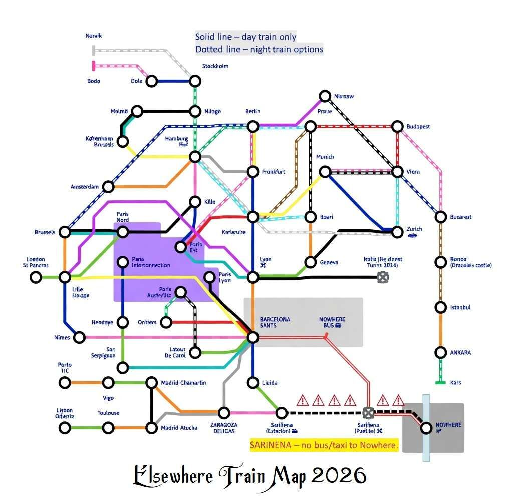
Folgende Dinge können gekauft werden:
- Nur Container-Lagerung (für Barrios, die nicht kommen)
- Container-Transport und -Lagerung
- Propan- und Butanflaschen
- Wasserwürfel-Lagerung
- Wasser- und Eisgutscheine
- Feuerlöscher-Miete
- Exit-Schilder und Feuerlöscherschilder (per Genehmigung erforderlich)
- Palettenmiete
- Erdbohrer-Nutzung
- Container-Nutzung (Skip)
- Erdungsstab-Installation und -Entfernung
Hinweis
[WEITERE INFORMATIONEN ZUR BESTELLUNG FOLGEN IN KÜRZE]
Kapitel 15
Im (unwahrscheinlichen) Notfall.
Sicherheits- und Notfallplan
Eine Liste aller Teilnehmenden des Barrios und ihrer Telefonnummern muss im Notfall den lokalen Behörden zur Verfügung gestellt werden. (Stellen Sie sich den Fall eines Flächenbrands und einer Einheit vor, die umhergeht und nach vermissten Personen sucht; wir werden von den Behörden gebeten, die Liste der Personen vor Ort bereitzustellen, damit sie wissen, nach wem sie suchen.) Am Tag zuvor wird es eine Feuerübung tagsüber geben, seien Sie also bereit!
Seien Sie vorbereitet:
- Stellen Sie ein Erste-Hilfe-Set zusammen, das Augentropfen, Mittel gegen Durchfall und Diphenhydramin (gegen Schwarzfliegen-Stiche) enthält.
- Machen Sie eine Kopie Ihres Ausweises und Ihrer GHIC/EU-(oder anderen) Krankenversicherungskarte, legen Sie diese in einen Zip-Beutel und geben Sie sie einem Camp-Lead oder ins Innere Ihres Zeltes – leicht zu finden.
- Teilen Sie Ihren Liebsten die untenstehenden Informationen mit.
- Beleuchten Sie natürliche Wege durch Ihr Barrio, damit die Leute wissen, wo sie gehen sollen (und wo nicht).
- Beleuchten und/oder kennzeichnen Sie Zeltschnüre mit Markierungsband!
Notfall
Wenn etwas vor Ort passiert:
- Finden Sie heraus, ob Sie oder ein Freund es regeln können. Wenn nicht…
- Kommen Sie bei Malfare vorbei und schauen wir, was wir tun können! Wir haben einige Vorräte, und das Rote Kreuz kann ebenfalls helfen.
Brauchen Sie Hilfe, die vor Ort nicht geleistet werden kann?
- Sagen Sie Ihrem Freund, dass er diesen Ausweis und die EU-Karte aus Ihrem Zelt holen soll
- Wir haben Karten zum Krankenhaus, falls Ihr Freund fahren kann
- Das Rote Kreuz kann Sie bei Bedarf auch ins Krankenhaus transportieren.
- Wenn Sie wieder versorgt und bereit zur Rückkehr sind, rufen Sie uns bei Malfare an, und wir finden einen Freund, der Sie vom Krankenhaus abholt.
Informationen, die Sie bei einem Liebsten zu Hause hinterlassen sollten
Wenn etwas in der Default-Welt passiert und jemand Sie finden muss, stellen Sie bitte sicher, dass er die untenstehenden Informationen kennt:
- Ihren Vor- und Nachnamen
- Ihren Playa-Namen (falls Sie einen haben)
- Mit wem Sie gekommen sind
- In welchem Camp/Barrio Sie sind
- Eine Personenbeschreibung
Mit diesen Informationen können sie Malfare anrufen und/oder eine E-Mail an emergency@goingnowhere.org senden.
Zurück zum InhaltKapitel 16
Wie Sie nach Elsewhere kommen.
Umgeben von felsigen Bergen in der versengten spanischen Wildnis ist die Kulisse atemberaubend. Elsewhere liegt im Norden Spaniens, zwischen Zaragoza und Lleida. Die nächstgelegenen Dörfer sind Castejón de Monegros (12 km) und Sariñena (19 km), und aus beiden Richtungen verlaufen die letzten 10 km auf Schotterstraßen.
GPS: 41°40’45.4″ North 0°09’04.3″ West (oder 41.679270, -0.151182, falls Sie das bevorzugen)
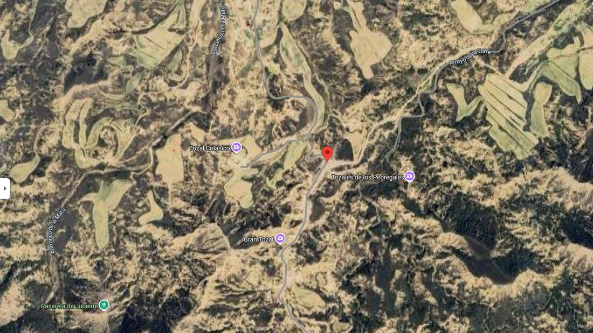
Flugzeug
Die nächstgelegenen Flughäfen sind: Zaragoza, Barcelona & Reus. Es kann auch nützlich sein, Flüge zu prüfen nach: Girona, Bilbao, Madrid & Valencia
Zug
Der nächstgelegene Bahnhof zu Elsewhere ist Sariñena. Er liegt an der regionalen Bahnlinie zwischen Zaragoza und Lleida. Um nach Zaragoza oder Lleida zu gelangen, gibt es eine große Bandbreite an Zügen, vom superschnellen AVE bis zu viel langsameren Regionalzügen. Die Fahrpreise reichen von €25 bis €65, je nachdem, welchen Zug Sie nehmen. Aktuelle Zugfahrpläne finden Sie auf der Website Renfe. Die Fahrpläne für den Lokalzug nach Sariñena ändern sich sonntags, prüfen Sie also genau, ob Sie die richtige Zeit für den gewünschten Reisetag haben.
Hinweis
Der Bahnhof Sariñena ist etwa 3 km vom Zentrum der eigentlichen Stadt entfernt, es kann ein ziemlich anstrengender Fußmarsch mit all Ihrer Ausrüstung sein. Bedenken Sie außerdem, dass Sariñena nicht das Ende Ihrer Reise ist. Es sind noch 18 km von Sariñena zum Elsewhere-Gelände. Zu Fuß zum Gelände zu gehen wird aufgrund unsicherer Straßen und Hitze nicht empfohlen. Es gibt KEINEN Taxidienst, der Sie zum Eventgelände bringen kann. Sie müssen die „letzte Meile“ selbst organisieren.
Bus (Spanien)
Spanien hat ein sehr gutes Busnetz, das Sie nach Zaragoza bringen kann. Aktuelle Busfahrpläne finden Sie hier. Vom neuen Busbahnhof Zaragoza, gelegen im Erdgeschoss des Zaragoza-Bahnhofs Delicias, können Sie den Lokalbus nach Sariñena nehmen.
Das lokale Busunternehmen heißt Autocares Therpasa. Die Kosten betragen etwa €9 pro Richtung, und die Fahrt dauert pro Richtung etwa eine Stunde und eine Viertelstunde.
Schauen Sie auf den Websites https://www.renfe.es und https://www.alsa.es nach guten Busangeboten.
Hinweis
Der Bahnhof Sariñena ist etwa 3 km vom Zentrum der eigentlichen Stadt entfernt, es kann ein ziemlich anstrengender Fußmarsch mit all Ihrer Ausrüstung sein. Bedenken Sie außerdem, dass Sariñena nicht das Ende Ihrer Reise ist. Es sind noch 18 km von Sariñena zum Elsewhere-Gelände. Zu Fuß zum Gelände zu gehen wird aufgrund unsicherer Straßen und Hitze nicht empfohlen. Es gibt KEINEN Taxidienst, der Sie zum Eventgelände bringen kann. Sie müssen die „letzte Meile“ selbst organisieren.
Bus (Nowhere)
Weitere Informationen folgen in Kürze!
Auto
Entfernungen von den nächstgelegenen Städten mit Flughäfen:
- Reus ist eine 2:30-Stunden-Fahrt von Sariñena entfernt (der Flughafen Reus hat viele Flüge aus dem UK, Deutschland und den Niederlanden).
- Barcelona ist eine 3:30-Stunden-Fahrt von Sariñena entfernt (mit Flügen von den meisten internationalen Flughäfen).
- Pamplona ist eine 3:30-Stunden-Fahrt von Sariñena entfernt (mit Flügen von vielen spanischen Flughäfen).
- Madrid ist eine 4:30-Stunden-Fahrt von Sariñena entfernt.
- Bilbao ist eine 4:30-Stunden-Fahrt von Sariñena entfernt.
Fahren bei Elsewhere
Elsewhere ist eine Fußgängerumgebung; nur registrierte Art Cars, Fahrräder, Notfall- und Verwaltungsfahrzeuge dürfen herumfahren. Um die Sicherheit aller zu gewährleisten, bitten wir, dass motorisierte Fahrzeuge diese Regeln beim Fahren bei Elsewhere befolgen:
- Fahren Sie auf dem Gelände nur von Sonnenaufgang (7:00) bis Sonnenuntergang (20:00)
- Fahren Sie auf Umfangsstraßen (nicht durch das Zentrum)
- Haben Sie eine Bodenbegleitung (jemand, der vor dem Auto hergeht und nach möglichen Gefahren Ausschau hält)
- Fahren Sie sehr langsam! Das Tempolimit beträgt 10 km/h
Parkoptionen
In Ihrem barrio oder in ausgewiesenen Fahrzeug-Freecamping-Bereichen. Wenn Sie Ihr Fahrzeug in einem dieser Bereiche parken, kann das Fahrzeug erst nach Ende des Events wieder bewegt werden. Das bedeutet, dass Sie nicht zum Einkaufen, zum Abholen eines Freundes oder zum Schwimmen an den Fluss fahren können. Bitte respektieren Sie beim Fahren zum und vom Standort des Fahrzeugs während des Events die obigen Regeln.
Im Parkbereich nahe dem Gate. Wenn Sie planen, das Fahrzeug während des Events vom Gelände zu fahren (etwa zum Einkaufen in die Stadt), müssen Sie im Parkbereich parken. Sie können das Gelände verlassen und zurückkehren, wann immer Sie möchten.
Wenn Sie Fragen zu Fahrzeuggenehmigungen bei Elsewhere und zum Fahren auf dem Gelände haben, kontaktieren Sie barrios@nobodies.team
Taxi
Sobald Sie am Bahnhof Sariñena ankommen, können Sie ein Taxi in die Stadt nehmen. Taxi Use-Sales: +34659696929
Hinweis
Der Taxifahrer bringt Sie nicht zum Eventgelände, nur in die Stadt.
Kapitel 17
Mitwirkung in der allgemeinen Orga.
Neben dem Aufbau Ihres Barrios ermutigen wir alle, sich auch am Rest von Elsewhere zu beteiligen. Camp-Mitglieder, die während Aufbau oder Strike nicht viel helfen können, ermutigen wir, ihr Gewissen zu beruhigen, indem sie das Production Office oder NoInfo besuchen und sich für etwas Freiwilligenarbeit anmelden.
Sie können dies tun, indem Sie vorab ein Profil in der Humans App (https://humans.nobodies.team/Shifts) erstellen und sich freiwillig melden, z. B. als Greeters, Nomads, Perimeter oder am Gate, besonders wenn Sie Spanisch sprechen. Erinnern Sie Ihre Crew daran, dass dies ein partizipatives Event ist!
NO-INFO
Wer sich nicht vor dem Event angemeldet hat, kann für Freiwilligenarbeit vor Ort zu NoInfo gehen. Versuchen Sie, sich vor dem Event anzumelden, da es SEHR hilft, die Schichten vor dem Event abgedeckt zu haben.
Sie können bei NoInfo auch nach zusätzlichen Informationen schauen, z. B. Standort der Kompostgruben, Müllentsorgungsstellen usw., und Sie können auch zu NoInfo kommen, um andere Informationen zu geben!
Zurück zum InhaltFragen?
Erreichen Sie das Barrio Support Team unter barrios@nobodies.team, auf Discord, oder registrieren Sie Ihr barrio auf humans.nobodies.team. Wir sehen uns auf der Playa.